10 Vector Differential Calculus. Grad, Div, Curl
Engineering, physics, and computer sciences, in general, but particularly solid mechanics, aerodynamics, aeronautics, fluid flow, heat flow, electrostatics, quantum physics, laser technology, robotics as well as other areas have applications that require an understanding of vector calculus. This field encompasses vector differential calculus and vector integral calculus. Indeed, the engineer, physicist, and mathematician need a good grounding in these areas as provided by the carefully chosen material of Chaps. 9 and 10.
Forces, velocities, and various other quantities may be thought of as vectors. Vectors appear frequently in the applications above and also in the biological and social sciences, so it is natural that problems are modeled in 3-space. This is the space of three dimensions with the usual measurement of distance, as given by the Pythagorean theorem. Within that realm, 2-space (the plane) is a special case. Working in 3-space requires that we extend the common differential calculus to vector differential calculus, that is, the calculus that deals with vector functions and vector fields and is explained in this chapter.
Chapter 9 is arranged in three groups of sections. Section 10.1 to Section 10.3 extend the basic algebraic operations of vectors into 3-space. These operations include the inner product and the cross product. Section 10.4 and Section 10.5 form the heart of vector differential calculus. Finally, Section 10.7 to Section 10.9 discuss three physically important concepts related to scalar and vector fields: gradient (Section 10.7), divergence (Section 10.8), and curl (Section 10.9). They are expressed in Cartesian coordinates in this chapter and, if desired, expressed in curvilinear coordinates in a short section in App. A3.4.
We shall keep this chapter independent of Chaps. 7 and 8. Our present approach is in harmony with Chap. 7, with the restriction to two and three dimensions providing for a richer theory with basic physical, engineering, and geometric applications.
Prerequisite: Elementary use of second- and third-order determinants in Section 10.3.
Sections that may be omitted in a shorter course: Section 10.5, Section 10.6.
References and Answers to Problems: App. 1 Part B, App. 2.
10.1 Vectors in 2-Space and 3-Space
In engineering, physics, mathematics, and other areas we encounter two kinds of quantities. They are scalars and vectors.
A scalar is a quantity that is determined by its magnitude. It takes on a numerical value, i.e., a number. Examples of scalars are time, temperature, length, distance, speed, density, energy, and voltage.
In contrast, a vector is a quantity that has both magnitude and direction. We can say that a vector is an arrow or a directed line segment. For example, a velocity vector has length or magnitude, which is speed, and direction, which indicates the direction of motion. Typical examples of vectors are displacement, velocity, and force; see Figure 10.1 as an illustration.
More formally, we denote vectors by lowercase boldface letters \(\mathbf{a}, \mathbf{b}, \mathbf{v}\), etc. In handwriting you may use arrows, for instance, \(\vec{a}\) (in place of \(\mathbf{a}\)), \(\vec{b}\), etc. A vector (arrow) has a tail, called its initial point, and a tip, called its terminal point. This is motivated in the translation (displacement without rotation) of the triangle in Figure 10.2, where the initial point \(P\) of the vector \(\mathbf{a}\) is the original position of a point, and the terminal point \(Q\) is the terminal position of that point after the translation. The length of the arrow equals the distance between \(P\) and \(Q\). This is called the length (or magnitude) of the vector \(\mathbf{a}\) and is denoted by \(|\mathbf{a}|\). Another name for length is norm (or Euclidean norm).
A vector of length 1 is called a unit vector.
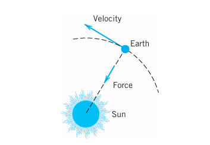
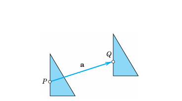
Of course, we would like to calculate with vectors. For instance, we want to find the resultant of forces or compare parallel forces of different magnitude. This motivates our next ideas: to define components of a vector, and then the two basic algebraic operations of vector addition and scalar multiplication.
For this we must first define equality of vectors in a way that is practical in connection with forces and other applications.
10.1.1 DEFINITION: Equality of Vectors
Two vectors \(\mathbf{a}\) and \(\mathbf{b}\) are equal, written \(\mathbf{a} = \mathbf{b}\), if they have the same length and the same direction (as explained in Figure 10.3; in particular, note (B)). Hence a vector can be arbitrarily translated; that is, its initial point can be chosen arbitrarily.
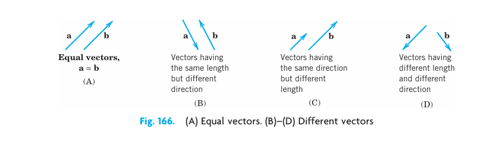
10.1.2 Components of a Vector
We choose an \(xyz\) Cartesian coordinate system in space (Figure 10.4), that is, a usual rectangular coordinate system with the same scale of measurement on the three mutually perpendicular coordinate axes. Let \(\mathbf{a}\) be a given vector with initial point \(P: (x_1, y_1, z_1)\) and terminal point \(Q: (x_2, y_2, z_2)\). Then the three coordinate differences
\[ a_1 = x_2 - x_1, \quad a_2 = y_2 - y_1, \quad a_3 = z_2 - z_1 \tag{10.1}\]
are called the components of the vector \(\mathbf{a}\) with respect to that coordinate system, and we write simply \(\mathbf{a} = [a_1, a_2, a_3]\). See Figure 10.5.
The length \(|\mathbf{a}|\) of \(\mathbf{a}\) can now readily be expressed in terms of components because from (Equation 10.1) and the Pythagorean theorem we have
\[ |\mathbf{a}| = \sqrt{a_1^2 + a_2^2 + a_3^2}. \tag{10.2}\]
10.1.3 EXAMPLE 1 Components and Length of a Vector
The vector \(\mathbf{a}\) with initial point \(P: (4, 0, 2)\) and terminal point \(Q: (6, -1, 2)\) has the components
\[ a_1 = 6 - 4 = 2, \quad a_2 = -1 - 0 = -1, \quad a_3 = 2 - 2 = 0. \]
Hence \(\mathbf{a} = [2, -1, 0]\). (Can you sketch \(\mathbf{a}\), as in Figure 10.5?) Equation (Equation 10.2) gives the length
\[ |\mathbf{a}| = \sqrt{2^2 + (-1)^2 + 0^2} = \sqrt{5}. \]
If we choose \((-1, 5, 8)\) as the initial point of \(\mathbf{a}\), the corresponding terminal point is \((1, 4, 8)\).
If we choose the origin \((0, 0, 0)\) as the initial point of \(\mathbf{a}\), the corresponding terminal point is \((2, -1, 0)\); its coordinates equal the components of \(\mathbf{a}\). This suggests that we can determine each point in space by a vector, called the position vector of the point, as follows.
A Cartesian coordinate system being given, the position vector \(\mathbf{r}\) of a point \(A: (x, y, z)\) is the vector with the origin \((0, 0, 0)\) as the initial point and \(A\) as the terminal point (see Figure 10.6). Thus in components, \(\mathbf{r} = [x, y, z]\). This can be seen directly from (Equation 10.1) with \(x_1 = y_1 = z_1 = 0\).
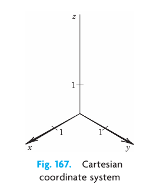
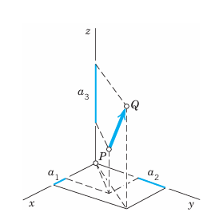
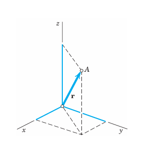
10.1.4 THEOREM 1 Vectors as Ordered Triples of Real Numbers
A fixed Cartesian coordinate system being given, each vector is uniquely determined by its ordered triple of corresponding components. Conversely, to each ordered triple of real numbers \((a_1, a_2, a_3)\) there corresponds precisely one vector \(\mathbf{a} = [a_1, a_2, a_3]\), with \((0, 0, 0)\) corresponding to the zero vector \(\mathbf{0}\), which has length 0 and no direction.
Hence a vector equation \(\mathbf{a} = \mathbf{b}\) is equivalent to the three equations \(a_1 = b_1\), \(a_2 = b_2\), \(a_3 = b_3\) for the components.
We now see that from our “geometric” definition of a vector as an arrow we have arrived at an “algebraic” characterization of a vector by Theorem 1. We could have started from the latter and reversed our process. This shows that the two approaches are equivalent.
10.1.5 Vector Addition, Scalar Multiplication
Calculations with vectors are very useful and are almost as simple as the arithmetic for real numbers. Vector arithmetic follows almost naturally from applications. We first define how to add vectors and later on how to multiply a vector by a number.
10.1.6 DEFINITION: Addition of Vectors
The sum \(\mathbf{a} + \mathbf{b}\) of two vectors \(\mathbf{a} = [a_1, a_2, a_3]\) and \(\mathbf{b} = [b_1, b_2, b_3]\) is obtained by adding the corresponding components,
\[ \mathbf{a} + \mathbf{b} = [a_1 + b_1, \, a_2 + b_2, \, a_3 + b_3]. \tag{10.3}\]
Geometrically, place the vectors as in Figure 10.7 (the initial point of \(\mathbf{b}\) at the terminal point of \(\mathbf{a}\)); then \(\mathbf{a} + \mathbf{b}\) is the vector drawn from the initial point of \(\mathbf{a}\) to the terminal point of \(\mathbf{b}\).
For forces, this addition is the parallelogram law by which we obtain the resultant of two forces in mechanics. See Figure 10.8.
Figure 10.9 shows (for the plane) that the “algebraic” way and the “geometric way” of vector addition give the same vector.
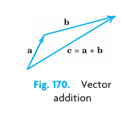
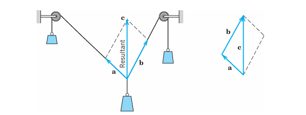
10.1.7 Basic Properties of Vector Addition
Familiar laws for real numbers give immediately:
\[ \begin{aligned} &\text{(a)} \quad \mathbf{a} + \mathbf{b} = \mathbf{b} + \mathbf{a} \quad &\text{(Commutativity)} \\ &\text{(b)} \quad (\mathbf{u} + \mathbf{v}) + \mathbf{w} = \mathbf{u} + (\mathbf{v} + \mathbf{w}) \quad &\text{(Associativity)} \\ &\text{(c)} \quad \mathbf{a} + \mathbf{0} = \mathbf{0} + \mathbf{a} = \mathbf{a} \quad & \\ &\text{(d)} \quad \mathbf{a} + (-\mathbf{a}) = \mathbf{0}. \quad & \end{aligned} \tag{10.4}\]
Properties (a) and (b) are verified geometrically in Figure 10.10 and Figure 10.11. Furthermore, \(-\mathbf{a}\) denotes the vector having the length \(|\mathbf{a}|\) and the direction opposite to that of \(\mathbf{a}\).
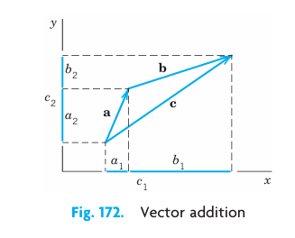
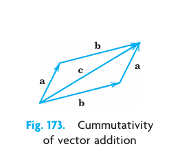
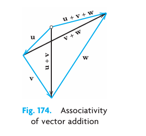
In (Equation 10.4)(b) we may simply write \(\mathbf{u} + \mathbf{v} + \mathbf{w}\), and similarly for sums of more than three vectors. Instead of \(\mathbf{a} + \mathbf{a}\) we also write \(2\mathbf{a}\), and so on. This (and the notation \(-\mathbf{a}\) used just before) motivates defining the second algebraic operation for vectors as follows.
10.1.8 DEFINITION: Scalar Multiplication (Multiplication by a Number)
The product \(c\mathbf{a}\) of any vector \(\mathbf{a} = [a_1, a_2, a_3]\) and any scalar \(c\) (real number \(c\)) is the vector obtained by multiplying each component of \(\mathbf{a}\) by \(c\),
\[ c\mathbf{a} = [ca_1, ca_2, ca_3]. \tag{10.5}\]
Geometrically, if \(\mathbf{a} \neq \mathbf{0}\), then \(c\mathbf{a}\) with \(c > 0\) has the direction of \(\mathbf{a}\) and with \(c < 0\) the direction opposite to \(\mathbf{a}\). In any case, the length of \(c\mathbf{a}\) is \(|c\mathbf{a}| = |c||\mathbf{a}|\), and \(c\mathbf{a} = \mathbf{0}\) if \(\mathbf{a} = \mathbf{0}\) or \(c = 0\) (or both). (See Figure 10.12.)
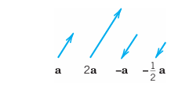
10.1.9 Basic Properties of Scalar Multiplication
From the definitions we obtain directly:
\[ \begin{aligned} &\text{(a)} \quad c(\mathbf{a} + \mathbf{b}) = c\mathbf{a} + c\mathbf{b} \\ &\text{(b)} \quad (c + k)\mathbf{a} = c\mathbf{a} + k\mathbf{a} \\ &\text{(c)} \quad c(k\mathbf{a}) = (ck)\mathbf{a} \quad \text{(written } ck\mathbf{a}\text{)} \\ &\text{(d)} \quad 1\mathbf{a} = \mathbf{a}. \end{aligned} \tag{10.6}\]
You may prove that (Equation 10.4) and (Equation 10.6) imply for any vector \(\mathbf{a}\):
\[ \begin{aligned} &\text{(a)} \quad 0\mathbf{a} = \mathbf{0} \\ &\text{(b)} \quad (-1)\mathbf{a} = -\mathbf{a}. \end{aligned} \tag{10.7}\]
Instead of \(\mathbf{b} + (-\mathbf{a})\) we simply write \(\mathbf{b} - \mathbf{a}\) (Figure 10.13).
10.1.10 EXAMPLE 2 Vector Addition. Multiplication by Scalars
With respect to a given coordinate system, let
\[ \mathbf{a} = \left[4, 0, \frac{1}{3}\right] \quad \text{and} \quad \mathbf{b} = \left[2, -5, -\frac{1}{3}\right]. \]
Then \(-\mathbf{a} = \left[-4, 0, -\frac{1}{3}\right]\), \(7\mathbf{a} = \left[28, 0, \frac{7}{3}\right]\), \(\mathbf{a} + \mathbf{b} = \left[6, -5, 0\right]\), and
\[ 2(\mathbf{a} - \mathbf{b}) = 2\left[2, 5, \frac{2}{3}\right] = \left[4, 10, \frac{4}{3}\right] = 2\mathbf{a} - 2\mathbf{b}. \]
10.1.11 Unit Vectors i, j, k
Besides \(\mathbf{a} = [a_1, a_2, a_3]\) another popular way of writing vectors is
\[ \mathbf{a} = a_1\mathbf{i} + a_2\mathbf{j} + a_3\mathbf{k}. \tag{10.8}\]
In this representation, \(\mathbf{i}, \mathbf{j}, \mathbf{k}\) are the unit vectors in the positive directions of the axes of a Cartesian coordinate system (Figure 10.14). Hence, in components,
\[ \mathbf{i} = [1, 0, 0], \quad \mathbf{j} = [0, 1, 0], \quad \mathbf{k} = [0, 0, 1] \tag{10.9}\]
and the right side of (Equation 10.8) is a sum of three vectors parallel to the three axes.
10.1.12 EXAMPLE 3 ijk Notation for Vectors
In Example 2 we have \(\mathbf{a} = 4\mathbf{i} + \frac{1}{3}\mathbf{k}\), \(\mathbf{b} = 2\mathbf{i} - 5\mathbf{j} - \frac{1}{3}\mathbf{k}\), and so on.
All the vectors \(\mathbf{a} = [a_1, a_2, a_3] = a_1\mathbf{i} + a_2\mathbf{j} + a_3\mathbf{k}\) (with real numbers as components) form the real vector space \(\mathbb{R}^3\) with the two algebraic operations of vector addition and scalar multiplication as just defined. \(\mathbb{R}^3\) has dimension 3. The triple of vectors \(\mathbf{i}, \mathbf{j}, \mathbf{k}\) is called a standard basis of \(\mathbb{R}^3\). Given a Cartesian coordinate system, the representation (Equation 10.8) of a given vector is unique.
Vector space \(\mathbb{R}^3\) is a model of a general vector space, as discussed in Section 8.9, but is not needed in this chapter.
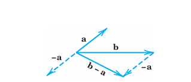
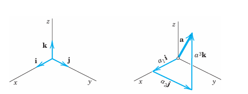
10.1.13 Problem Set 9.1
10.1.13.1 1–5: COMPONENTS AND LENGTH
Find the components of the vector \(\mathbf{v}\) with initial point \(P\) and terminal point \(Q\). Find \(|\mathbf{v}|\). Sketch \(\mathbf{v}\). Find the unit vector \(\mathbf{u}\) in the direction of \(\mathbf{v}\).
- \(P: (1, 1, 0), \quad Q: (6, 2, 0)\)
- \(P: (1, 1, 1), \quad Q: (2, 2, 0)\)
- \(P: (-3.0, 4.0, -0.5), \quad Q: (5.5, 0, 1.2)\)
- \(P: (1, 4, 2), \quad Q: (-1, -4, -2)\)
- \(P: (0, 0, 0), \quad Q: (2, 1, -2)\)
10.1.13.2 6–10: FIND TERMINAL POINT
Find the terminal point \(Q\) of the vector \(\mathbf{v}\) with components as given and initial point \(P\). Find \(|\mathbf{v}|\).
- \([4, 0, 0]; \quad P: (0, 2, 13)\)
- \([1/2, 3, -1/4]; \quad P: (7/2, -3, 3/4)\)
- \([13.1, 0.8, -2.0]; \quad P: (0, 0, 0)\)
- \([6, 1, -4]; \quad P: (-6, -1, -4)\)
- \([0, -3, 3]; \quad P: (0, 3, -3)\)
10.1.13.3 11–18: ADDITION, SCALAR MULTIPLICATION
Let \(\mathbf{a} = [3, 2, 0] = 3\mathbf{i} + 2\mathbf{j}\); \(\mathbf{b} = [-4, 6, 0] = -4\mathbf{i} + 6\mathbf{j}\); \(\mathbf{c} = [5, -1, 8] = 5\mathbf{i} - \mathbf{j} + 8\mathbf{k}\); \(\mathbf{d} = [0, 0, 4] = 4\mathbf{k}\). Find:
\(2\mathbf{a}, \quad \frac{1}{2}\mathbf{a}, \quad -\mathbf{a}\)
\((\mathbf{a} + \mathbf{b}) + \mathbf{c}, \quad \mathbf{a} + (\mathbf{b} + \mathbf{c})\)
\(\mathbf{b} + \mathbf{c}, \quad \mathbf{c} + \mathbf{b}\)
\(3\mathbf{c} - 6\mathbf{d}, \quad 3(\mathbf{c} - 2\mathbf{d})\)
\(7(\mathbf{c} - \mathbf{b}), \quad 7\mathbf{c} - 7\mathbf{b}\)
\(9\mathbf{a} - 3\mathbf{c}, \quad 9\left(\frac{1}{2}\mathbf{a} - \frac{1}{6}\mathbf{c}\right)\)
\((7 - 3)\mathbf{a}, \quad 7\mathbf{a} - 3\mathbf{a}\)
\(4\mathbf{a} + 3\mathbf{b}, \quad -4\mathbf{a} - 3\mathbf{b}\)
What laws do Probs. 12–16 illustrate?
Prove Equations (Equation 10.4) and (Equation 10.6).
10.1.13.4 21–25: FORCES, RESULTANT
Find the resultant in terms of components and its magnitude.
- \(\mathbf{p} = [2, 3, 0], \quad \mathbf{q} = [0, 6, 1], \quad \mathbf{u} = [2, 0, -4]\)
- \(\mathbf{p} = [1, -2, 3], \quad \mathbf{q} = [3, 21, -16], \quad \mathbf{u} = [-4, -19, 13]\)
- \(\mathbf{u} = [8, -1, 0], \quad \mathbf{v} = \left[\frac{1}{2}, 0, \frac{4}{3}\right], \quad \mathbf{w} = \left[-\frac{1}{27}, 1, 1\frac{1}{3}\right]\)
- \(\mathbf{p} = [-1, 2, -3], \quad \mathbf{q} = [1, 1, 1], \quad \mathbf{u} = [1, -2, 2]\)
- \(\mathbf{u} = [3, 1, -6], \quad \mathbf{v} = [0, 2, 5], \quad \mathbf{w} = [3, -1, -13]\)
10.1.13.5 26–37: FORCES, VELOCITIES
Equilibrium. Find \(\mathbf{v}\) such that \(\mathbf{p}, \mathbf{q}, \mathbf{u}\) in Prob. 21 and \(\mathbf{v}\) are in equilibrium.
Find \(\mathbf{p}\) such that \(\mathbf{u}, \mathbf{v}, \mathbf{w}\) in Prob. 23 and \(\mathbf{p}\) are in equilibrium.
Unit vector. Find the unit vector in the direction of the resultant in Prob. 24.
Restricted resultant. Find all \(\mathbf{v}\) such that the resultant of \(\mathbf{v}, \mathbf{p}, \mathbf{q}, \mathbf{u}\) with \(\mathbf{p}, \mathbf{q}, \mathbf{u}\) as in Prob. 21 is parallel to the \(xy\)-plane.
Find \(\mathbf{v}\) such that the resultant of \(\mathbf{p}, \mathbf{q}, \mathbf{u}, \mathbf{v}\) with \(\mathbf{p}, \mathbf{q}, \mathbf{u}\) as in Prob. 24 has no components in the \(x\)- and \(y\)-directions.
For what \(k\) is the resultant of \([2, 0, -7]\), \([1, 2, -3]\), and \([0, 3, k]\) parallel to the \(xy\)-plane?
If \(|\mathbf{p}| = 6\) and \(|\mathbf{q}| = 4\), what can you say about the magnitude and direction of the resultant? Can you think of an application to robotics?
Same question as in Prob. 32 if \(|\mathbf{p}| = 9, |\mathbf{q}| = 6, |\mathbf{u}| = 3\).
Relative velocity. If airplanes A and B are moving southwest with speed \(|\mathbf{v}_A| = 550\) mph, and northwest with speed \(|\mathbf{v}_B| = 450\) mph, respectively, what is the relative velocity \(\mathbf{v} = \mathbf{v}_B - \mathbf{v}_A\) of B with respect to A?
Same question as in Prob. 34 for two ships moving northeast with speed \(|\mathbf{v}_A| = 22\) knots and west with speed \(|\mathbf{v}_B| = 19\) knots.
Reflection. If a ray of light is reflected once in each of two mutually perpendicular mirrors, what can you say about the reflected ray?
Force polygon. Truss. Find the forces in the system of two rods (truss) in the figure, where \(|\mathbf{p}| = 1000\) nt.
Hint. Forces in equilibrium form a polygon, the force polygon.Figure 10.15: Problem 37 Truss and Force Polygon TEAM PROJECT. Geometric Applications. To increase your skill in dealing with vectors, use vectors to prove the following.
- The diagonals of a parallelogram bisect each other.
- The line through the midpoints of adjacent sides of a parallelogram bisects one of the diagonals in the ratio \(1:3\).
- Obtain (b) from (a).
- The three medians of a triangle (the segments from a vertex to the midpoint of the opposite side) meet at a single point, which divides the medians in the ratio \(2:1\).
- The quadrilateral whose vertices are the midpoints of the sides of an arbitrary quadrilateral is a parallelogram.
- The four space diagonals of a parallelepiped meet and bisect each other.
- The sum of the vectors drawn from the center of a regular polygon to its vertices is the zero vector.
10.2 Inner Product (Dot Product). Orthogonality
The inner product or dot product can be motivated by calculating work done by a constant force, determining components of forces, or other applications. It involves the length of vectors and the angle between them. The inner product is a kind of multiplication of two vectors, defined in such a way that the outcome is a scalar. Indeed, another term for inner product is scalar product, a term we shall not use here. The definition of the inner product is as follows.
10.2.1 DEFINITION: Inner Product (Dot Product) of Vectors
The inner product or dot product \(\mathbf{a} \cdot \mathbf{b}\) (read “\(\mathbf{a}\) dot \(\mathbf{b}\)”) of two vectors \(\mathbf{a}\) and \(\mathbf{b}\) is the product of their lengths times the cosine of their angle (see Figure 10.16),
\[ \begin{aligned} \mathbf{a} \cdot \mathbf{b} &= |\mathbf{a}||\mathbf{b}| \cos \gamma \quad &\text{if } \mathbf{a} \neq \mathbf{0}, \mathbf{b} \neq \mathbf{0} \\ \mathbf{a} \cdot \mathbf{b} &= 0 \quad &\text{if } \mathbf{a} = \mathbf{0} \text{ or } \mathbf{b} = \mathbf{0}. \end{aligned} \tag{10.10}\]
The angle \(\gamma\), \(0 \le \gamma \le \pi\), between \(\mathbf{a}\) and \(\mathbf{b}\) is measured when the initial points of the vectors coincide, as in Figure 10.16. In components, \(\mathbf{a} = [a_1, a_2, a_3]\), \(\mathbf{b} = [b_1, b_2, b_3]\), and
\[ \mathbf{a} \cdot \mathbf{b} = a_1 b_1 + a_2 b_2 + a_3 b_3. \tag{10.11}\]
The second line in (Equation 10.10) is needed because \(\gamma\) is undefined when \(\mathbf{a} = \mathbf{0}\) or \(\mathbf{b} = \mathbf{0}\). The derivation of (Equation 10.11) from (Equation 10.10) is shown below.
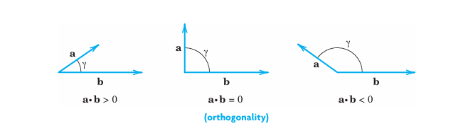
10.2.2 Orthogonality
Since the cosine in (Equation 10.10) may be positive, 0, or negative, so may be the inner product (Figure 10.16). The case that the inner product is zero is of particular practical interest and suggests the following concept.
A vector \(\mathbf{a}\) is called orthogonal to a vector \(\mathbf{b}\) if \(\mathbf{a} \cdot \mathbf{b} = 0\). Then \(\mathbf{b}\) is also orthogonal to \(\mathbf{a}\), and we call \(\mathbf{a}\) and \(\mathbf{b}\) orthogonal vectors. Clearly, this happens for nonzero vectors if and only if \(\cos \gamma = 0\); thus \(\gamma = \pi/2\) (\(90^\circ\)). This proves the important:
10.2.3 THEOREM 1 Orthogonality Criterion
The inner product of two nonzero vectors is 0 if and only if these vectors are perpendicular.
10.2.4 Length and Angle
Equation (Equation 10.10) with \(\mathbf{b} = \mathbf{a}\) gives \(\mathbf{a} \cdot \mathbf{a} = |\mathbf{a}|^2\). Hence
\[ |\mathbf{a}| = \sqrt{\mathbf{a} \cdot \mathbf{a}}. \tag{10.12}\]
From (Equation 10.12) and (Equation 10.10) we obtain for the angle \(\gamma\) between two nonzero vectors
\[ \cos \gamma = \frac{\mathbf{a} \cdot \mathbf{b}}{|\mathbf{a}||\mathbf{b}|} = \frac{\mathbf{a} \cdot \mathbf{b}}{\sqrt{\mathbf{a} \cdot \mathbf{a}}\sqrt{\mathbf{b} \cdot \mathbf{b}}}. \tag{10.13}\]
10.2.5 EXAMPLE 1 Inner Product. Angle Between Vectors
Find the inner product and the lengths of \(\mathbf{a} = [1, 2, 0]\) and \(\mathbf{b} = [3, -2, 1]\) as well as the angle between these vectors.
Solution.
\(\mathbf{a} \cdot \mathbf{b} = 1 \cdot 3 + 2 \cdot (-2) + 0 \cdot 1 = -1\), \(|\mathbf{a}| = \sqrt{\mathbf{a} \cdot \mathbf{a}} = \sqrt{5}\), \(|\mathbf{b}| = \sqrt{\mathbf{b} \cdot \mathbf{b}} = \sqrt{14}\), and (Equation 10.13) gives the angle
\[ \gamma = \arccos \left( \frac{\mathbf{a} \cdot \mathbf{b}}{|\mathbf{a}||\mathbf{b}|} \right) = \arccos(-0.11952) = 1.69061 \text{ rad} = 96.865^\circ. \]
From the definition we see that the inner product has the following properties. For any vectors \(\mathbf{a}, \mathbf{b}, \mathbf{c}\) and scalars \(q_1, q_2\),
\[ \begin{aligned} &\text{(a)} \quad (q_1\mathbf{a} + q_2\mathbf{b}) \cdot \mathbf{c} = q_1\mathbf{a} \cdot \mathbf{c} + q_2\mathbf{b} \cdot \mathbf{c} \quad &\text{(Linearity)} \\ &\text{(b)} \quad \mathbf{a} \cdot \mathbf{b} = \mathbf{b} \cdot \mathbf{a} \quad &\text{(Symmetry)} \\ &\text{(c)} \quad \begin{aligned} &\mathbf{a} \cdot \mathbf{a} \ge 0 \\ &\mathbf{a} \cdot \mathbf{a} = 0 \text{ if and only if } \mathbf{a} = \mathbf{0} \end{aligned} \quad &\text{(Positive-definiteness)} \end{aligned} \tag{10.14}\]
Hence dot multiplication is commutative as shown by (Equation 10.14)(b). Furthermore, it is distributive with respect to vector addition. This follows from (Equation 10.14)(a) with \(q_1 = 1\) and \(q_2 = 1\):
\[ (\mathbf{a} + \mathbf{b}) \cdot \mathbf{c} = \mathbf{a} \cdot \mathbf{c} + \mathbf{b} \cdot \mathbf{c} \quad \text{(Distributivity)}. \tag{10.15}\]
Furthermore, from (Equation 10.10) and \(|\cos \gamma| \le 1\) we see that
\[ |\mathbf{a} \cdot \mathbf{b}| \le |\mathbf{a}||\mathbf{b}| \quad \text{(Cauchy–Schwarz inequality)}. \tag{10.16}\]
Using this and (Equation 10.12), you may prove (see Prob. 16):
\[ |\mathbf{a} + \mathbf{b}| \le |\mathbf{a}| + |\mathbf{b}| \quad \text{(Triangle inequality)}. \tag{10.17}\]
Geometrically, (Equation 10.17) with \(<\) says that one side of a triangle must be shorter than the sum of the other two sides; this motivates the name of (Equation 10.17).
A simple direct calculation with inner products shows that
\[ |\mathbf{a} + \mathbf{b}|^2 + |\mathbf{a} - \mathbf{b}|^2 = 2(|\mathbf{a}|^2 + |\mathbf{b}|^2) \quad \text{(Parallelogram equality)}. \tag{10.18}\]
Equations (Equation 10.16)–(Equation 10.18) play a basic role in so-called Hilbert spaces, which are abstract inner product spaces. Hilbert spaces form the basis of quantum mechanics; for details see [GenRef7] listed in App. 1.
10.2.6 Derivation of (Equation 10.11) from (Equation 10.10)
We write \(\mathbf{a} = a_1\mathbf{i} + a_2\mathbf{j} + a_3\mathbf{k}\) and \(\mathbf{b} = b_1\mathbf{i} + b_2\mathbf{j} + b_3\mathbf{k}\), as in (Equation 10.8) of Section 10.1. If we substitute this into \(\mathbf{a} \cdot \mathbf{b}\) and use (Equation 10.15), we first have a sum of \(3 \times 3 = 9\) products:
\[ \mathbf{a} \cdot \mathbf{b} = a_1 b_1 \mathbf{i} \cdot \mathbf{i} + a_1 b_2 \mathbf{i} \cdot \mathbf{j} + \dots + a_3 b_3 \mathbf{k} \cdot \mathbf{k}. \]
Now \(\mathbf{i}, \mathbf{j}, \mathbf{k}\) are unit vectors, so that \(\mathbf{i} \cdot \mathbf{i} = \mathbf{j} \cdot \mathbf{j} = \mathbf{k} \cdot \mathbf{k} = 1\) by (Equation 10.12). Since the coordinate axes are perpendicular, so are \(\mathbf{i}, \mathbf{j}, \mathbf{k}\), and Theorem 1 implies that the other six of those nine products are 0, namely, \(\mathbf{i} \cdot \mathbf{j} = \mathbf{j} \cdot \mathbf{i} = \mathbf{j} \cdot \mathbf{k} = \mathbf{k} \cdot \mathbf{j} = \mathbf{k} \cdot \mathbf{i} = \mathbf{i} \cdot \mathbf{k} = 0\). But this reduces our sum for \(\mathbf{a} \cdot \mathbf{b}\) to (Equation 10.11). \(\square\)
10.2.7 Applications of Inner Products
Typical applications of inner products are shown in the following examples and in Section 10.2.13.
10.2.8 EXAMPLE 2 Work Done by a Force Expressed as an Inner Product
This is a major application. It concerns a body on which a constant force \(\mathbf{p}\) acts. (For a variable force, see Section 11.1) Let the body be given a displacement \(\mathbf{d}\). Then the work done by \(\mathbf{p}\) in the displacement is defined as
\[ W = |\mathbf{p}||\mathbf{d}| \cos \alpha = \mathbf{p} \cdot \mathbf{d}, \tag{10.19}\]
that is, magnitude \(|\mathbf{p}|\) of the force times length \(|\mathbf{d}|\) of the displacement times the cosine of the angle \(\alpha\) between \(\mathbf{p}\) and \(\mathbf{d}\) (Figure 10.17). If \(\alpha < 90^\circ\), then \(W > 0\). If \(\mathbf{p}\) and \(\mathbf{d}\) are orthogonal, then the work is zero. If \(\alpha > 90^\circ\), then \(W < 0\), which means that in the displacement one has to do work against the force. For example, think of swimming across a river at some angle \(\alpha\) against the current.
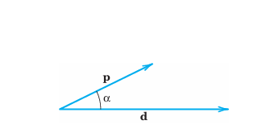
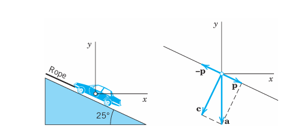
10.2.9 EXAMPLE 3 Component of a Force in a Given Direction
What force in the rope in Figure 10.18 will hold a car of 5000 lb in equilibrium if the ramp makes an angle of \(25^\circ\) with the horizontal?
Solution.
Introducing coordinates as shown, the weight is \(\mathbf{a} = [0, -5000]\) because this force points downward, in the negative \(y\)-direction. We have to represent \(\mathbf{a}\) as a sum (resultant) of two forces, \(\mathbf{a} = \mathbf{c} + \mathbf{p}\), where \(\mathbf{c}\) is the force the car exerts on the ramp, which is of no interest to us, and \(\mathbf{p}\) is parallel to the rope. A vector in the direction of the rope is (see Figure 10.18):
\[ \mathbf{b} = [-1, \tan 25^\circ] = [-1, 0.46631], \quad \text{thus} \quad |\mathbf{b}| = 1.10338. \]
The direction of the unit vector \(\mathbf{u}\) is opposite to the direction of the rope so that
\[ \mathbf{u} = -\frac{1}{|\mathbf{b}|}\mathbf{b} = [0.90631, -0.42262]. \]
Since \(|\mathbf{u}| = 1\) and \(\cos \gamma > 0\), we see that we can write our result as
\[ |\mathbf{p}| = (|\mathbf{a}| \cos \gamma) |\mathbf{u}| = \mathbf{a} \cdot \mathbf{u} = -\frac{\mathbf{a} \cdot \mathbf{b}}{|\mathbf{b}|} = -\frac{-5000 \cdot 0.46631}{1.10338} = 2113 \text{ lb}. \]
We can also note that \(\gamma = 90^\circ - 25^\circ = 65^\circ\) is the angle between \(\mathbf{a}\) and \(\mathbf{p}\) so that
\[ |\mathbf{p}| = |\mathbf{a}| \cos \gamma = 5000 \cos 65^\circ = 2113 \text{ lb}. \]
Answer: About 2100 lb. \(\square\)
Example 3 is typical of applications that deal with the component or projection of a vector \(\mathbf{a}\) in the direction of a vector \(\mathbf{b}\) (\(\neq \mathbf{0}\)). If we denote by \(p\) the length of the orthogonal projection of \(\mathbf{a}\) on a straight line \(l\) parallel to \(\mathbf{b}\) as shown in Figure 10.19, then
\[ p = |\mathbf{a}| \cos \gamma. \tag{10.20}\]
Here \(p\) is taken with the plus sign if \(p\mathbf{b}\) has the direction of \(\mathbf{b}\) and with the minus sign if \(p\mathbf{b}\) has the direction opposite to \(\mathbf{b}\).
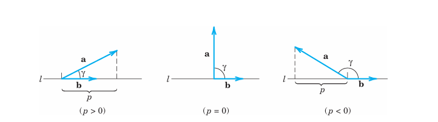
Multiplying (Equation 10.20) by \(|\mathbf{b}|/|\mathbf{b}| = 1\), we have \(\mathbf{a} \cdot \mathbf{b}\) in the numerator and thus
\[ p = \frac{\mathbf{a} \cdot \mathbf{b}}{|\mathbf{b}|} \quad (\mathbf{b} \neq \mathbf{0}). \tag{10.21}\]
If \(\mathbf{b}\) is a unit vector, as it is often used for fixing a direction, then (Equation 10.21) simply gives
\[ p = \mathbf{a} \cdot \mathbf{b} \quad (|\mathbf{b}| = 1). \tag{10.22}\]
Figure 10.20 shows the projection \(p\) of \(\mathbf{a}\) in the direction of \(\mathbf{b}\) (as in Figure 10.19) and the projection \(q = |\mathbf{b}| \cos \gamma\) of \(\mathbf{b}\) in the direction of \(\mathbf{a}\).
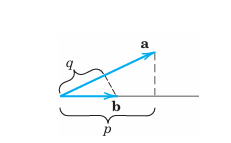
10.2.10 EXAMPLE 4 Orthonormal Basis
By definition, an orthonormal basis for 3-space is a basis \(\{\mathbf{a}, \mathbf{b}, \mathbf{c}\}\) consisting of orthogonal unit vectors. It has the great advantage that the determination of the coefficients in representations \(\mathbf{v} = l_1\mathbf{a} + l_2\mathbf{b} + l_3\mathbf{c}\) of a given vector \(\mathbf{v}\) is very simple. We claim that \(l_1 = \mathbf{a} \cdot \mathbf{v}\), \(l_2 = \mathbf{b} \cdot \mathbf{v}\), \(l_3 = \mathbf{c} \cdot \mathbf{v}\). Indeed, this follows simply by taking the inner products of the representation with \(\mathbf{a}, \mathbf{b}, \mathbf{c}\), respectively, and using the orthonormality of the basis, \(\mathbf{a} \cdot \mathbf{v} = l_1 \mathbf{a} \cdot \mathbf{a} + l_2 \mathbf{a} \cdot \mathbf{b} + l_3 \mathbf{a} \cdot \mathbf{c} = l_1\), etc.
For example, the unit vectors \(\mathbf{i}, \mathbf{j}, \mathbf{k}\) in (Equation 10.8), Section 10.1, associated with a Cartesian coordinate system form an orthonormal basis, called the standard basis with respect to the given coordinate system. \(\square\)
10.2.11 EXAMPLE 5 Orthogonal Straight Lines in the Plane
Find the straight line \(L_1\) through the point \(P: (1, 3)\) in the \(xy\)-plane and perpendicular to the straight line \(L_2: x - 2y + 2 = 0\); see Figure 10.21.
Solution.
The idea is to write a general straight line \(L_1: a_1 x + a_2 y = c\) as \(\mathbf{a} \cdot \mathbf{r} = c\) with \(\mathbf{a} = [a_1, a_2] \neq \mathbf{0}\) and \(\mathbf{r} = [x, y]\), according to (Equation 10.11). Now the line \(L^*\) through the origin and parallel to \(L_1\) is \(\mathbf{a} \cdot \mathbf{r} = 0\). Hence, by Theorem 1, the vector \(\mathbf{a}\) is perpendicular to \(\mathbf{r}\). Hence it is perpendicular to \(L^*\) and also to \(L_1\) because \(L_1\) and \(L^*\) are parallel. \(\mathbf{a}\) is called a normal vector of \(L_1\) (and of \(L^*\)).
Now a normal vector of the given line \(x - 2y + 2 = 0\) is \(\mathbf{b} = [1, -2]\). Thus \(L_1\) is perpendicular to \(L_2\) if \(\mathbf{b} \cdot \mathbf{a} = a_1 - 2a_2 = 0\), for instance, if \(\mathbf{a} = [2, 1]\). Hence \(L_1\) is given by \(2x + y = c\). It passes through \(P: (1, 3)\) when \(2 \cdot 1 + 3 = c = 5\).
Answer: \(y = -2x + 5\). Show that the point of intersection is \((x, y) = (1.6, 1.8)\). \(\square\)
10.2.12 EXAMPLE 6 Normal Vector to a Plane
Find a unit normal vector perpendicular to the plane \(4x + 2y + 4z = -7\).
Solution.
Using (Equation 10.11), we may write any plane in space as
\[ \mathbf{a} \cdot \mathbf{r} = a_1 x + a_2 y + a_3 z = c \tag{10.23}\]
where \(\mathbf{a} = [a_1, a_2, a_3] \neq \mathbf{0}\) and \(\mathbf{r} = [x, y, z]\). The unit vector in the direction of \(\mathbf{a}\) is (Figure 10.22)
\[ \mathbf{n} = \frac{1}{|\mathbf{a}|}\mathbf{a}. \]
Dividing by \(|\mathbf{a}|\), we obtain from (Equation 10.23):
\[ \mathbf{n} \cdot \mathbf{r} = p \quad \text{where} \quad p = \frac{c}{|\mathbf{a}|}. \tag{10.24}\]
From (Equation 10.22) we see that \(p\) is the projection of \(\mathbf{r}\) in the direction of \(\mathbf{n}\). This projection has the same constant value \(c/|\mathbf{a}|\) for the position vector \(\mathbf{r}\) of any point in the plane. Clearly this holds if and only if \(\mathbf{n}\) is perpendicular to the plane. \(\mathbf{n}\) is called a unit normal vector of the plane (the other being \(-\mathbf{n}\)).
Furthermore, from this and the definition of projection, it follows that \(|p|\) is the distance of the plane from the origin. Representation (Equation 10.24) is called Hesse’s normal form of a plane. In our case, \(\mathbf{a} = [4, 2, 4]\), \(c = -7\), \(|\mathbf{a}| = 6\), \(\mathbf{n} = \frac{1}{6}\mathbf{a} = \left[\frac{2}{3}, \frac{1}{3}, \frac{2}{3}\right]\), and the plane has the distance \(7/6\) from the origin. \(\square\)
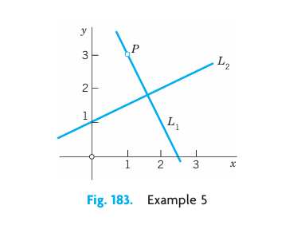
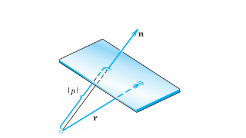
10.2.13 Section 10.2.13
10.2.13.1 1–10: INNER PRODUCT
Let \(\mathbf{a} = [1, -3, 5]\), \(\mathbf{b} = [4, 0, 8]\), \(\mathbf{c} = [-2, 9, 1]\). Find:
- \(\mathbf{a} \cdot \mathbf{b}, \quad \mathbf{b} \cdot \mathbf{a}, \quad \mathbf{b} \cdot \mathbf{c}\)
- \((-3\mathbf{a} + 5\mathbf{c}) \cdot \mathbf{b}, \quad 15(\mathbf{a} - \mathbf{c}) \cdot \mathbf{b}\)
- \(|\mathbf{a}|, \quad |2\mathbf{b}|, \quad |-\mathbf{c}|\)
- \(|\mathbf{a} + \mathbf{b}|, \quad |\mathbf{a}| + |\mathbf{b}|\)
- \(|\mathbf{b} + \mathbf{c}|, \quad |\mathbf{b}| + |\mathbf{c}|\)
- \(|\mathbf{a} + \mathbf{c}|^2 + |\mathbf{a} - \mathbf{c}|^2 - 2(|\mathbf{a}|^2 + |\mathbf{c}|^2)\)
- \(|\mathbf{a} \cdot \mathbf{c}|, \quad |\mathbf{a}||\mathbf{c}|\)
- \(5\mathbf{a} \cdot 13\mathbf{b}, \quad 65\mathbf{a} \cdot \mathbf{b}\)
- \(15\mathbf{a} \cdot \mathbf{b} + 15\mathbf{a} \cdot \mathbf{c}, \quad 15\mathbf{a} \cdot (\mathbf{b} + \mathbf{c})\)
- \(\mathbf{a} \cdot (\mathbf{b} - \mathbf{c}), \quad (\mathbf{a} - \mathbf{b}) \cdot \mathbf{c}\)
10.2.13.2 11–16: GENERAL PROBLEMS
- What laws do Probs. 1 and 4–7 illustrate?
- What does \(\mathbf{u} \cdot \mathbf{v} = \mathbf{u} \cdot \mathbf{w}\) imply if \(\mathbf{u} = \mathbf{0}\)? If \(\mathbf{u} \neq \mathbf{0}\)?
- Prove the Cauchy–Schwarz inequality.
- Verify the Cauchy–Schwarz and triangle inequalities for the above \(\mathbf{a}\) and \(\mathbf{b}\).
- Prove the parallelogram equality. Explain its name.
- Triangle inequality. Prove Equation (Equation 10.17). Hint. Use Equation (Equation 10.12) for \(|\mathbf{a} + \mathbf{b}|\) and Equation (Equation 10.16) to prove the square of Equation (Equation 10.17), then take roots.
10.2.13.3 17–20: WORK
Find the work done by a force \(\mathbf{p}\) acting on a body if the body is displaced along the straight segment \(AB\) from \(A\) to \(B\). Sketch \(AB\) and \(\mathbf{p}\). Show the details.
\(\mathbf{p} = [2, 5, 0], \quad A: (1, 3, 3), \quad B: (3, 5, 5)\)
\(\mathbf{p} = [-1, -2, 4], \quad A: (0, 0, 0), \quad B: (6, 7, 5)\)
\(\mathbf{p} = [0, 4, 3], \quad A: (4, 5, -1), \quad B: (1, 3, 0)\)
\(\mathbf{p} = [6, -3, -3], \quad A: (1, 5, 2), \quad B: (3, 4, 1)\)
Resultant. Is the work done by the resultant of two forces in a displacement the sum of the work done by each of the forces separately? Give proof or counterexample.
10.2.13.4 22–30: ANGLE BETWEEN VECTORS
Let \(\mathbf{a} = [1, 1, 0]\), \(\mathbf{b} = [3, 2, 1]\), and \(\mathbf{c} = [1, 0, 2]\). Find the angle between:
- \(\mathbf{a}, \quad \mathbf{b}\)
- \(\mathbf{b}, \quad \mathbf{c}\)
- \(\mathbf{a} + \mathbf{c}, \quad \mathbf{b} + \mathbf{c}\)
- What will happen to the angle in Prob. 24 if we replace \(\mathbf{c}\) by \(n\mathbf{c}\) with larger and larger \(n\)?
- Cosine law. Deduce the law of cosines by using vectors \(\mathbf{a}, \mathbf{b}\), and \(\mathbf{a} - \mathbf{b}\).
- Addition law. \(\cos(\alpha - \beta) = \cos \alpha \cos \beta + \sin \alpha \sin \beta\). Obtain this by using \(\mathbf{a} = [\cos \alpha, \sin \alpha]\), \(\mathbf{b} = [\cos \beta, \sin \beta]\) where \(0 \le \alpha \le \beta \le 2\pi\).
- Triangle. Find the angles of the triangle with vertices \(A: (0, 0, 2)\), \(B: (3, 0, 2)\), and \(C: (1, 1, 1)\). Sketch the triangle.
- Parallelogram. Find the angles if the vertices are \((0,0)\), \((6, 0)\), \((8, 3)\), and \((2, 3)\).
- Distance. Find the distance of the point \(A: (1, 0, 2)\) from the plane \(P: 3x + y + z = 9\). Make a sketch.
10.2.13.5 31–35: ORTHOGONALITY
Orthogonality is particularly important, mainly because of orthogonal coordinates, such as Cartesian coordinates, whose natural basis consists of three orthogonal unit vectors.
- For what values of \(a_1\) are \([a_1, 4, 3]\) and \([3, -2, 12]\) orthogonal?
- Planes. For what \(c\) are \(3x + z = 5\) and \(8x - y + cz = 9\) orthogonal?
- Unit vectors. Find all unit vectors \(\mathbf{a} = [a_1, a_2]\) in the plane orthogonal to \([4, 3]\).
- Corner reflector. Find the angle between a light ray and its reflection in three orthogonal plane mirrors, known as a corner reflector.
- Parallelogram. When will the diagonals be orthogonal? Give a proof.
10.2.13.6 36–40: COMPONENT IN THE DIRECTION OF A VECTOR
Find the component of \(\mathbf{a}\) in the direction of \(\mathbf{b}\). Make a sketch.
- \(\mathbf{a} = [1, 1, 1], \quad \mathbf{b} = [2, 1, 3]\)
- \(\mathbf{a} = [3, 4, 0], \quad \mathbf{b} = [4, -3, 2]\)
- \(\mathbf{a} = [8, 2, 0], \quad \mathbf{b} = [-4, -1, 0]\)
- When will the component (the projection) of \(\mathbf{a}\) in the direction of \(\mathbf{b}\) be equal to the component (the projection) of \(\mathbf{b}\) in the direction of \(\mathbf{a}\)? First guess.
- What happens to the component of \(\mathbf{a}\) in the direction of \(\mathbf{b}\) if you change the length of \(\mathbf{b}\)?
10.3 Vector Product (Cross Product)
We shall define another form of multiplication of vectors, inspired by applications, whose result will be a vector. This is in contrast to the dot product of Section 10.2 where multiplication resulted in a scalar. We can construct a vector \(\mathbf{v}\) that is perpendicular to two vectors \(\mathbf{a}\) and \(\mathbf{b}\), which are two sides of a parallelogram on a plane in space as indicated in Figure 10.23, such that the length \(|\mathbf{v}|\) is numerically equal to the area of that parallelogram. Here then is the new concept.
10.3.1 DEFINITION: Vector Product (Cross Product, Outer Product) of Vectors
The vector product or cross product \(\mathbf{a} \times \mathbf{b}\) (read “\(\mathbf{a}\) cross \(\mathbf{b}\)”) of two vectors \(\mathbf{a}\) and \(\mathbf{b}\) is the vector \(\mathbf{v}\) denoted by \[ \mathbf{v} = \mathbf{a} \times \mathbf{b} \]
I. If \(\mathbf{a} = \mathbf{0}\) or \(\mathbf{b} = \mathbf{0}\), then we define \(\mathbf{v} = \mathbf{a} \times \mathbf{b} = \mathbf{0}\).
- If both vectors are nonzero vectors, then vector \(\mathbf{v}\) has the length \[ |\mathbf{v}| = |\mathbf{a} \times \mathbf{b}| = |\mathbf{a}||\mathbf{b}| \sin \gamma, \tag{10.25}\] where \(\gamma\) is the angle between \(\mathbf{a}\) and \(\mathbf{b}\) as in Section 10.2.
Furthermore, by design, \(\mathbf{a}\) and \(\mathbf{b}\) form the sides of a parallelogram on a plane in space. The parallelogram is shaded in blue in Figure 10.23. The area of this blue parallelogram is precisely given by Equation 10.25, so that the length \(|\mathbf{v}|\) of the vector \(\mathbf{v}\) is equal to the area of that parallelogram.
If \(\mathbf{a}\) and \(\mathbf{b}\) lie in the same straight line, i.e., \(\mathbf{a}\) and \(\mathbf{b}\) have the same or opposite directions, then \(\gamma\) is \(0^\circ\) or \(180^\circ\) so that \(\sin \gamma = 0\). In that case \(|\mathbf{v}| = 0\) so that \(\mathbf{v} = \mathbf{a} \times \mathbf{b} = \mathbf{0}\).
If cases I and III do not occur, then \(\mathbf{v}\) is a nonzero vector. The direction of \(\mathbf{v} = \mathbf{a} \times \mathbf{b}\) is perpendicular to both \(\mathbf{a}\) and \(\mathbf{b}\) such that \(\mathbf{a}, \mathbf{b}, \mathbf{v}\)—precisely in this order (!)—form a right-handed triple as shown in Figure 10.23–Figure 10.25 and explained below.
Another term for vector product is outer product.
Remark. Note that I and III completely characterize the exceptional case when the cross product is equal to the zero vector, and II and IV the regular case where the cross product is perpendicular to two vectors.
Just as we did with the dot product, we would also like to express the cross product in components. Let \(\mathbf{a} = [a_1, a_2, a_3]\) and \(\mathbf{b} = [b_1, b_2, b_3]\). Then \(\mathbf{v} = [v_1, v_2, v_3] = \mathbf{a} \times \mathbf{b}\) has the components \[ v_1 = a_2 b_3 - a_3 b_2, \quad v_2 = a_3 b_1 - a_1 b_3, \quad v_3 = a_1 b_2 - a_2 b_1. \tag{10.26}\]
Here the Cartesian coordinate system is right-handed, as explained below (see also Figure 10.26). (For a left-handed system, each component of \(\mathbf{v}\) must be multiplied by \(-1\). Derivation of (Equation 10.26) in App. 4.)
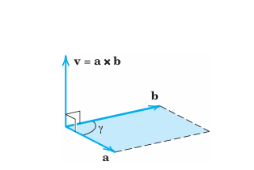
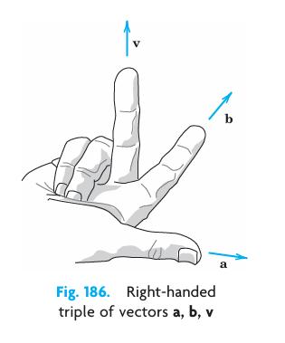
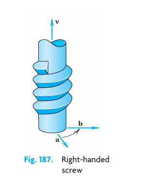
Right-Handed Triple. A triple of vectors \(\mathbf{a}, \mathbf{b}, \mathbf{v}\) is right-handed if the vectors in the given order assume the same sort of orientation as the thumb, index finger, and middle finger of the right hand when these are held as in Figure 10.24. We may also say that if \(\mathbf{a}\) is rotated into the direction of \(\mathbf{b}\) through the angle \(\gamma\) (\(\le \pi\)), then \(\mathbf{v}\) advances in the same direction as a right-handed screw would if turned in the same way (Figure 10.25).
Right-Handed Cartesian Coordinate System. The system is called right-handed if the corresponding unit vectors \(\mathbf{i}, \mathbf{j}, \mathbf{k}\) in the positive directions of the axes (see Section 10.1) form a right-handed triple as in Figure 10.26(a). The system is called left-handed if the sense of \(\mathbf{k}\) is reversed, as in Figure 10.26(b). In applications, we prefer right-handed systems.
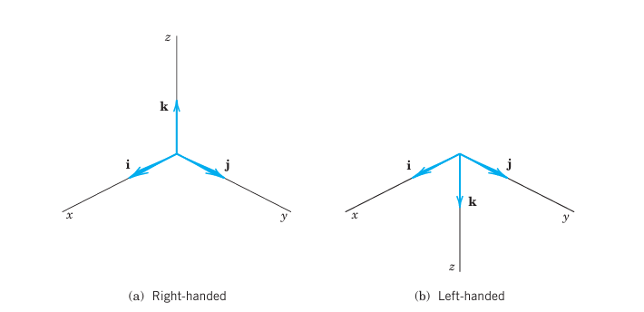
10.3.2 How to Memorize (Equation 10.26)
If you know second- and third-order determinants, you see that (Equation 10.26) can be written \[ v_1 = \begin{vmatrix} a_2 & a_3 \\ b_2 & b_3 \end{vmatrix}, \quad v_2 = -\begin{vmatrix} a_1 & a_3 \\ b_1 & b_3 \end{vmatrix} = \begin{vmatrix} a_3 & a_1 \\ b_3 & b_1 \end{vmatrix}, \quad v_3 = \begin{vmatrix} a_1 & a_2 \\ b_1 & b_2 \end{vmatrix} \tag{10.27}\]
and \(\mathbf{v} = [v_1, v_2, v_3] = v_1\mathbf{i} + v_2\mathbf{j} + v_3\mathbf{k}\) is the expansion of the following symbolic determinant by its first row. (We call the determinant “symbolic” because the first row consists of vectors rather than of numbers.) \[ \mathbf{v} = \mathbf{a} \times \mathbf{b} = \begin{vmatrix} \mathbf{i} & \mathbf{j} & \mathbf{k} \\ a_1 & a_2 & a_3 \\ b_1 & b_2 & b_3 \end{vmatrix} = \begin{vmatrix} a_2 & a_3 \\ b_2 & b_3 \end{vmatrix} \mathbf{i} - \begin{vmatrix} a_1 & a_3 \\ b_1 & b_3 \end{vmatrix} \mathbf{j} + \begin{vmatrix} a_1 & a_2 \\ b_1 & b_2 \end{vmatrix} \mathbf{k} \tag{10.28}\]
For a left-handed system, the determinant has a minus sign in front.
10.3.3 EXAMPLE 1 Vector Product
For the vector product \(\mathbf{v} = \mathbf{a} \times \mathbf{b}\) of \(\mathbf{a} = [1, 1, 0]\) and \(\mathbf{b} = [3, 0, 0]\) in right-handed coordinates we obtain from (Equation 10.26) \[ v_1 = 0, \quad v_2 = 0, \quad v_3 = 1 \cdot 0 - 1 \cdot 3 = -3. \] We confirm this by (Equation 10.28): \[ \mathbf{v} = \mathbf{a} \times \mathbf{b} = \begin{vmatrix} \mathbf{i} & \mathbf{j} & \mathbf{k} \\ 1 & 1 & 0 \\ 3 & 0 & 0 \end{vmatrix} = \begin{vmatrix} 1 & 0 \\ 0 & 0 \end{vmatrix} \mathbf{i} - \begin{vmatrix} 1 & 0 \\ 3 & 0 \end{vmatrix} \mathbf{j} + \begin{vmatrix} 1 & 1 \\ 3 & 0 \end{vmatrix} \mathbf{k} = -3\mathbf{k} = [0, 0, -3]. \] To check the result in this simple case, sketch \(\mathbf{a}, \mathbf{b}\), and \(\mathbf{v}\). Can you see that two vectors in the \(xy\)-plane must always have their vector product parallel to the \(z\)-axis (or equal to the zero vector)? \(\square\)
10.3.4 EXAMPLE 2 Vector Products of the Standard Basis Vectors
\[ \begin{aligned} \mathbf{i} \times \mathbf{j} &= \mathbf{k}, \quad &\mathbf{j} \times \mathbf{k} &= \mathbf{i}, \quad &\mathbf{k} \times \mathbf{i} &= \mathbf{j} \\ \mathbf{j} \times \mathbf{i} &= -\mathbf{k}, \quad &\mathbf{k} \times \mathbf{j} &= -\mathbf{i}, \quad &\mathbf{i} \times \mathbf{k} &= -\mathbf{j}. \end{aligned} \tag{10.29}\] We shall use this in the next proof. \(\square\)
10.3.5 THEOREM 1 General Properties of Vector Products
For every scalar \(l\), \[ (l\mathbf{a}) \times \mathbf{b} = l(\mathbf{a} \times \mathbf{b}) = \mathbf{a} \times (l\mathbf{b}). \tag{10.30}\]
Cross multiplication is distributive with respect to vector addition; that is, \[ \begin{aligned} \text{(a)} \quad \mathbf{a} \times (\mathbf{b} + \mathbf{c}) &= (\mathbf{a} \times \mathbf{b}) + (\mathbf{a} \times \mathbf{c}), \\ \text{(b)} \quad (\mathbf{a} + \mathbf{b}) \times \mathbf{c} &= (\mathbf{a} \times \mathbf{c}) + (\mathbf{b} \times \mathbf{c}). \end{aligned} \tag{10.31}\]
Cross multiplication is not commutative but anticommutative; that is, \[ \mathbf{b} \times \mathbf{a} = -(\mathbf{a} \times \mathbf{b}) \quad (\text{see } @fig-9-189). \tag{10.32}\]
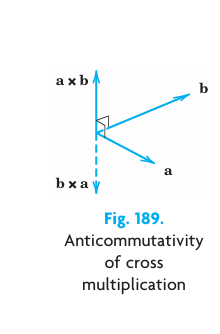
- Cross multiplication is not associative; that is, in general, \[ \mathbf{a} \times (\mathbf{b} \times \mathbf{c}) \neq (\mathbf{a} \times \mathbf{b}) \times \mathbf{c} \tag{10.33}\] so that the parentheses cannot be omitted.
PROOF
Equation (Equation 10.30) follows directly from the definition.
In (Equation 10.31)(a), formula (Equation 10.27) gives for the first component on the left \[
\begin{aligned}
a_2 (b_3 + c_3) - a_3 (b_2 + c_2) &= (a_2 b_3 - a_3 b_2) + (a_2 c_3 - a_3 c_2) \\
&= \begin{vmatrix} a_2 & a_3 \\ b_2 & b_3 \end{vmatrix} + \begin{vmatrix} a_2 & a_3 \\ c_2 & c_3 \end{vmatrix}.
\end{aligned}
\] By (Equation 10.27) the sum of the two determinants is the first component of \((\mathbf{a} \times \mathbf{b}) + (\mathbf{a} \times \mathbf{c})\), the right side of (Equation 10.31)(a). For the other components in (Equation 10.31)(a) and in (Equation 10.31)(b), equality follows by the same idea.
Anticommutativity (Equation 10.32) follows from (Equation 10.28) by noting that the interchange of Rows 2 and 3 multiplies the determinant by \(-1\). We can confirm this geometrically if we set \(\mathbf{a} \times \mathbf{b} = \mathbf{v}\) and \(\mathbf{b} \times \mathbf{a} = \mathbf{w}\); then \(|\mathbf{v}| = |\mathbf{w}|\) by (Equation 10.25), and for \(\mathbf{b}, \mathbf{a}, \mathbf{w}\) to form a right-handed triple, we must have \(\mathbf{w} = -\mathbf{v}\).
Finally, \(\mathbf{i} \times (\mathbf{i} \times \mathbf{j}) = \mathbf{i} \times \mathbf{k} = -\mathbf{j}\), whereas \((\mathbf{i} \times \mathbf{i}) \times \mathbf{j} = \mathbf{0} \times \mathbf{j} = \mathbf{0}\) (see Example 2). This proves (Equation 10.33). \(\square\)
10.3.6 Typical Applications of Vector Products
10.3.7 EXAMPLE 3 Moment of a Force
In mechanics the moment \(m\) of a force \(\mathbf{p}\) about a point \(Q\) is defined as the product \(m = |\mathbf{p}|d\), where \(d\) is the (perpendicular) distance between \(Q\) and the line of action \(L\) of \(\mathbf{p}\) (Figure 10.28). If \(\mathbf{r}\) is the vector from \(Q\) to any point \(A\) on \(L\), then \(d = |\mathbf{r}| \sin \gamma\), as shown in Figure 10.28, and \[ m = |\mathbf{r}||\mathbf{p}| \sin \gamma. \] Since \(\gamma\) is the angle between \(\mathbf{r}\) and \(\mathbf{p}\), we see from (Equation 10.25) that \(m = |\mathbf{r} \times \mathbf{p}|\). The vector \[ \mathbf{m} = \mathbf{r} \times \mathbf{p} \tag{10.34}\] is called the moment vector or vector moment of \(\mathbf{p}\) about \(Q\). Its magnitude is \(m\). If \(\mathbf{m} \neq \mathbf{0}\), its direction is that of the axis of the rotation about \(Q\) that \(\mathbf{p}\) has the tendency to produce. This axis is perpendicular to both \(\mathbf{r}\) and \(\mathbf{p}\). \(\square\)
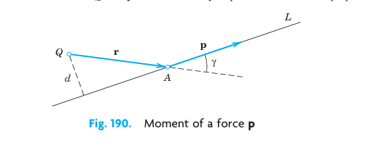
10.3.8 EXAMPLE 4 Moment of a Force
Find the moment of the force \(\mathbf{p}\) about the center \(Q\) of a wheel, as given in Figure 10.29.
Solution. Introducing coordinates as shown in Figure 10.29, we have \[ \mathbf{p} = [1000 \cos 30^\circ, 1000 \sin 30^\circ, 0] = [866, 500, 0], \quad \mathbf{r} = [0, 1.5, 0]. \] (Note that the center of the wheel is at \(y = -1.5\) on the \(y\)-axis.) Hence (Equation 10.34) and (Equation 10.28) give \[ \mathbf{m} = \mathbf{r} \times \mathbf{p} = \begin{vmatrix} \mathbf{i} & \mathbf{j} & \mathbf{k} \\ 0 & 1.5 & 0 \\ 866 & 500 & 0 \end{vmatrix} = 0\mathbf{i} - 0\mathbf{j} + \begin{vmatrix} 0 & 1.5 \\ 866 & 500 \end{vmatrix} \mathbf{k} = -1299\mathbf{k} = [0, 0, -1299]. \] This moment vector \(\mathbf{m}\) is normal, i.e., perpendicular to the plane of the wheel. Hence it has the direction of the axis of rotation about the center \(Q\) of the wheel that the force \(\mathbf{p}\) has the tendency to produce. The moment points in the negative \(z\)-direction. This is the direction in which a right-handed screw would advance if turned in that way. \(\square\)
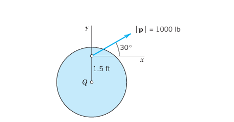
10.3.9 EXAMPLE 5 Velocity of a Rotating Body
A rotation of a rigid body \(B\) in space can be simply and uniquely described by a vector \(\mathbf{w}\) as follows. The direction of \(\mathbf{w}\) is that of the axis of rotation and such that the rotation appears clockwise if one looks from the initial point of \(\mathbf{w}\) to its terminal point. The length of \(\mathbf{w}\) is equal to the angular speed \(\omega\) (\(\omega \ge 0\)) of the rotation, that is, the linear (or tangential) speed of a point of \(B\) divided by its distance from the axis of rotation.
Let \(P\) be any point of \(B\) and \(d\) its distance from the axis. Then \(P\) has the speed \(\omega d\). Let \(\mathbf{r}\) be the position vector of \(P\) referred to a coordinate system with origin \(O\) on the axis of rotation. Then \(d = |\mathbf{r}| \sin \gamma\), where \(\gamma\) is the angle between \(\mathbf{w}\) and \(\mathbf{r}\). Therefore, \[ \omega d = |\mathbf{w}||\mathbf{r}| \sin \gamma = |\mathbf{w} \times \mathbf{r}|. \] From this and the definition of vector product we see that the velocity vector \(\mathbf{v}\) of \(P\) can be represented in the form (Figure 10.30) \[ \mathbf{v} = \mathbf{w} \times \mathbf{r}. \tag{10.35}\] This simple formula is useful for determining \(\mathbf{v}\) at any point of \(B\). \(\square\)
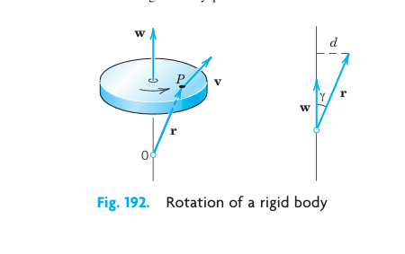
10.3.10 Scalar Triple Product
Certain products of vectors, having three or more factors, occur in applications. The most important of these products is the scalar triple product or mixed product of three vectors \(\mathbf{a}, \mathbf{b}, \mathbf{c}\), denoted by \((\mathbf{a} \ \mathbf{b} \ \mathbf{c})\) or \(\mathbf{a} \cdot (\mathbf{b} \times \mathbf{c})\): \[ (\mathbf{a} \ \mathbf{b} \ \mathbf{c}) = \mathbf{a} \cdot (\mathbf{b} \times \mathbf{c}). \tag{10.36}\]
The scalar triple product is indeed a scalar since (Equation 10.36) involves a dot product, which in turn is a scalar. We want to express the scalar triple product in components and as a third-order determinant. To this end, let \(\mathbf{a} = [a_1, a_2, a_3]\), \(\mathbf{b} = [b_1, b_2, b_3]\), and \(\mathbf{c} = [c_1, c_2, c_3]\). Also set \(\mathbf{b} \times \mathbf{c} = \mathbf{v} = [v_1, v_2, v_3]\). Then from the dot product in components formula ( 10.11 and from (Equation 10.27) with \(\mathbf{b}\) and \(\mathbf{c}\) instead of \(\mathbf{a}\) and \(\mathbf{b}\) we first obtain \[ \mathbf{a} \cdot (\mathbf{b} \times \mathbf{c}) = \mathbf{a} \cdot \mathbf{v} = a_1 v_1 + a_2 v_2 + a_3 v_3 = a_1 \begin{vmatrix} b_2 & b_3 \\ c_2 & c_3 \end{vmatrix} - a_2 \begin{vmatrix} b_1 & b_3 \\ c_1 & c_3 \end{vmatrix} + a_3 \begin{vmatrix} b_1 & b_2 \\ c_1 & c_2 \end{vmatrix}. \] The sum on the right is the expansion of a third-order determinant by its first row. Thus we obtain the desired formula for the scalar triple product, that is, \[ (\mathbf{a} \ \mathbf{b} \ \mathbf{c}) = \mathbf{a} \cdot (\mathbf{b} \times \mathbf{c}) = \begin{vmatrix} a_1 & a_2 & a_3 \\ b_1 & b_2 & b_3 \\ c_1 & c_2 & c_3 \end{vmatrix}. \tag{10.37}\]
The most important properties of the scalar triple product are as follows.
10.3.11 THEOREM 2 Properties and Applications of Scalar Triple Products
In (Equation 10.37) the dot and cross can be interchanged: \[ (\mathbf{a} \ \mathbf{b} \ \mathbf{c}) = \mathbf{a} \cdot (\mathbf{b} \times \mathbf{c}) = (\mathbf{a} \times \mathbf{b}) \cdot \mathbf{c}. \tag{10.38}\]
Geometric interpretation. The absolute value \(|(\mathbf{a} \ \mathbf{b} \ \mathbf{c})|\) of (Equation 10.37) is the volume of the parallelepiped (oblique box) with \(\mathbf{a}, \mathbf{b}, \mathbf{c}\) as edge vectors (Figure 10.31).
Linear independence. Three vectors in \(\mathbb{R}^3\) are linearly independent if and only if their scalar triple product is not zero.
PROOF
(a) Dot multiplication is commutative, so that by (Equation 10.37) \[
(\mathbf{a} \times \mathbf{b}) \cdot \mathbf{c} = \mathbf{c} \cdot (\mathbf{a} \times \mathbf{b}) = \begin{vmatrix} c_1 & c_2 & c_3 \\ a_1 & a_2 & a_3 \\ b_1 & b_2 & b_3 \end{vmatrix}.
\] From this we obtain the determinant in (Equation 10.37) by interchanging Rows 1 and 2 and in the result Rows 2 and 3. But this does not change the value of the determinant because each interchange produces a factor \(-1\), and \((-1)(-1) = 1\). This proves (Equation 10.38).
The volume of that box equals the height \(h = |\mathbf{a}||\cos \beta|\) (Figure 10.31) times the area of the base, which is the area \(|\mathbf{b} \times \mathbf{c}|\) of the parallelogram with sides \(\mathbf{b}\) and \(\mathbf{c}\). Hence the volume is \[ |\mathbf{a}||\mathbf{b} \times \mathbf{c}| |\cos \beta| = |\mathbf{a} \cdot (\mathbf{b} \times \mathbf{c})| \] as given by the absolute value of (Equation 10.38). (Note that \(\beta\) is the angle between \(\mathbf{a}\) and the normal to the base, which is \(\mathbf{b} \times \mathbf{c}\); see Figure 10.31.)
Three nonzero vectors, whose initial points coincide, are linearly independent if and only if the vectors do not lie in the same plane nor lie on the same straight line. This happens if and only if the triple product in (b) is not zero, so that the independence criterion follows. (The case of one of the vectors being the zero vector is trivial.) \(\square\)
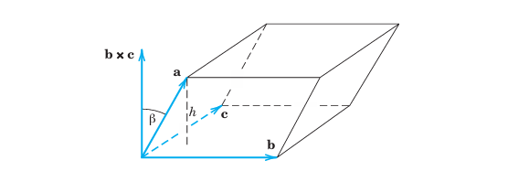
10.3.12 EXAMPLE 6 Tetrahedron
A tetrahedron is determined by three edge vectors \(\mathbf{a}, \mathbf{b}, \mathbf{c}\), as indicated in Figure 10.32. Find the volume of the tetrahedron in Figure 10.32, when \(\mathbf{a} = [2, 0, 3], \mathbf{b} = [0, 4, 1], \mathbf{c} = [5, 6, 0]\).
Solution. The volume \(V\) of the parallelepiped with these vectors as edge vectors is the absolute value of the scalar triple product \[ (\mathbf{a} \ \mathbf{b} \ \mathbf{c}) = \begin{vmatrix} 2 & 0 & 3 \\ 0 & 4 & 1 \\ 5 & 6 & 0 \end{vmatrix} = 2 \begin{vmatrix} 4 & 1 \\ 6 & 0 \end{vmatrix} + 3 \begin{vmatrix} 0 & 4 \\ 5 & 6 \end{vmatrix} = 2(-6) + 3(-20) = -12 - 60 = -72. \] Hence \(V = 72\). The minus sign indicates that if the coordinates are right-handed, the triple \(\mathbf{a}, \mathbf{b}, \mathbf{c}\) is left-handed.
The volume of a tetrahedron is \(\frac{1}{6}\) of that of the parallelepiped (can you prove it?), hence \(12\). \(\square\)
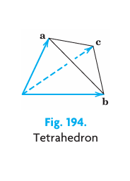
This is the end of vector algebra (in space \(\mathbb{R}^3\) and in the plane). Vector calculus (differentiation) begins in the next section.
10.3.13 Problem Set 9.3
10.3.13.1 1–10: GENERAL PROBLEMS
- Give the details of the proofs of Eqs. (Equation 10.30) and (Equation 10.31).
- What does \(\mathbf{a} \times \mathbf{b} = \mathbf{a} \times \mathbf{c}\) with \(\mathbf{a} \neq \mathbf{0}\) imply?
- Give the details of the proofs of Eqs. (Equation 10.32) and (Equation 10.38).
- Lagrange’s identity for \(|\mathbf{a} \times \mathbf{b}|\). Verify it for \(\mathbf{a} = [3, 4, 2]\) and \(\mathbf{b} = [1, 0, 2]\). Prove it, using \(\sin^2 \gamma = 1 - \cos^2 \gamma\). The identity is \[ |\mathbf{a} \times \mathbf{b}|^2 = (\mathbf{a} \cdot \mathbf{a})(\mathbf{b} \cdot \mathbf{b}) - (\mathbf{a} \cdot \mathbf{b})^2. \tag{10.39}\]
- What happens in Example 3 of the text if you replace \(\mathbf{p}\) by \(-\mathbf{p}\)?
- What happens in Example 5 if you choose a \(P\) at distance \(2d\) from the axis of rotation?
- Rotation. A wheel is rotating about the \(y\)-axis with angular speed \(\omega = 20\text{ sec}^{-1}\). The rotation appears clockwise if one looks from the origin in the positive \(y\)-direction. Find the velocity and speed at the point \([8, 6, 0]\). Make a sketch.
- Rotation. What are the velocity and speed in Prob. 7 at the point \((4, 2, -2)\) if the wheel rotates about the line \(y = x, z = 0\) with \(\omega = 10\text{ sec}^{-1}\)?
- Scalar triple product. What does \((\mathbf{a} \ \mathbf{b} \ \mathbf{c}) = 0\) imply with respect to these vectors?
- WRITING REPORT. Summarize the most important applications discussed in this section. Give examples. No proofs.
10.3.13.2 11–23: VECTOR AND SCALAR TRIPLE PRODUCTS
With respect to right-handed Cartesian coordinates, let \(\mathbf{a} = [2, 1, 0]\), \(\mathbf{b} = [-3, 2, 0]\), \(\mathbf{c} = [1, 4, -2]\), and \(\mathbf{d} = [5, -1, 3]\). Showing details, find: 11. \(\mathbf{a} \times \mathbf{b}, \quad \mathbf{b} \times \mathbf{a}, \quad \mathbf{a} \cdot \mathbf{b}\) 12. \(3\mathbf{c} \times 5\mathbf{d}, \quad 15\mathbf{d} \times \mathbf{c}, \quad 15\mathbf{d} \cdot \mathbf{c}, \quad 15\mathbf{c} \cdot \mathbf{d}\) 13. \(\mathbf{c} \times (\mathbf{a} + \mathbf{b}), \quad \mathbf{a} \times \mathbf{c} + \mathbf{b} \times \mathbf{c}\) 14. \(4\mathbf{b} \times 3\mathbf{c} + 12\mathbf{c} \times \mathbf{b}\) 15. \((\mathbf{a} + \mathbf{d}) \times (\mathbf{d} + \mathbf{a})\) 16. \((\mathbf{b} \times \mathbf{c}) \cdot \mathbf{d}, \quad \mathbf{b} \cdot (\mathbf{c} \times \mathbf{d})\) 17. \((\mathbf{b} \times \mathbf{c}) \times \mathbf{d}, \quad \mathbf{b} \times (\mathbf{c} \times \mathbf{d})\) 18. \((\mathbf{a} \times \mathbf{b}) \times \mathbf{a}, \quad \mathbf{a} \times (\mathbf{b} \times \mathbf{a})\) 19. \((\mathbf{i} \ \mathbf{j} \ \mathbf{k}), \quad (\mathbf{i} \ \mathbf{k} \ \mathbf{j})\) 20. \((\mathbf{a} \times \mathbf{b}) \times (\mathbf{c} \times \mathbf{d}), \quad (\mathbf{a} \ \mathbf{b} \ \mathbf{d})\mathbf{c} - (\mathbf{a} \ \mathbf{b} \ \mathbf{c})\mathbf{d}\) 21. \(4\mathbf{b} \times 3\mathbf{c}, \quad 12|\mathbf{b} \times \mathbf{c}|, \quad 12|\mathbf{c} \times \mathbf{b}|\) 22. \((\mathbf{a} - \mathbf{b} \quad \mathbf{c} - \mathbf{b} \quad \mathbf{d} - \mathbf{b}), \quad (\mathbf{a} \quad \mathbf{c} \quad \mathbf{d})\) 23. \(\mathbf{b} \times \mathbf{b}, \quad (\mathbf{b} - \mathbf{c}) \times (\mathbf{c} - \mathbf{b}), \quad \mathbf{b} \cdot \mathbf{b}\)
- TEAM PROJECT. Useful Formulas for Three and Four Vectors. Prove (Equation 10.40)–(Equation 10.43), which are often useful in practical work, and illustrate each formula with two examples. Hint: For (Equation 10.40) choose Cartesian coordinates such that \(\mathbf{d} = [d_1, 0, 0]\) and \(\mathbf{c} = [c_1, c_2, 0]\). Show that each side of (Equation 10.40) then equals \([-b_2 c_2 d_1, b_1 c_2 d_1, 0]\), and give reasons why the two sides are then equal in any Cartesian coordinate system. For (Equation 10.41) and (Equation 10.42) use (Equation 10.40). \[ \mathbf{b} \times (\mathbf{c} \times \mathbf{d}) = (\mathbf{b} \cdot \mathbf{d})\mathbf{c} - (\mathbf{b} \cdot \mathbf{c})\mathbf{d} \tag{10.40}\] \[ (\mathbf{a} \times \mathbf{b}) \times (\mathbf{c} \times \mathbf{d}) = (\mathbf{a} \ \mathbf{b} \ \mathbf{d})\mathbf{c} - (\mathbf{a} \ \mathbf{b} \ \mathbf{c})\mathbf{d} \tag{10.41}\] \[ (\mathbf{a} \times \mathbf{b}) \cdot (\mathbf{c} \times \mathbf{d}) = (\mathbf{a} \cdot \mathbf{c})(\mathbf{b} \cdot \mathbf{d}) - (\mathbf{a} \cdot \mathbf{d})(\mathbf{b} \cdot \mathbf{c}) \tag{10.42}\] \[ (\mathbf{a} \ \mathbf{b} \ \mathbf{c}) = (\mathbf{b} \ \mathbf{c} \ \mathbf{a}) = (\mathbf{c} \ \mathbf{a} \ \mathbf{b}) = -(\mathbf{c} \ \mathbf{b} \ \mathbf{a}) = -(\mathbf{a} \ \mathbf{c} \ \mathbf{b}) \tag{10.43}\]
10.3.13.3 25–35: APPLICATIONS
- Moment \(\mathbf{m}\) of a force \(\mathbf{p}\). Find the moment vector \(\mathbf{m}\) and its magnitude \(m\) of \(\mathbf{p} = [2, 3, 0]\) about \(Q: (2, 1, 0)\) acting on a line through \(A: (0, 3, 0)\). Make a sketch.
- Moment. Solve Prob. 25 if \(\mathbf{p} = [1, 0, 3]\), \(Q: (2, 0, 3)\), and \(A: (4, 3, 5)\).
- Parallelogram. Find the area if the vertices are \((4, 2, 0)\), \((10, 4, 0)\), \((5, 4, 0)\), and \((11, 6, 0)\). Make a sketch.
- A remarkable parallelogram. Find the area of the quadrangle \(Q\) whose vertices are the midpoints of the sides of the quadrangle \(P\) with vertices \(A: (2, 1, 0)\), \(B: (5, -1, 0)\), \(C: (8, 2, 0)\), and \(D: (4, 3, 0)\). Verify that \(Q\) is a parallelogram.
- Triangle. Find the area if the vertices are \((0, 0, 1)\), \((2, 0, 5)\), and \((2, 3, 4)\).
- Plane. Find the plane through the points \(A: (1, 2, 1)\), \(B: (4, 2, -2)\), and \(C: (0, 8, 4)\).
- Plane. Find the plane through \((1, 3, 4)\), \((1, -2, 6)\), and \((4, 0, 7)\).
- Parallelepiped. Find the volume if the edge vectors are \(\mathbf{i} + \mathbf{j}\), \(-2\mathbf{i} + 2\mathbf{k}\), and \(-2\mathbf{i} - 3\mathbf{k}\). Make a sketch.
- Tetrahedron. Find the volume if the vertices are \((1, 1, 1)\), \((5, -7, 3)\), \((7, 4, 8)\), and \((10, 7, 4)\).
- Tetrahedron. Find the volume if the vertices are \((1, 3, 6)\), \((3, 7, 12)\), \((8, 8, 9)\), and \((2, 2, 8)\).
- WRITING PROJECT. Applications of Cross Products. Summarize the most important applications we have discussed in this section and give a few simple examples. No proofs.
10.4 Vector and Scalar Functions and Their Fields. Vector Calculus: Derivatives
Our discussion of vector calculus begins with identifying the two types of functions on which it operates. Let \(P\) be any point in a domain of definition. Typical domains in applications are three-dimensional, or a surface or a curve in space. Then we define a vector function \(\mathbf{v}\), whose values are vectors, that is, \[ \mathbf{v} = \mathbf{v}(P) = [v_1(P), v_2(P), v_3(P)] \] that depends on points \(P\) in space. We say that a vector function defines a vector field in a domain of definition. Typical domains were just mentioned. Examples of vector fields are the field of tangent vectors of a curve (shown in Figure 10.33), normal vectors of a surface (Figure 10.34), and velocity field of a rotating body (Figure 10.35). Note that vector functions may also depend on time \(t\) or on some other parameters.
Similarly, we define a scalar function \(f\), whose values are scalars, that is, \[ f = f(P) \] that depends on \(P\). We say that a scalar function defines a scalar field in that three-dimensional domain or surface or curve in space. Two representative examples of scalar fields are the temperature field of a body and the pressure field of the air in Earth’s atmosphere. Note that scalar functions may also depend on some parameter such as time \(t\).
Notation. If we introduce Cartesian coordinates \(x, y, z\), then, instead of writing \(\mathbf{v}(P)\) for the vector function, we can write \[ \mathbf{v}(x, y, z) = [v_1(x, y, z), v_2(x, y, z), v_3(x, y, z)]. \] We have to keep in mind that the components depend on our choice of coordinate system, whereas a vector field that has a physical or geometric meaning should have magnitude and direction depending only on \(P\), not on the choice of coordinate system.
Similarly, for a scalar function, we write \[ f(P) = f(x, y, z). \] We illustrate our discussion of vector functions, scalar functions, vector fields, and scalar fields by the following three examples.
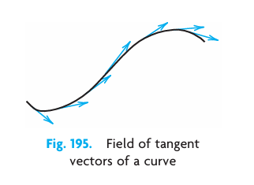
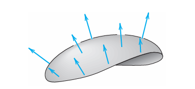
10.4.1 EXAMPLE 1 Scalar Function (Euclidean Distance in Space)
The distance \(f(P)\) of any point \(P\) from a fixed point \(P_0\) in space is a scalar function whose domain of definition is the whole space. \(f(P)\) defines a scalar field in space. If we introduce a Cartesian coordinate system and \(P_0\) has the coordinates \(x_0, y_0, z_0\), then \(f\) is given by the well-known formula \[ f(P) = f(x, y, z) = \sqrt{(x - x_0)^2 + (y - y_0)^2 + (z - z_0)^2} \] where \(x, y, z\) are the coordinates of \(P\). If we replace the given Cartesian coordinate system with another such system by translating and rotating the given system, then the values of the coordinates of \(P\) and \(P_0\) will in general change, but \(f(P)\) will have the same value as before. Hence \(f(P)\) is a scalar function. The direction cosines of the straight line through \(P\) and \(P_0\) are not scalars because their values depend on the choice of the coordinate system. \(\square\)
10.4.2 EXAMPLE 2 Vector Field (Velocity Field)
At any instant the velocity vectors \(\mathbf{v}(P)\) of a rotating body \(B\) constitute a vector field, called the velocity field of the rotation. If we introduce a Cartesian coordinate system having the origin on the axis of rotation, then (see Example 5 in Section 10.3) \[ \mathbf{v}(x, y, z) = \mathbf{w} \times \mathbf{r} = \mathbf{w} \times [x, y, z] = \mathbf{w} \times (x\mathbf{i} + y\mathbf{j} + z\mathbf{k}) \tag{10.44}\] where \(x, y, z\) are the coordinates of any point \(P\) of \(B\) at the instant under consideration. If the coordinates are such that the \(z\)-axis is the axis of rotation and \(\mathbf{w}\) points in the positive \(z\)-direction, then \(\mathbf{w} = \omega\mathbf{k}\) and \[ \mathbf{v} = \begin{vmatrix} \mathbf{i} & \mathbf{j} & \mathbf{k} \\ 0 & 0 & \omega \\ x & y & z \end{vmatrix} = \omega[-y, x, 0] = \omega(-y\mathbf{i} + x\mathbf{j}). \] An example of a rotating body and the corresponding velocity field are shown in Figure 10.35. \(\square\)
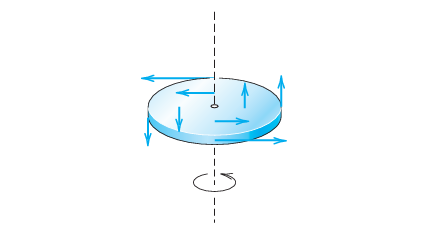
10.4.3 EXAMPLE 3 Vector Field (Field of Force, Gravitational Field)
Let a particle \(A\) of mass \(M\) be fixed at a point \(P_0\) and let a particle \(B\) of mass \(m\) be free to take up various positions \(P\) in space. Then \(A\) attracts \(B\). According to Newton’s law of gravitation the corresponding gravitational force \(\mathbf{p}\) is directed from \(P\) to \(P_0\), and its magnitude is proportional to \(1/r^2\), where \(r\) is the distance between \(P\) and \(P_0\), say, \[ |\mathbf{p}| = \frac{c}{r^2}, \quad c = GMm. \tag{10.45}\] Here \(G = 6.67 \times 10^{-8}\text{ cm}^3/(\text{g} \cdot \text{sec}^2)\) is the gravitational constant. Hence \(\mathbf{p}\) defines a vector field in space. If we introduce Cartesian coordinates such that \(P_0\) has the coordinates \(x_0, y_0, z_0\) and \(P\) has the coordinates \(x, y, z\), then by the Pythagorean theorem, \[ r = \sqrt{(x - x_0)^2 + (y - y_0)^2 + (z - z_0)^2} \quad (r > 0). \] Assuming that \(r > 0\) and introducing the vector \[ \mathbf{r} = [x - x_0, \, y - y_0, \, z - z_0] = (x - x_0)\mathbf{i} + (y - y_0)\mathbf{j} + (z - z_0)\mathbf{k}, \] we have \(|\mathbf{r}| = r\), and \((-1/r)\mathbf{r}\) is a unit vector in the direction of \(\mathbf{p}\); the minus sign indicates that \(\mathbf{p}\) is directed from \(P\) to \(P_0\) (Figure 10.36). From this and (Equation 10.45) we obtain \[ \mathbf{p} = |\mathbf{p}| \left( -\frac{1}{r}\mathbf{r} \right) = -c\frac{\mathbf{r}}{r^3} = \left[ -c\frac{x-x_0}{r^3}, \, -c\frac{y-y_0}{r^3}, \, -c\frac{z-z_0}{r^3} \right] \] \[ \mathbf{p} = -c\frac{x-x_0}{r^3}\mathbf{i} - c\frac{y-y_0}{r^3}\mathbf{j} - c\frac{z-z_0}{r^3}\mathbf{k}. \tag{10.46}\] This vector function describes the gravitational force acting on \(B\). \(\square\)
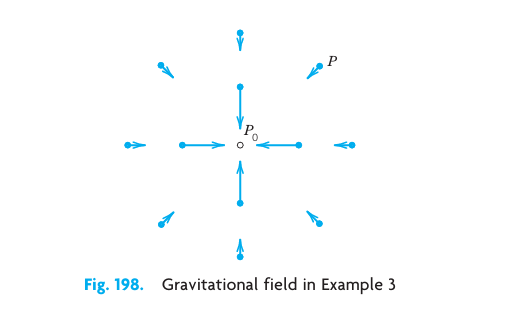
10.4.4 Vector Calculus
The student may be pleased to learn that many of the concepts covered in (regular) calculus carry over to vector calculus. Indeed, we show how the basic concepts of convergence, continuity, and differentiability from calculus can be defined for vector functions in a simple and natural way. Most important of these is the derivative of a vector function.
Convergence. An infinite sequence of vectors \(\mathbf{a}^{(n)}\), \(n = 1, 2, \dots\), is said to converge if there is a vector \(\mathbf{a}\) such that \[ \lim_{n \to \infty} |\mathbf{a}^{(n)} - \mathbf{a}| = 0. \tag{10.47}\] \(\mathbf{a}\) is called the limit vector of that sequence, and we write \[ \lim_{n \to \infty} \mathbf{a}^{(n)} = \mathbf{a}. \tag{10.48}\] If the vectors are given in Cartesian coordinates, then this sequence of vectors converges to \(\mathbf{a}\) if and only if the three sequences of components of the vectors converge to the corresponding components of \(\mathbf{a}\). We leave the simple proof to the student.
Similarly, a vector function \(\mathbf{v}(t)\) of a real variable \(t\) is said to have the limit \(\mathbf{l}\) as \(t\) approaches \(t_0\), if \(\mathbf{v}(t)\) is defined in some neighborhood of \(t_0\) (possibly except at \(t_0\)) and \[ \lim_{t \to t_0} |\mathbf{v}(t) - \mathbf{l}| = 0. \tag{10.49}\] Then we write \[ \lim_{t \to t_0} \mathbf{v}(t) = \mathbf{l}. \tag{10.50}\] Here, a neighborhood of \(t_0\) is an interval (segment) on the \(t\)-axis containing \(t_0\) as an interior point (not as an endpoint).
Continuity. A vector function \(\mathbf{v}(t)\) is said to be continuous at \(t = t_0\) if it is defined in some neighborhood of \(t_0\) (including at \(t_0\) itself!) and \[ \lim_{t \to t_0} \mathbf{v}(t) = \mathbf{v}(t_0). \tag{10.51}\] If we introduce a Cartesian coordinate system, we may write \[ \mathbf{v}(t) = [v_1(t), v_2(t), v_3(t)] = v_1(t)\mathbf{i} + v_2(t)\mathbf{j} + v_3(t)\mathbf{k}. \] Then \(\mathbf{v}(t)\) is continuous at \(t_0\) if and only if its three components are continuous at \(t_0\).
We now state the most important of these definitions.
10.4.5 DEFINITION: Derivative of a Vector Function
A vector function \(\mathbf{v}(t)\) is said to be differentiable at a point \(t\) if the following limit exists: \[ \mathbf{v}'(t) = \lim_{\Delta t \to 0} \frac{\mathbf{v}(t + \Delta t) - \mathbf{v}(t)}{\Delta t}. \tag{10.52}\] This vector \(\mathbf{v}'(t)\) is called the derivative of \(\mathbf{v}(t)\). See Figure 10.37.
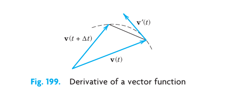
In components with respect to a given Cartesian coordinate system, \[ \mathbf{v}'(t) = [v_1'(t), v_2'(t), v_3'(t)]. \tag{10.53}\] Hence the derivative \(\mathbf{v}'(t)\) is obtained by differentiating each component separately. For instance, if \(\mathbf{v}(t) = [t, t^2, 0]\), then \(\mathbf{v}'(t) = [1, 2t, 0]\).
Equation (Equation 10.53) follows from (Equation 10.52) and conversely because (Equation 10.52) is a “vector form” of the usual formula of calculus by which the derivative of a function of a single variable is defined. The curve in 10.37. It follows that the familiar differentiation rules continue to hold for differentiating vector functions, for instance, \[ \begin{aligned} (c\mathbf{v})' &= c\mathbf{v}' \quad (c \text{ constant}), \\ (\mathbf{u} + \mathbf{v})' &= \mathbf{u}' + \mathbf{v}' \end{aligned} \] and in particular \[ (\mathbf{u} \cdot \mathbf{v})' = \mathbf{u}' \cdot \mathbf{v} + \mathbf{u} \cdot \mathbf{v}' \tag{10.54}\] \[ (\mathbf{u} \times \mathbf{v})' = \mathbf{u}' \times \mathbf{v} + \mathbf{u} \times \mathbf{v}' \tag{10.55}\] \[ (\mathbf{u} \ \mathbf{v} \ \mathbf{w})' = (\mathbf{u}' \ \mathbf{v} \ \mathbf{w}) + (\mathbf{u} \ \mathbf{v}' \ \mathbf{w}) + (\mathbf{u} \ \mathbf{v} \ \mathbf{w}'). \tag{10.56}\] The simple proofs are left to the student. In (Equation 10.55), note the order of the vectors carefully because cross multiplication is not commutative.
10.4.6 EXAMPLE 4 Derivative of a Vector Function of Constant Length
Let \(\mathbf{v}(t)\) be a vector function whose length is constant, say, \(|\mathbf{v}(t)| = c\). Then \(|\mathbf{v}|^2 = \mathbf{v} \cdot \mathbf{v} = c^2\), and \[
(\mathbf{v} \cdot \mathbf{v})' = 2\mathbf{v} \cdot \mathbf{v}' = 0
\] by differentiation see ( 10.54. This yields the following result:
The derivative of a vector function \(\mathbf{v}(t)\) of constant length is either the zero vector or is perpendicular to \(\mathbf{v}(t)\). \(\square\)
10.4.7 Partial Derivatives of a Vector Function
Our present discussion shows that partial differentiation of vector functions of two or more variables can be introduced as follows. Suppose that the components of a vector function \[ \mathbf{v} = [v_1, v_2, v_3] = v_1\mathbf{i} + v_2\mathbf{j} + v_3\mathbf{k} \] are differentiable functions of \(n\) variables \(t_1, \dots, t_n\). Then the partial derivative of \(\mathbf{v}\) with respect to \(t_m\) is denoted by \(\partial \mathbf{v}/\partial t_m\) and is defined as the vector function \[ \frac{\partial \mathbf{v}}{\partial t_m} = \frac{\partial v_1}{\partial t_m}\mathbf{i} + \frac{\partial v_2}{\partial t_m}\mathbf{j} + \frac{\partial v_3}{\partial t_m}\mathbf{k}. \tag{10.57}\] Similarly, second partial derivatives are \[ \frac{\partial^2 \mathbf{v}}{\partial t_l \partial t_m} = \frac{\partial^2 v_1}{\partial t_l \partial t_m}\mathbf{i} + \frac{\partial^2 v_2}{\partial t_l \partial t_m}\mathbf{j} + \frac{\partial^2 v_3}{\partial t_l \partial t_m}\mathbf{k}, \tag{10.58}\] and so on.
10.4.8 EXAMPLE 5 Partial Derivatives
Let \(\mathbf{r}(t_1, t_2) = a \cos t_1 \mathbf{i} + a \sin t_1 \mathbf{j} + t_2 \mathbf{k}\). Then \[ \frac{\partial \mathbf{r}}{\partial t_1} = -a \sin t_1 \mathbf{i} + a \cos t_1 \mathbf{j} \quad \text{and} \quad \frac{\partial \mathbf{r}}{\partial t_2} = \mathbf{k}. \] Various physical and geometric applications of derivatives of vector functions will be discussed in the next sections as well as in Chap. 10. \(\square\)
10.4.9 Problem Set 9.4
10.4.9.1 1–8: SCALAR FIELDS IN THE PLANE
Let the temperature \(T\) in a body be independent of \(z\) so that it is given by a scalar function \(T = T(x, y)\). Identify the isotherms \(T(x, y) = \text{const}\). Sketch some of them. 1. \(T = x^2 - y^2\) 2. \(T = xy\) 3. \(T = 3x - 4y\) 4. \(T = \arctan(y/x)\) 5. \(T = y/(x^2 + y^2)\) 6. \(T = x/(x^2 + y^2)\) 7. \(T = 9x^2 + 4y^2\) 8. CAS PROJECT. Scalar Fields in the Plane. Sketch or graph isotherms of the following fields and describe what they look like. (a) \(x^2 - 4x - y^2\)
(b) \(x^2 y - y^3\)
(c) \(\cos x \sinh y\)
(d) \(\sin x \sinh y\)
(e) \(e^x \sin y\)
(f) \(e^{2x} \cos 2y\)
(g) \(x^4 - 6x^2y^2 + y^4\)
(h) \(x^2 - 2x - y^2\)
10.4.9.2 9–14: SCALAR FIELDS IN SPACE
What kind of surfaces are the level surfaces \(f(x, y, z) = \text{const}\)? 9. \(f = 4x - 3y + 2z\) 10. \(f = 9(x^2 + y^2) + z^2\) 11. \(f = 5x^2 + 2y^2\) 12. \(f = z - \sqrt{x^2 + y^2}\) 13. \(f = z - (x^2 + y^2)\) 14. \(f = x - y^2\)
10.4.9.3 15–20: VECTOR FIELDS
Sketch figures similar to Figure 10.36. Try to interpret the field of \(\mathbf{v}\) as a velocity field. 15. \(\mathbf{v} = \mathbf{i} + \mathbf{j}\) 16. \(\mathbf{v} = -y\mathbf{i} + x\mathbf{j}\) 17. \(\mathbf{v} = x\mathbf{j}\) 18. \(\mathbf{v} = x\mathbf{i} + y\mathbf{j}\) 19. \(\mathbf{v} = x\mathbf{i} - y\mathbf{j}\) 20. \(\mathbf{v} = y\mathbf{i} - x\mathbf{j}\)
- CAS PROJECT. Vector Fields. Plot by arrows:
- \(\mathbf{v} = [x, x^2]\)
- \(\mathbf{v} = [1/y, 1/x]\)
- \(\mathbf{v} = [\cos x, \sin x]\)
- \(\mathbf{v} = e^{-(x^2 + y^2)} [x, -y]\)
- \(\mathbf{v} = [x, x^2]\)
10.4.9.4 22–25: DIFFERENTIATION
- Find the first and second derivatives of \(\mathbf{r}(t) = [3 \cos 2t, 3 \sin 2t, 4t]\).
- Prove (Equation 10.54)–(Equation 10.56). Give two typical examples for each formula.
- Find the first partial derivatives of \(\mathbf{v}_1 = [e^x \cos y, e^x \sin y]\) and \(\mathbf{v}_2 = [\cos x \cosh y, -\sin x \sinh y]\).
- WRITING PROJECT. Differentiation of Vector Functions. Summarize the essential ideas and facts and give examples of your own.
10.5 Curves. Arc Length. Curvature. Torsion
Vector calculus has important applications to curves (Section 10.5) and surfaces (to be covered in Section 11.5) in physics and geometry. The application of vector calculus to geometry is a field known as differential geometry. Differential geometric methods are applied to problems in mechanics, computer-aided as well as traditional engineering design, geodesy, geography, space travel, and relativity theory. For details, see [GenRef8] and [GenRef9] in App. 1.
Bodies that move in space form paths that may be represented by curves \(C\). This and other applications show the need for parametric representations of \(C\) with parameter \(t\), which may denote time or something else (see Figure 10.38). A typical parametric representation is given by \[ \mathbf{r}(t) = [x(t), y(t), z(t)] = x(t)\mathbf{i} + y(t)\mathbf{j} + z(t)\mathbf{k}. \tag{10.59}\]
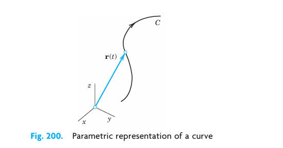
Here \(t\) is the parameter and \(x, y, z\) are Cartesian coordinates, that is, the usual rectangular coordinates as shown in Section 10.1. To each value \(t = t_0\), there corresponds a point of \(C\) with position vector \(\mathbf{r}(t_0)\) whose coordinates are \(x(t_0), y(t_0), z(t_0)\). This is illustrated in Figure 10.39 and Figure 10.40.
The use of parametric representations has key advantages over other representations that involve projections into the \(xy\)-plane and \(xz\)-plane or involve a pair of equations with \(y\) or with \(z\) as independent variable. The projections look like this: \[ y = f(x), \quad z = g(x). \tag{10.60}\]
The advantages of using (Equation 10.59) instead of (Equation 10.60) are that, in (Equation 10.59), the coordinates \(x, y, z\) all play an equal role, that is, all three coordinates are dependent variables. Moreover, the parametric representation (Equation 10.59) induces an orientation on \(C\). This means that as we increase \(t\), we travel along the curve \(C\) in a certain direction. The sense of increasing \(t\) is called the positive sense on \(C\). The sense of decreasing \(t\) is then called the negative sense on \(C\), given by (Equation 10.59).
Examples 1–4 give parametric representations of several important curves.
10.5.1 EXAMPLE 1 Circle. Parametric Representation. Positive Sense
The circle \(x^2 + y^2 = 4\), \(z = 0\) in the \(xy\)-plane with center \(O\) and radius 2 can be represented parametrically by \[ \mathbf{r}(t) = [2\cos t, 2\sin t, 0] \quad \text{or simply by} \quad \mathbf{r}(t) = [2\cos t, 2\sin t] \] where \(0 \le t \le 2\pi\) (Figure 10.39). Indeed, \(x^2 + y^2 = (2\cos t)^2 + (2\sin t)^2 = 4(\cos^2 t + \sin^2 t) = 4\). For \(t = 0\) we have \(\mathbf{r}(0) = [2, 0]\), for \(t = \pi/2\) we get \(\mathbf{r}(\pi/2) = [0, 2]\), and so on. The positive sense induced by this representation is the counterclockwise sense.
If we replace \(t\) with \(t^* = -t\), we have \(t = -t^*\) and get \[ \mathbf{r}^*(t^*) = [2\cos(-t^*), 2\sin(-t^*)] = [2\cos t^*, -2\sin t^*]. \] This has reversed the orientation, and the circle is now oriented clockwise. \(\square\)
10.5.2 EXAMPLE 2 Ellipse
The vector function \[ \mathbf{r}(t) = [a\cos t, b\sin t, 0] = a\cos t \mathbf{i} + b\sin t \mathbf{j} \tag{10.61}\] represents an ellipse in the \(xy\)-plane (Figure 10.40) with center at the origin and principal axes in the direction of the \(x\)- and \(y\)-axes. In fact, since \(\cos^2 t + \sin^2 t = 1\), we obtain from (Equation 10.61) \[ \frac{x^2}{a^2} + \frac{y^2}{b^2} = 1, \quad z = 0. \] If \(b = a\), then (Equation 10.61) represents a circle of radius \(a\). \(\square\)
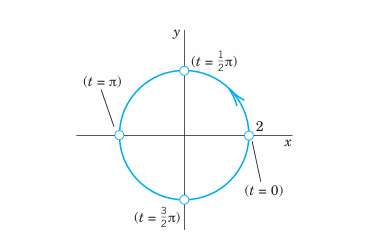
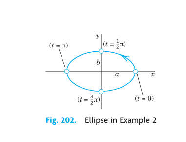
10.5.3 EXAMPLE 3 Straight Line
A straight line \(L\) through a point \(A\) with position vector \(\mathbf{a}\) in the direction of a constant vector \(\mathbf{b}\) (see Figure 10.41) can be represented parametrically in the form \[ \mathbf{r}(t) = \mathbf{a} + t\mathbf{b} = [a_1 + tb_1, \, a_2 + tb_2, \, a_3 + tb_3]. \tag{10.62}\] If \(\mathbf{b}\) is a unit vector, its components are the direction cosines of \(L\). In this case, \(|t|\) measures the distance of the points of \(L\) from \(A\). For instance, the straight line in the \(xy\)-plane through \(A: (3, 2)\) having slope 1 is (sketch it) \[ \mathbf{r}(t) = [3, 2, 0] + t[1, 1, 0] = [3 + t, 2 + t, 0]. \] \(\square\)
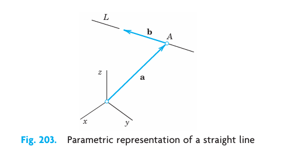
A plane curve is a curve that lies in a plane in space. A curve that is not plane is called a twisted curve. A standard example of a twisted curve is the following.
10.5.4 EXAMPLE 4 Circular Helix
The twisted curve \(C\) represented by the vector function \[ \mathbf{r}(t) = [a\cos t, a\sin t, ct] = a\cos t \mathbf{i} + a\sin t \mathbf{j} + ct\mathbf{k} \quad (c \neq 0) \tag{10.63}\] is called a circular helix. It lies on the cylinder \(x^2 + y^2 = a^2\). If \(c > 0\), the helix is shaped like a right-handed screw (Figure 10.42). If \(c < 0\), it looks like a left-handed screw (Figure 10.43). If \(c = 0\), then (Equation 10.63) is a circle. \(\square\)
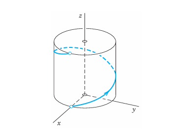
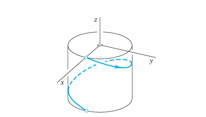
A simple curve is a curve without multiple points, that is, without points at which the curve intersects or touches itself. Circle and helix are simple curves. Figure 10.44 shows curves that are not simple. An example is \([\sin 2t, \cos t, 0]\). Can you sketch it?
An arc of a curve is the portion between any two points of the curve. For simplicity, we say “curve” for curves as well as for arcs.
10.5.5 Tangent to a Curve
The next idea is the approximation of a curve by straight lines, leading to tangents and to a definition of length. Tangents are straight lines touching a curve. The tangent to a simple curve \(C\) at a point \(P\) of \(C\) is the limiting position of a straight line \(L\) through \(P\) and a point \(Q\) of \(C\) as \(Q\) approaches \(P\) along \(C\). See Figure 10.45.
Let us formalize this concept. If \(C\) is given by \(\mathbf{r}(t)\), and \(P\) and \(Q\) correspond to \(t\) and \(t + \Delta t\), then a vector in the direction of \(L\) is \[ \frac{1}{\Delta t} [\mathbf{r}(t + \Delta t) - \mathbf{r}(t)]. \tag{10.64}\] In the limit this vector becomes the derivative \[ \mathbf{r}'(t) = \lim_{\Delta t \to 0} \frac{1}{\Delta t} [\mathbf{r}(t + \Delta t) - \mathbf{r}(t)], \tag{10.65}\] provided \(\mathbf{r}(t)\) is differentiable, as we shall assume from now on. If \(\mathbf{r}'(t) \neq \mathbf{0}\), we call \(\mathbf{r}'(t)\) a tangent vector of \(C\) at \(P\) because it has the direction of the tangent. The corresponding unit vector is the unit tangent vector (see Figure 10.45) \[ \mathbf{u} = \frac{1}{|\mathbf{r}'|} \mathbf{r}'. \tag{10.66}\] Note that both \(\mathbf{r}'\) and \(\mathbf{u}\) point in the direction of increasing \(t\). Hence their sense depends on the orientation of \(C\). It is reversed if we reverse the orientation.
It is now easy to see that the tangent to \(C\) at \(P\) is given by \[ \mathbf{q}(w) = \mathbf{r} + w\mathbf{r}' \tag{10.67}\] (see Figure 10.46). This is the sum of the position vector \(\mathbf{r}\) of \(P\) and a multiple of the tangent vector \(\mathbf{r}'\) of \(C\) at \(P\). Both vectors depend on \(P\). The variable \(w\) is the parameter in (Equation 10.67).
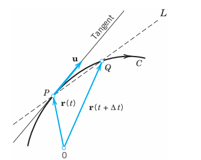
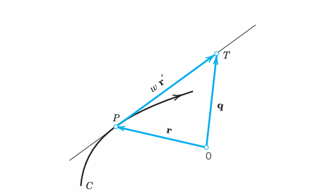
10.5.6 EXAMPLE 5 Tangent to an Ellipse
Find the tangent to the ellipse \(\frac{1}{4}x^2 + y^2 = 1\) at \(P: (\sqrt{2}, 1/\sqrt{2})\).
Solution. Equation (Equation 10.61) with semi-axes \(a=2\) and \(b=1\) gives \(\mathbf{r}(t) = [2\cos t, \sin t]\). The derivative is \(\mathbf{r}'(t) = [-2\sin t, \cos t]\). Now \(P\) corresponds to \(t = \pi/4\) because \[ \mathbf{r}(\pi/4) = [2\cos(\pi/4), \sin(\pi/4)] = [\sqrt{2}, 1/\sqrt{2}]. \] Hence \(\mathbf{r}'(\pi/4) = [-\sqrt{2}, 1/\sqrt{2}]\). From (Equation 10.67) we thus get the answer \[ \mathbf{q}(w) = [\sqrt{2}, 1/\sqrt{2}] + w[-\sqrt{2}, 1/\sqrt{2}] = [\sqrt{2}(1 - w), \, \frac{1}{\sqrt{2}}(1 + w)]. \] To check the result, sketch or graph the ellipse and the tangent. \(\square\)
10.5.7 Length of a Curve
We are now ready to define the length \(l\) of a curve. \(l\) will be the limit of the lengths of broken lines of \(n\) chords (see Figure 10.47, where \(n = 5\)) with larger and larger \(n\). For this, let \(\mathbf{r}(t)\), \(a \le t \le b\), represent \(C\). For each \(n = 1, 2, \dots\), we subdivide (“partition”) the interval \(a \le t \le b\) by points \[ t_0 (=a), \, t_1, \, \dots, \, t_{n-1}, \, t_n (=b), \quad \text{where} \quad t_0 < t_1 < \dots < t_n. \] This gives a broken line of chords with endpoints \(\mathbf{r}(t_0), \dots, \mathbf{r}(t_n)\). We do this arbitrarily but so that the greatest \(|\Delta t_m| = |t_m - t_{m-1}|\) approaches 0 as \(n \to \infty\). The lengths \(l_1, l_2, \dots\) of these chords can be obtained from the Pythagorean theorem. If \(\mathbf{r}(t)\) has a continuous derivative \(\mathbf{r}'(t)\), it can be shown that the sequence \(l_1, l_2, \dots\) has a limit, which is independent of the particular choice of the representation of \(C\) and of the choice of subdivisions. This limit is given by the integral \[ l = \int_a^b \sqrt{\mathbf{r}' \cdot \mathbf{r}'} \, dt = \int_a^b |\mathbf{r}'| \, dt. \tag{10.68}\] \(l\) is called the length of \(C\), and \(C\) is called rectifiable. Formula (Equation 10.68) is made plausible in calculus for plane curves and is proved for curves in space in [GenRef8] listed in App. 1.
The actual evaluation of the integral (Equation 10.68) will, in general, be difficult. However, some simple cases are given in the problem set.
10.5.8 Arc Length s of a Curve
The length (Equation 10.68) of a curve \(C\) is a constant, a positive number. But if we replace the fixed \(b\) in (Equation 10.68) with a variable \(t\), the integral becomes a function of \(t\), denoted by \(s(t)\) and called the arc length function or simply the arc length of \(C\). Thus \[ s(t) = \int_a^t \sqrt{\mathbf{r}' \cdot \mathbf{r}'} \, d\tilde{t} = \int_a^t |\mathbf{r}'| \, d\tilde{t}. \tag{10.69}\] Here the variable of integration is denoted by \(\tilde{t}\) because \(t\) is now used in the upper limit. Geometrically, \(s(t_0)\) with some \(t_0 > a\) is the length of the arc of \(C\) between the points with parametric values \(a\) and \(t_0\). The choice of \(a\) (the point \(s = 0\)) is arbitrary; changing \(a\) means changing \(s\) by a constant.
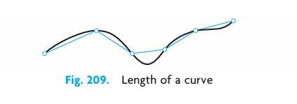
Linear Element \(ds\). If we differentiate (Equation 10.69) and square, we have \[ \left(\frac{ds}{dt}\right)^2 = \frac{d\mathbf{r}}{dt} \cdot \frac{d\mathbf{r}}{dt} = |\mathbf{r}'(t)|^2 = \left(\frac{dx}{dt}\right)^2 + \left(\frac{dy}{dt}\right)^2 + \left(\frac{dz}{dt}\right)^2. \tag{10.70}\] It is customary to write \[ d\mathbf{r} = [dx, dy, dz] = dx\mathbf{i} + dy\mathbf{j} + dz\mathbf{k} \tag{10.71}\] and \[ ds^2 = d\mathbf{r} \cdot d\mathbf{r} = dx^2 + dy^2 + dz^2. \tag{10.72}\] \(ds\) is called the linear element of \(C\).
Arc Length as Parameter. The use of \(s\) in (Equation 10.59) instead of an arbitrary \(t\) simplifies various formulas. For the unit tangent vector (Equation 10.66) we simply obtain \[ \mathbf{u}(s) = \mathbf{r}'(s). \tag{10.73}\] Indeed, \(|\mathbf{r}'(s)| = ds/ds = 1\) in (Equation 10.70) shows that \(\mathbf{r}'(s)\) is a unit vector. Even greater simplifications due to the use of \(s\) will occur in curvature and torsion (below).
10.5.9 EXAMPLE 6 Circular Helix. Circle. Arc Length as Parameter
The helix \(\mathbf{r}(t) = [a\cos t, a\sin t, ct]\) in (Equation 10.63) has the derivative \(\mathbf{r}'(t) = [-a\sin t, a\cos t, c]\). Hence \(\mathbf{r}' \cdot \mathbf{r}' = a^2 + c^2\), a constant, which we denote by \(K^2\). Hence the integrand in (Equation 10.69) is constant, equal to \(K\), and the integral is \(s = Kt\). Thus \(t = s/K\), so that a representation of the helix with the arc length \(s\) as parameter is \[ \mathbf{r}^*(s) = \left[ a\cos\frac{s}{K}, \, a\sin\frac{s}{K}, \, c\frac{s}{K} \right], \quad K = \sqrt{a^2 + c^2}. \tag{10.74}\] A circle is obtained if we set \(c = 0\). Then \(K = a\), \(t = s/a\), and a representation with arc length \(s\) as parameter is \[ \mathbf{r}^*(s) = \left[ a\cos\frac{s}{a}, \, a\sin\frac{s}{a} \right]. \] \(\square\)
10.5.10 Curves in Mechanics. Velocity. Acceleration
Curves play a basic role in mechanics, where they may serve as paths of moving bodies. Then such a curve \(C\) should be represented by a parametric representation \(\mathbf{r}(t)\) with time \(t\) as parameter. The tangent vector (Equation 10.65) of \(C\) is then called the velocity vector \(\mathbf{v}\) because, being tangent, it points in the instantaneous direction of motion and its length gives the speed \(|\mathbf{v}| = |\mathbf{r}'| = \sqrt{\mathbf{r}' \cdot \mathbf{r}'} = ds/dt\); see (Equation 10.70). The second derivative of \(\mathbf{r}(t)\) is called the acceleration vector and is denoted by \(\mathbf{a}\). Its length \(|\mathbf{a}|\) is called the acceleration of the motion. Thus \[ \mathbf{v}(t) = \mathbf{r}'(t), \quad \mathbf{a}(t) = \mathbf{v}'(t) = \mathbf{r}''(t). \tag{10.75}\]
Tangential and Normal Acceleration. Whereas the velocity vector is always tangent to the path of motion, the acceleration vector will generally have another direction. We can split the acceleration vector into two directional components, that is, \[ \mathbf{a} = \mathbf{a}_{\text{tan}} + \mathbf{a}_{\text{norm}}, \tag{10.76}\] where the tangential acceleration vector \(\mathbf{a}_{\text{tan}}\) is tangent to the path (or, sometimes, \(\mathbf{0}\)) and the normal acceleration vector \(\mathbf{a}_{\text{norm}}\) is normal (perpendicular) to the path (or, sometimes, \(\mathbf{0}\)).
Expressions for the vectors in (Equation 10.76) are obtained from (Equation 10.75) by the chain rule. We first have \[ \mathbf{v}(t) = \frac{d\mathbf{r}}{dt} = \frac{d\mathbf{r}}{ds}\frac{ds}{dt} = \mathbf{u}(s)\frac{ds}{dt} \] where \(\mathbf{u}(s)\) is the unit tangent vector (Equation 10.73). Another differentiation gives \[ \mathbf{a}(t) = \frac{d\mathbf{v}}{dt} = \frac{d}{dt}\left(\mathbf{u}(s)\frac{ds}{dt}\right) = \frac{d\mathbf{u}}{ds}\left(\frac{ds}{dt}\right)^2 + \mathbf{u}(s)\frac{d^2s}{dt^2}. \tag{10.77}\] Since the tangent vector \(\mathbf{u}(s)\) has constant length (length one), its derivative \(d\mathbf{u}/ds\) is perpendicular to \(\mathbf{u}(s)\), from the result in Example 4 in Section 10.4. Hence the first term on the right of (Equation 10.77) is the normal acceleration vector, and the second term on the right is the tangential acceleration vector, so that (Equation 10.77) is of the form (Equation 10.76).
Now the length \(|\mathbf{a}_{\text{tan}}|\) is the absolute value of the projection of \(\mathbf{a}\) in the direction of \(\mathbf{v}\), given by (Equation 10.21) in Section 10.2 with \(\mathbf{b} = \mathbf{v}\); that is, \(|\mathbf{a}_{\text{tan}}| = |\mathbf{a} \cdot \mathbf{v}|/|\mathbf{v}|\). Hence \(\mathbf{a}_{\text{tan}}\) is this expression times the unit vector \((1/|\mathbf{v}|)\mathbf{v}\) in the direction of \(\mathbf{v}\), that is, \[ \mathbf{a}_{\text{tan}} = \frac{\mathbf{a} \cdot \mathbf{v}}{\mathbf{v} \cdot \mathbf{v}} \mathbf{v}. \quad \text{Also,} \quad \mathbf{a}_{\text{norm}} = \mathbf{a} - \mathbf{a}_{\text{tan}}. \tag{10.78}\] We now turn to two examples that are relevant to applications in space travel. They deal with the centripetal and centrifugal accelerations, as well as the Coriolis acceleration.
10.5.11 EXAMPLE 7 Centripetal Acceleration. Centrifugal Force
The vector function \[ \mathbf{r}(t) = [R\cos\omega t, \, R\sin\omega t] = R\cos\omega t \mathbf{i} + R\sin\omega t \mathbf{j} \] (with fixed \(\mathbf{i}\) and \(\mathbf{j}\)) represents a circle \(C\) of radius \(R\) with center at the origin of the \(xy\)-plane and describes the motion of a small body \(B\) counterclockwise around the circle. Differentiation gives the velocity vector \[ \mathbf{v} = \mathbf{r}' = [-R\omega\sin\omega t, \, R\omega\cos\omega t] = -R\omega\sin\omega t \mathbf{i} + R\omega\cos\omega t \mathbf{j} \] which is tangent to \(C\). Its magnitude, the speed, is \[ |\mathbf{v}| = |\mathbf{r}'| = \sqrt{\mathbf{r}' \cdot \mathbf{r}'} = R\omega. \] Hence it is constant. The speed divided by the distance \(R\) from the center is called the angular speed. It equals \(\omega\), so that it is constant, too. Differentiating the velocity vector, we obtain the acceleration vector \[ \mathbf{a} = \mathbf{v}' = [-R\omega^2\cos\omega t, \, -R\omega^2\sin\omega t] = -R\omega^2\cos\omega t \mathbf{i} - R\omega^2\sin\omega t \mathbf{j}. \tag{10.79}\] This shows that \(\mathbf{a} = -\omega^2\mathbf{r}\) (Figure 10.48), so that there is an acceleration toward the center, called the centripetal acceleration of the motion. It occurs because the velocity vector is changing direction at a constant rate. Its magnitude is constant, \(|\mathbf{a}| = \omega^2|\mathbf{r}| = \omega^2 R\). Multiplying \(\mathbf{a}\) by the mass \(m\) of \(B\), we get the centripetal force \(m\mathbf{a}\). The opposite vector \(-m\mathbf{a}\) is called the centrifugal force. At each instant these two forces are in equilibrium. We see that in this motion the acceleration vector is normal (perpendicular) to \(C\); hence there is no tangential acceleration. \(\square\)
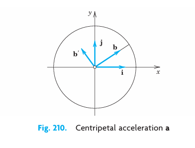
10.5.12 EXAMPLE 8 Superposition of Rotations. Coriolis Acceleration
A projectile is moving with constant speed along a meridian of the rotating Earth in Figure 10.49. Find its acceleration.
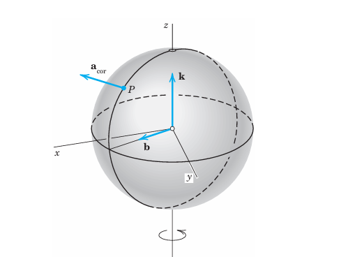
Solution. Let \(x, y, z\) be a fixed Cartesian coordinate system in space, with unit vectors \(\mathbf{i}, \mathbf{j}, \mathbf{k}\) in the directions of the axes. Let the Earth, together with a unit vector \(\mathbf{b}\), be rotating about the \(z\)-axis with angular speed \(\omega > 0\) (see Example 7). Since \(\mathbf{b}\) is rotating together with the Earth, it is of the form \[ \mathbf{b}(t) = \cos\omega t \mathbf{i} + \sin\omega t \mathbf{j}. \] Let the projectile be moving on the meridian whose plane is spanned by \(\mathbf{b}\) and \(\mathbf{k}\) (Figure 10.49) with constant angular speed \(\gamma > 0\). Then its position vector in terms of \(\mathbf{b}\) and \(\mathbf{k}\) is \[ \mathbf{r}(t) = R\cos\gamma t \mathbf{b}(t) + R\sin\gamma t \mathbf{k} \quad (R = \text{Radius of the Earth}). \] We have finished setting up the model. Next, we apply vector calculus to obtain the desired acceleration of the projectile. Our result will be unexpected—and highly relevant for air and space travel. The first and second derivatives of \(\mathbf{b}\) with respect to \(t\) are \[ \begin{aligned} \mathbf{b}'(t) &= -\omega\sin\omega t \mathbf{i} + \omega\cos\omega t \mathbf{j}, \\ \mathbf{b}''(t) &= -\omega^2\cos\omega t \mathbf{i} - \omega^2\sin\omega t \mathbf{j} = -\omega^2\mathbf{b}(t). \end{aligned} \tag{10.80}\] The first and second derivatives of \(\mathbf{r}(t)\) with respect to \(t\) are \[ \begin{aligned} \mathbf{v} = \mathbf{r}'(t) &= R\cos\gamma t \mathbf{b}' - \gamma R\sin\gamma t \mathbf{b} + \gamma R\cos\gamma t \mathbf{k}, \\ \mathbf{a} = \mathbf{v}'(t) &= R\cos\gamma t \mathbf{b}'' - 2\gamma R\sin\gamma t \mathbf{b}' - \gamma^2 R\cos\gamma t \mathbf{b} - \gamma^2 R\sin\gamma t \mathbf{k} \\ &= R\cos\gamma t \mathbf{b}'' - 2\gamma R\sin\gamma t \mathbf{b}' - \gamma^2\mathbf{r}. \end{aligned} \tag{10.81}\] By analogy with Example 7 and because of \(\mathbf{b}'' = -\omega^2\mathbf{b}\) in (Equation 10.80) we conclude that the first term in \(\mathbf{a}\) (involving \(\omega^2\) in \(\mathbf{b}''\)) is the centripetal acceleration due to the rotation of the Earth. Similarly, the third term in the last line (involving \(\gamma^2\)) is the centripetal acceleration due to the motion of the projectile on the meridian \(M\) of the rotating Earth.
The second, unexpected term \(-2\gamma R\sin\gamma t \mathbf{b}'\) in \(\mathbf{a}\) is called the Coriolis acceleration (see Figure 10.49) and is due to the interaction of the two rotations. On the Northern Hemisphere, \(\sin\gamma t > 0\) (for \(t > 0\); also \(\gamma > 0\) by assumption), so that \(\mathbf{a}_{\text{cor}}\) has the direction of \(-\mathbf{b}'\), that is, opposite to the rotation of the Earth. \(|\mathbf{a}_{\text{cor}}|\) is maximum at the North Pole and zero at the equator. The projectile \(B\) of mass \(m\) experiences a force \(-m\mathbf{a}_{\text{cor}}\) opposite to \(m\mathbf{a}_{\text{cor}}\), which tends to let \(B\) deviate from \(M\) to the right (and in the Southern Hemisphere, where \(\sin\gamma t < 0\), to the left). This deviation has been observed for missiles, rockets, shells, and atmospheric airflow. \(\square\)
10.5.13 Curvature and Torsion. Optional
This last topic of Section 10.5 is optional but completes our discussion of curves relevant to vector calculus.
The curvature \(\kappa(s)\) of a curve \(C: \mathbf{r}(s)\) (\(s\) the arc length) at a point \(P\) of \(C\) measures the rate of change \(|\mathbf{u}'(s)|\) of the unit tangent vector \(\mathbf{u}(s)\) at \(P\). Hence \(\kappa(s)\) measures the deviation of \(C\) at \(P\) from a straight line (its tangent at \(P\)). Since \(\mathbf{u}(s) = \mathbf{r}'(s)\), the definition is \[ \kappa(s) = |\mathbf{u}'(s)| = |\mathbf{r}''(s)| \quad (\mathbf{r}' = d\mathbf{r}/ds). \tag{10.82}\]
The torsion \(\tau(s)\) of \(C\) at \(P\) measures the rate of change of the osculating plane \(O\) of curve \(C\) at point \(P\). Note that this plane is spanned by \(\mathbf{u}\) and \(\mathbf{u}'\) and shown in Figure 10.50. Hence \(\tau(s)\) measures the deviation of \(C\) at \(P\) from a plane (from \(O\) at \(P\)). Now the rate of change is also measured by the derivative \(\mathbf{b}'\) of a normal vector \(\mathbf{b}\) to \(O\). By the definition of vector product, a unit normal vector of \(O\) is \[ \mathbf{b} = \mathbf{u} \times \mathbf{p} = \mathbf{u} \times \left(\frac{1}{\kappa}\mathbf{u}'\right). \] Here \(\mathbf{p} = (1/\kappa)\mathbf{u}'\) is called the unit principal normal vector and \(\mathbf{b}\) is called the unit binormal vector of \(C\) at \(P\). The vectors are labeled in Figure 10.50. Here we must assume that \(\kappa \neq 0\); hence \(\kappa > 0\). The absolute value of the torsion is now defined by \[ |\tau(s)| = |\mathbf{b}'(s)|. \tag{10.83}\] Whereas \(\kappa(s)\) is nonnegative, it is practical to give the torsion a sign, motivated by “right-handed” and “left-handed” (see Figure 10.42 and Figure 10.43). This needs a little further calculation. Since \(\mathbf{b}\) is a unit vector, it has constant length. Hence \(\mathbf{b}'\) is perpendicular to \(\mathbf{b}\) (see Example 4 in Section 10.4). Now \(\mathbf{b}'\) is also perpendicular to \(\mathbf{u}\) because, by the definition of vector product, we have \(\mathbf{b} \cdot \mathbf{u} = 0\), \(\mathbf{b} \cdot \mathbf{u}' = 0\). This implies \[ (\mathbf{b} \cdot \mathbf{u})' = \mathbf{b}' \cdot \mathbf{u} + \mathbf{b} \cdot \mathbf{u}' = \mathbf{b}' \cdot \mathbf{u} + 0 = 0. \] Hence if \(\mathbf{b}' \neq \mathbf{0}\) at \(P\), it must have the direction of \(\mathbf{p}\) or \(-\mathbf{p}\), so that it must be of the form \(\mathbf{b}' = -\tau\mathbf{p}\). Taking the dot product of this by \(\mathbf{p}\) and using \(\mathbf{p} \cdot \mathbf{p} = 1\) gives \[ \tau(s) = -\mathbf{p}(s) \cdot \mathbf{b}'(s). \tag{10.84}\] The minus sign is chosen to make the torsion of a right-handed helix positive and that of a left-handed helix negative (Figure 10.42 and Figure 10.43). The orthonormal vector triple \(\mathbf{u}, \mathbf{p}, \mathbf{b}\) is called the trihedron of \(C\). Figure 10.50 also shows the names of the three straight lines in the directions of \(\mathbf{u}, \mathbf{p}, \mathbf{b}\), which are the intersections of the osculating plane, the normal plane, and the rectifying plane.
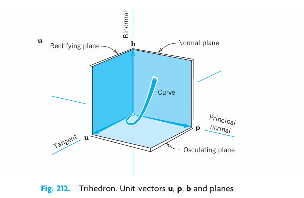
10.5.14 Problem Set 9.5
10.5.14.1 1–10: PARAMETRIC REPRESENTATIONS
What curves are represented by the following? Sketch them. 1. \([3 + 2\cos t, \, 2\sin t, \, 0]\) 2. \([a + t, \, b + 3t, \, c - 5t]\) 3. \([0, \, t, \, t^3]\) 4. \([-2, \, 2 + 5\cos t, \, -1 + 5\sin t]\) 5. \([2 + 4\cos t, \, 1 + \sin t, \, 0]\) 6. \([a + 3\cos \pi t, \, b - 2\sin \pi t, \, 0]\) 7. \([4\cos t, \, 4\sin t, \, 3t]\) 8. \([\cosh t, \, \sinh t, \, 2]\) 9. \([\cos t, \, \sin 2t, \, 0]\) 10. \([t, \, 2, \, 1/t]\)
10.5.14.2 11–20: FIND A PARAMETRIC REPRESENTATION
Circle in the plane \(z = 1\) with center \((3, 2)\) and passing through the origin.
Circle in the \(yz\)-plane with center \((4, 0)\) and passing through \((0, 3)\). Sketch it.
Straight line through \((2, 1, 3)\) in the direction of \(\mathbf{i} + 2\mathbf{j}\).
Straight line through \((1, 1, 1)\) and \((4, 0, 2)\). Sketch it.
Straight line \(y = 4x - 1, z = 5x\).
The intersection of the circular cylinder of radius 1 about the \(z\)-axis and the plane \(z = y\).
Circle \(x^2 + y^2 = 1, z = y\).
Helix \(x^2 + y^2 = 25, z = 2\arctan(y/x)\).
Hyperbola \(4x^2 - 3y^2 = 4, z = -2\).
Intersection of \(2x - y + 3z = 2\) and \(x + 2y - z = 3\).
Orientation. Explain why setting \(t = -t^*\) reverses the orientation of \([a\cos t, a\sin t, 0]\).
CAS PROJECT. Curves. Graph the following more complicated curves:
- \(\mathbf{r}(t) = [2\cos t + \cos 2t, \, 2\sin t - \sin 2t]\) (Steiner’s hypocycloid).
- \(\mathbf{r}(t) = [\cos t + k\cos 2t, \, \sin t - k\sin 2t]\) with \(k = 10, 2, 1, 1/2, 0, -1/2, -1\).
- \(\mathbf{r}(t) = [\cos t, \sin 5t]\) (a Lissajous curve).
- \(\mathbf{r}(t) = [\cos t, \sin kt]\). For what \(k\)’s will it be closed?
- \(\mathbf{r}(t) = [R\sin\omega t + \omega Rt, \, R\cos\omega t + R]\) (cycloid).
- \(\mathbf{r}(t) = [2\cos t + \cos 2t, \, 2\sin t - \sin 2t]\) (Steiner’s hypocycloid).
CAS PROJECT. Famous Curves in Polar Form. Use your CAS to graph the following curves given in polar form \(r = r(\theta)\), \(r^2 = x^2 + y^2\), \(\tan\theta = y/x\), and investigate their form depending on parameters \(a\) and \(b\).
- \(r = a\theta\) (Spiral of Archimedes)
- \(r = ae^{b\theta}\) (Logarithmic spiral)
- \(r = 2a\sin^2\theta/\cos\theta\) (Cissoid of Diocles)
- \(r = a/\cos\theta + b\) (Conchoid of Nicomedes)
- \(r = a/\theta\) (Hyperbolic spiral)
- \(r = 3a\sin 2\theta/(\cos^3\theta + \sin^3\theta)\) (Folium of Descartes)
- \(r = 2a\sin 3\theta\) (Maclaurin’s trisectrix)
- \(r = 2a\cos\theta + b\) (Pascal’s snail)
- \(r = a\theta\) (Spiral of Archimedes)
10.5.14.3 24–28: TANGENT
Given a curve \(C: \mathbf{r}(t)\), find a tangent vector \(\mathbf{r}'(t)\), a unit tangent vector \(\mathbf{u}(t)\), and the tangent of \(C\) at \(P\). Sketch curve and tangent. 24. \(\mathbf{r}(t) = [t, \, \frac{1}{2}t^2, \, 1], \quad P: (2, 2, 1)\) 25. \(\mathbf{r}(t) = [10\cos t, \, 1, \, 10\sin t], \quad P: (6, 1, 8)\) 26. \(\mathbf{r}(t) = [\cos t, \, \sin t, \, 9t], \quad P: (1, 0, 18\pi)\) 27. \(\mathbf{r}(t) = [t, \, 1/t, \, 0], \quad P: (2, 1/2, 0)\) 28. \(\mathbf{r}(t) = [t, \, t^2, \, t^3], \quad P: (1, 1, 1)\)
10.5.14.4 29–32: LENGTH
Find the length and sketch the curve. 29. Catenary \(\mathbf{r}(t) = [t, \cosh t]\) from \(t = 0\) to \(t = 1\). 30. Circular helix \(\mathbf{r}(t) = [4\cos t, \, 4\sin t, \, 5t]\) from \((4, 0, 0)\) to \((4, 0, 10\pi)\). 31. Circle \(\mathbf{r}(t) = [a\cos t, \, a\sin t]\) from \((a, 0)\) to \((0, a)\). 32. Hypocycloid \(\mathbf{r}(t) = [a\cos^3 t, \, a\sin^3 t]\), total length.
- Plane curve. Show that Eq. (Equation 10.68) implies \(l = \int_a^b \sqrt{1 + y'^2} \, dx\) for the length of a plane curve \(C: y = f(x), z = 0\), and \(a \le x \le b\).
- Polar coordinates. \(r = \sqrt{x^2 + y^2}\), \(\theta = \arctan(y/x)\) give \[ l = \int_\alpha^\beta \sqrt{r^2 + r'^2} \, d\theta, \] where \(r' = dr/d\theta\). Derive this. Use it to find the total length of the cardioid \(r = a(1 - \cos\theta)\). Sketch this curve. Hint: Use (10) in App. 3.1.
10.5.14.5 35–46: CURVES IN MECHANICS
Forces acting on moving objects (cars, airplanes, ships, etc.) require the engineer to know corresponding tangential and normal accelerations. In Probs. 35–38 find them, along with the velocity and speed. Sketch the path. 35. Parabola \(\mathbf{r}(t) = [t, t^2, 0]\). Find \(\mathbf{v}\) and \(\mathbf{a}\). 36. Straight line \(\mathbf{r}(t) = [8t, 6t, 0]\). Find \(\mathbf{v}\) and \(\mathbf{a}\). 37. Cycloid \(\mathbf{r}(t) = (R\sin\omega t + \omega Rt)\mathbf{i} + (R\cos\omega t + R)\mathbf{j}\). This is the path of a point on the rim of a wheel of radius \(R\) that rolls without slipping along the \(x\)-axis. Find \(\mathbf{v}\) and \(\mathbf{a}\) at the maximum \(y\)-values of the curve. 38. Ellipse \(\mathbf{r}(t) = [\cos t, 2\sin t, 0]\).
39–42. THE USE OF A CAS may greatly facilitate the investigation of more complicated paths, as they occur in gear transmissions and other constructions. To grasp the idea, using a CAS, graph the path and find velocity, speed, and tangential and normal acceleration. 39. \(\mathbf{r}(t) = [\cos t + \cos 2t, \, \sin t - \sin 2t]\) 40. \(\mathbf{r}(t) = [2\cos t + \cos 2t, \, 2\sin t - \sin 2t]\) 41. \(\mathbf{r}(t) = [\cos t, \, \sin 2t, \, \cos 2t]\) 42. \(\mathbf{r}(t) = [ct\cos t, \, ct\sin t, \, ct]\) (\(c \neq 0\))
- Sun and Earth. Find the acceleration of the Earth toward the sun from (Equation 10.79) and the fact that Earth revolves about the sun in a nearly circular orbit with an almost constant speed of 30 km/s.
- Earth and moon. Find the centripetal acceleration of the moon toward Earth, assuming that the orbit of the moon is a circle of radius 239,000 miles \(\approx 3.85 \times 10^8\) m, and the time for one complete revolution is 27.3 days \(\approx 2.36 \times 10^6\) s.
- Satellite. Find the speed of an artificial Earth satellite traveling at an altitude of 80 miles above Earth’s surface, where \(g = 31\text{ ft/sec}^2\). (The radius of the Earth is 3960 miles.)
- Satellite. A satellite moves in a circular orbit 450 miles above Earth’s surface and completes 1 revolution in 100 min. Find the acceleration of gravity at the orbit from these data and from the radius of Earth (3960 miles).
10.5.14.6 47–55: CURVATURE AND TORSION
- Circle. Show that a circle of radius \(a\) has curvature \(1/a\).
- Curvature. Using (Equation 10.82), show that if \(C\) is represented by \(\mathbf{r}(t)\) with arbitrary \(t\), then \[ \kappa(t) = \frac{\sqrt{(\mathbf{r}' \cdot \mathbf{r}')(\mathbf{r}'' \cdot \mathbf{r}'') - (\mathbf{r}' \cdot \mathbf{r}'')^2}}{(\mathbf{r}' \cdot \mathbf{r}')^{3/2}}. \tag{10.85}\]
- Plane curve. Using (Equation 10.85), show that for a curve \(y = f(x)\), \[ \kappa(x) = \frac{|y''|}{(1 + y'^2)^{3/2}} \quad (y' = dy/dx, \text{ etc.}). \tag{10.86}\]
- Torsion. Using \(\mathbf{b} = \mathbf{u} \times \mathbf{p}\) and (Equation 10.84), show that (when \(\kappa \neq 0\)) \[ \tau(s) = (\mathbf{u} \ \mathbf{p} \ \mathbf{p}') = (\mathbf{r}' \ \mathbf{r}'' \ \mathbf{r}''') \kappa^{-2}. \tag{10.87}\]
- Torsion. Show that if \(C\) is represented by \(\mathbf{r}(t)\) with arbitrary parameter \(t\), then, assuming \(\kappa \neq 0\) as before, \[ \tau(t) = \frac{(\mathbf{r}' \ \mathbf{r}'' \ \mathbf{r}''')}{(\mathbf{r}' \cdot \mathbf{r}')(\mathbf{r}'' \cdot \mathbf{r}'') - (\mathbf{r}' \cdot \mathbf{r}'')^2}. \tag{10.88}\]
- Helix. Show that the helix \([a\cos t, a\sin t, ct]\) can be represented by \([a\cos(s/K), a\sin(s/K), cs/K]\), where \(K = \sqrt{a^2 + c^2}\) and \(s\) is the arc length. Show that it has constant curvature \(\kappa = a/K^2\) and torsion \(\tau = c/K^2\).
- Find the torsion of \(C: \mathbf{r}(t) = [t, t^2, t^3]\), which looks similar to the curve in Figure 10.50.
- Frenet formulas. Show that \[ \mathbf{u}' = \kappa\mathbf{p}, \quad \mathbf{p}' = -\kappa\mathbf{u} + \tau\mathbf{b}, \quad \mathbf{b}' = -\tau\mathbf{p}. \tag{10.89}\]
- Obtain \(\kappa\) and \(\tau\) in Prob. 52 from (Equation 10.85) and (Equation 10.88) and the original representation in Prob. 54 with parameter \(t\).
10.6 Calculus Review: Functions of Several Variables (Optional)
The parametric representations of curves \(C\) required vector functions that depended on a single variable \(x\), \(s\), or \(t\). We now want to systematically cover vector functions of several variables. This optional section is inserted into the book for your convenience and to make the book reasonably self-contained. Go onto Section 10.7 and consult Section 10.6 only when needed. For partial derivatives, see App. A3.2.
10.6.1 Chain Rules
Figure 10.51 shows the notations in the following basic theorem.
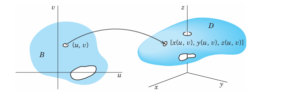
10.6.2 THEOREM 1 Chain Rule
Let \(w = f(x, y, z)\) be continuous and have continuous first partial derivatives in a domain \(D\) in \(xyz\)-space. Let \(x = x(u, v)\), \(y = y(u, v)\), \(z = z(u, v)\) be functions that are continuous and have first partial derivatives in a domain \(B\) in the \(uv\)-plane, where \(B\) is such that for every point \((u, v)\) in \(B\), the corresponding point \([x(u, v), \, y(u, v), \, z(u, v)]\) lies in \(D\). See Figure 10.51. Then the function \[ w = f(x(u, v), y(u, v), z(u, v)) \] is defined in \(B\), has first partial derivatives with respect to \(u\) and \(v\) in \(B\), and \[ \begin{aligned} \frac{\partial w}{\partial u} &= \frac{\partial w}{\partial x}\frac{\partial x}{\partial u} + \frac{\partial w}{\partial y}\frac{\partial y}{\partial u} + \frac{\partial w}{\partial z}\frac{\partial z}{\partial u}, \\ \frac{\partial w}{\partial v} &= \frac{\partial w}{\partial x}\frac{\partial x}{\partial v} + \frac{\partial w}{\partial y}\frac{\partial y}{\partial v} + \frac{\partial w}{\partial z}\frac{\partial z}{\partial v}. \end{aligned} \tag{10.90}\]
In this theorem, a domain \(D\) is an open connected point set in \(xyz\)-space, where “connected” means that any two points of \(D\) can be joined by a broken line of finitely many linear segments all of whose points belong to \(D\). “Open” means that every point \(P\) of \(D\) has a neighborhood (a little ball with center \(P\)) all of whose points belong to \(D\). For example, the interior of a cube or of an ellipsoid (the solid without the boundary surface) is a domain.
In calculus, \(x, y, z\) are often called the intermediate variables, in contrast with the independent variables \(u, v\) and the dependent variable \(w\).
10.6.3 Special Cases of Practical Interest
If \(w = f(x, y)\) and \(x = x(u, v)\), \(y = y(u, v)\) as before, then (Equation 10.90) becomes \[ \begin{aligned} \frac{\partial w}{\partial u} &= \frac{\partial w}{\partial x}\frac{\partial x}{\partial u} + \frac{\partial w}{\partial y}\frac{\partial y}{\partial u}, \\ \frac{\partial w}{\partial v} &= \frac{\partial w}{\partial x}\frac{\partial x}{\partial v} + \frac{\partial w}{\partial y}\frac{\partial y}{\partial v}. \end{aligned} \tag{10.91}\]
If \(w = f(x, y, z)\) and \(x = x(t)\), \(y = y(t)\), \(z = z(t)\), then (Equation 10.90) gives \[ \frac{dw}{dt} = \frac{\partial w}{\partial x}\frac{dx}{dt} + \frac{\partial w}{\partial y}\frac{dy}{dt} + \frac{\partial w}{\partial z}\frac{dz}{dt}. \tag{10.92}\]
If \(w = f(x, y)\) and \(x = x(t)\), \(y = y(t)\), then (Equation 10.92) reduces to \[ \frac{dw}{dt} = \frac{\partial w}{\partial x}\frac{dx}{dt} + \frac{\partial w}{\partial y}\frac{dy}{dt}. \tag{10.93}\]
Finally, the simplest case \(w = f(x)\), \(x = x(t)\) gives \[ \frac{dw}{dt} = \frac{dw}{dx}\frac{dx}{dt}. \tag{10.94}\]
10.6.4 EXAMPLE 1 Chain Rule
If \(w = x^2 - y^2\) and we define polar coordinates \(r, \theta\) by \(x = r\cos\theta\), \(y = r\sin\theta\), then (Equation 10.91) gives \[ \begin{aligned} \frac{\partial w}{\partial r} &= 2x\cos\theta - 2y\sin\theta = 2r\cos^2\theta - 2r\sin^2\theta = 2r\cos 2\theta, \\ \frac{\partial w}{\partial \theta} &= 2x(-r\sin\theta) - 2y(r\cos\theta) = -2r^2\cos\theta\sin\theta - 2r^2\sin\theta\cos\theta = -2r^2\sin 2\theta. \end{aligned} \] \(\square\)
10.6.5 Partial Derivatives on a Surface \(z = g(x, y)\)
Let \(w = f(x, y, z)\) and let \(z = g(x, y)\) represent a surface \(S\) in space. Then on \(S\) the function becomes \[ \tilde{w}(x, y) = f(x, y, g(x, y)). \] Hence, by (Equation 10.90), the partial derivatives are \[ \frac{\partial \tilde{w}}{\partial x} = \frac{\partial f}{\partial x} + \frac{\partial f}{\partial z}\frac{\partial g}{\partial x}, \quad \frac{\partial \tilde{w}}{\partial y} = \frac{\partial f}{\partial y} + \frac{\partial f}{\partial z}\frac{\partial g}{\partial y} \quad [z = g(x, y)]. \tag{10.95}\] We shall need this formula in Section 11.9.
10.6.6 EXAMPLE 2 Partial Derivatives on Surface
Let \(w = f = x^3 + y^3 + z^3\) and let \(z = g = x^2 + y^2\). Then (Equation 10.95) gives \[ \begin{aligned} \frac{\partial \tilde{w}}{\partial x} &= 3x^2 + 3z^2 \cdot 2x = 3x^2 + 6x(x^2 + y^2)^2, \\ \frac{\partial \tilde{w}}{\partial y} &= 3y^2 + 3z^2 \cdot 2y = 3y^2 + 6y(x^2 + y^2)^2. \end{aligned} \] We confirm this by substitution, using \(\tilde{w}(x, y) = x^3 + y^3 + (x^2 + y^2)^3\), that is, \[ \frac{\partial \tilde{w}}{\partial x} = 3x^2 + 3(x^2 + y^2)^2 \cdot 2x, \quad \frac{\partial \tilde{w}}{\partial y} = 3y^2 + 3(x^2 + y^2)^2 \cdot 2y. \] \(\square\)
10.6.7 Mean Value Theorems
10.6.8 THEOREM 2 Mean Value Theorem
Let \(f(x, y, z)\) be continuous and have continuous first partial derivatives in a domain \(D\) in \(xyz\)-space. Let \(P_0: (x_0, y_0, z_0)\) and \(P: (x_0 + h, y_0 + k, z_0 + l)\) be points in \(D\) such that the straight line segment \(P_0P\) joining these points lies entirely in \(D\). Then \[ f(x_0 + h, y_0 + k, z_0 + l) - f(x_0, y_0, z_0) = h\frac{\partial f}{\partial x} + k\frac{\partial f}{\partial y} + l\frac{\partial f}{\partial z}, \tag{10.96}\] the partial derivatives being evaluated at a suitable point of that segment.
Special Cases.
For a function \(f(x, y)\) of two variables (satisfying assumptions as in the theorem), formula (Equation 10.96) reduces to (Figure 10.52) \[
f(x_0 + h, y_0 + k) - f(x_0, y_0) = h\frac{\partial f}{\partial x} + k\frac{\partial f}{\partial y},
\tag{10.97}\] and, for a function \(f(x)\) of a single variable, (Equation 10.96) becomes \[
f(x_0 + h) - f(x_0) = h\frac{\partial f}{\partial x},
\tag{10.98}\] where in (Equation 10.98), the domain \(D\) is a segment of the \(x\)-axis and the derivative is taken at a suitable point between \(x_0\) and \(x_0 + h\).
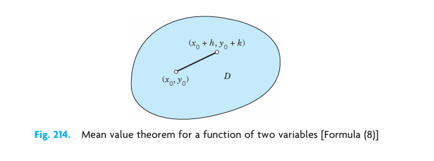
10.7 Gradient of a Scalar Field. Directional Derivative
We shall see that some of the vector fields that occur in applications—not all of them!—can be obtained from scalar fields. Using scalar fields instead of vector fields is of a considerable advantage because scalar fields are easier to use than vector fields. It is the “gradient” that allows us to obtain vector fields from scalar fields, and thus the gradient is of great practical importance to the engineer.
10.7.1 DEFINITION 1: Gradient
The setting is that we are given a scalar function \(f(x, y, z)\) that is defined and differentiable in a domain in 3-space with Cartesian coordinates \(x, y, z\). We denote the gradient of that function by \(\text{grad } f\) or \(\nabla f\) (read nabla \(f\)). Then the gradient of \(f(x, y, z)\) is defined as the vector function \[ \text{grad } f = \nabla f = \left[ \frac{\partial f}{\partial x}, \, \frac{\partial f}{\partial y}, \, \frac{\partial f}{\partial z} \right] = \frac{\partial f}{\partial x} \mathbf{i} + \frac{\partial f}{\partial y} \mathbf{j} + \frac{\partial f}{\partial z} \mathbf{k}. \tag{10.99}\]
Remarks.
For a definition of the gradient in curvilinear coordinates, see App. A3.4.
As a quick example, if \(f(x, y, z) = 2y^3 + 4xz + 3x\), then \(\text{grad } f = [4z + 3, \, 6y^2, \, 4x]\).
Furthermore, we will show later in this section that (Equation 10.99) actually does define a vector.
The notation \(\nabla f\) is suggested by the differential operator \(\nabla\) (read nabla) defined by \[ \nabla = \mathbf{i} \frac{\partial}{\partial x} + \mathbf{j} \frac{\partial}{\partial y} + \mathbf{k} \frac{\partial}{\partial z}. \tag{10.100}\]
Gradients are useful in several ways, notably in giving the rate of change of \(f(x, y, z)\) in any direction in space, in obtaining surface normal vectors, and in deriving vector fields from scalar fields, as we are going to show in this section.
10.7.2 Directional Derivative
From calculus we know that the partial derivatives in (Equation 10.99) give the rates of change of \(f(x, y, z)\) in the directions of the three coordinate axes. It seems natural to extend this and ask for the rate of change of \(f\) in an arbitrary direction in space. This leads to the following concept.
10.7.3 DEFINITION 2: Directional Derivative
The directional derivative \(D_{\mathbf{b}} f\) or \(df/ds\) of a function \(f(x, y, z)\) at a point \(P\) in the direction of a vector \(\mathbf{b}\) is defined by (see Figure 10.53) \[ D_{\mathbf{b}} f = \frac{df}{ds} = \lim_{s \to 0} \frac{f(Q) - f(P)}{s}. \tag{10.101}\] Here \(Q\) is a variable point on the straight line \(L\) in the direction of \(\mathbf{b}\), and \(|s|\) is the distance between \(P\) and \(Q\). Also, \(s > 0\) if \(Q\) lies in the direction of \(\mathbf{b}\) (as in Figure 10.53), \(s < 0\) if \(Q\) lies in the direction of \(-\mathbf{b}\), and \(s = 0\) if \(Q = P\).
The next idea is to use Cartesian \(xyz\)-coordinates and for \(\mathbf{b}\) a unit vector. Then the line \(L\) is given by \[ \mathbf{r}(s) = x(s)\mathbf{i} + y(s)\mathbf{j} + z(s)\mathbf{k} = \mathbf{p}_0 + s\mathbf{b} \quad (|\mathbf{b}| = 1) \tag{10.102}\] where \(\mathbf{p}_0\) is the position vector of \(P\). Equation (Equation 10.101) now shows that \(D_{\mathbf{b}} f = df/ds\) is the derivative of the function \(f(x(s), y(s), z(s))\) with respect to the arc length \(s\) of \(L\). Hence, assuming that \(f\) has continuous partial derivatives and applying the chain rule formula ( 10.92, we obtain \[ D_{\mathbf{b}} f = \frac{df}{ds} = \frac{\partial f}{\partial x} x' + \frac{\partial f}{\partial y} y' + \frac{\partial f}{\partial z} z' \tag{10.103}\] where primes denote derivatives with respect to \(s\) (which are taken at \(s = 0\)). But here, differentiating (Equation 10.102) gives \(\mathbf{r}' = x'\mathbf{i} + y'\mathbf{j} + z'\mathbf{k} = \mathbf{b}\). Hence (Equation 10.103) is simply the inner product of \(\text{grad } f\) and \(\mathbf{b}\) see formula ( 10.11; that is, \[ D_{\mathbf{b}} f = \frac{df}{ds} = \mathbf{b} \cdot \text{grad } f \quad (|\mathbf{b}| = 1). \tag{10.104}\]
ATTENTION! If the direction is given by a vector \(\mathbf{a}\) of any length (\(\neq \mathbf{0}\)), then \[ D_{\mathbf{a}} f = \frac{df}{ds} = \frac{1}{|\mathbf{a}|} \mathbf{a} \cdot \text{grad } f. \tag{10.105}\]
10.7.4 EXAMPLE 1 Gradient. Directional Derivative
Find the directional derivative of \(f(x, y, z) = 2x^2 + 3y^2 + z^2\) at \(P: (2, 1, 3)\) in the direction of \(\mathbf{a} = [1, 0, -2]\).
Solution. \(\text{grad } f = [4x, 6y, 2z]\) gives at \(P\) the vector \(\text{grad } f(P) = [8, 6, 6]\). From this and (Equation 10.105) we obtain, since \(|\mathbf{a}| = \sqrt{5}\), \[ D_{\mathbf{a}} f(P) = \frac{1}{\sqrt{5}} [1, 0, -2] \cdot [8, 6, 6] = \frac{1}{\sqrt{5}} (8 + 0 - 12) = -\frac{4}{\sqrt{5}} \approx -1.789. \] The minus sign indicates that at \(P\) the function \(f\) is decreasing in the direction of \(\mathbf{a}\). \(\square\)
10.7.5 Gradient Is a Vector. Maximum Increase
Here is a finer point of mathematics that concerns the consistency of our theory: \(\text{grad } f\) in (Equation 10.99) looks like a vector—after all, it has three components! But to prove that it actually is a vector, since it is defined in terms of components depending on the Cartesian coordinates, we must show that \(\text{grad } f\) has a length and direction independent of the choice of those coordinates. See proof of Theorem 1. In contrast, \([\partial f/\partial x, \, 2\partial f/\partial y, \, \partial f/\partial z]\) also looks like a vector but does not have a length and direction independent of the choice of Cartesian coordinates.
Incidentally, the direction makes the gradient eminently useful: \(\text{grad } f\) points in the direction of maximum increase of \(f\).
10.7.6 THEOREM 1 Use of Gradient: Direction of Maximum Increase
Let \(f(P) = f(x, y, z)\) be a scalar function having continuous first partial derivatives in some domain \(B\) in space. Then \(\text{grad } f\) exists in \(B\) and is a vector, that is, its length and direction are independent of the particular choice of Cartesian coordinates. If \(\text{grad } f(P) \neq \mathbf{0}\) at some point \(P\), it has the direction of maximum increase of \(f\) at \(P\).
PROOF
From (Equation 10.104) and the definition of inner product formula ( 10.10 we have \[
D_{\mathbf{b}} f = |\mathbf{b}||\text{grad } f| \cos \gamma = |\text{grad } f| \cos \gamma
\tag{10.106}\] where \(\gamma\) is the angle between \(\mathbf{b}\) and \(\text{grad } f\). Now \(f\) is a scalar function. Hence its value at a point \(P\) depends on \(P\) but not on the particular choice of coordinates. The same holds for the arc length \(s\) of the line \(L\) in Figure 10.53, hence also for \(D_{\mathbf{b}} f\). Now (Equation 10.106) shows that \(D_{\mathbf{b}} f\) is maximum when \(\cos \gamma = 1\), \(\gamma = 0\), and then \(D_{\mathbf{b}} f = |\text{grad } f|\). It follows that the length and direction of \(\text{grad } f\) are independent of the choice of coordinates. Since \(\gamma = 0\) if and only if \(\mathbf{b}\) has the direction of \(\text{grad } f\), the latter is the direction of maximum increase of \(f\) at \(P\), provided \(\text{grad } f(P) \neq \mathbf{0}\) at \(P\). \(\square\)
10.7.7 Gradient as Surface Normal Vector
Gradients have an important application in connection with surfaces, namely, as surface normal vectors, as follows. Let \(S\) be a surface represented by \(f(x, y, z) = c = \text{const}\), where \(f\) is differentiable. Such a surface is called a level surface of \(f\), and for different \(c\) we get different level surfaces. Now let \(C\) be a curve on \(S\) through a point \(P\) of \(S\). As a curve in space, \(C\) has a representation \(\mathbf{r}(t) = [x(t), y(t), z(t)]\). For \(C\) to lie on the surface \(S\), the components of \(\mathbf{r}(t)\) must satisfy \(f(x, y, z) = c\), that is, \[ f(x(t), y(t), z(t)) = c. \tag{10.107}\] Now a tangent vector of \(C\) is \(\mathbf{r}'(t) = [x'(t), y'(t), z'(t)]\). And the tangent vectors of all curves on \(S\) passing through \(P\) will generally form a plane, called the tangent plane of \(S\) at \(P\). (Exceptions occur at edges or cusps of \(S\), for instance, at the apex of the cone in Figure 10.55.) The normal of this plane (the straight line through \(P\) perpendicular to the tangent plane) is called the surface normal to \(S\) at \(P\). A vector in the direction of the surface normal is called a surface normal vector of \(S\) at \(P\). We can obtain such a vector quite simply by differentiating (Equation 10.107) with respect to \(t\). By the chain rule, \[ \frac{\partial f}{\partial x} x' + \frac{\partial f}{\partial y} y' + \frac{\partial f}{\partial z} z' = (\text{grad } f) \cdot \mathbf{r}' = 0. \] Hence \(\text{grad } f\) is orthogonal to all the tangent vectors \(\mathbf{r}'\) in the tangent plane, so that it is a normal vector of \(S\) at \(P\). Our result is as follows (see Figure 10.54).
10.7.8 THEOREM 2 Gradient as Surface Normal Vector
Let \(f\) be a differentiable scalar function in space. Let \(f(x, y, z) = c = \text{const}\) represent a surface \(S\). Then if the gradient of \(f\) at a point \(P\) of \(S\) is not the zero vector, it is a normal vector of \(S\) at \(P\).
10.7.9 EXAMPLE 2 Gradient as Surface Normal Vector. Cone
Find a unit normal vector \(\mathbf{n}\) of the cone of revolution \(z^2 = 4(x^2 + y^2)\) at the point \(P: (1, 0, 2)\).
Solution. The cone is the level surface \(f = 0\) of \(f(x, y, z) = 4(x^2 + y^2) - z^2\). Thus (Figure 10.55) \[ \text{grad } f = [8x, \, 8y, \, -2z], \quad \text{grad } f(P) = [8, \, 0, \, -4] \] \[ \mathbf{n} = \frac{1}{|\text{grad } f(P)|}\text{grad } f(P) = \left[ \frac{2}{\sqrt{5}}, \, 0, \, -\frac{1}{\sqrt{5}} \right]. \] \(\mathbf{n}\) points downward since it has a negative \(z\)-component. The other unit normal vector of the cone at \(P\) is \(-\mathbf{n}\). \(\square\)
10.7.10 Vector Fields That Are Gradients of Scalar Fields (“Potentials”)
At the beginning of this section we mentioned that some vector fields have the advantage that they can be obtained from scalar fields, which can be worked with more easily. Such a vector field is given by a vector function \(\mathbf{v}(P)\), which is obtained as the gradient of a scalar function, say, \(\mathbf{v}(P) = \text{grad } f(P)\). The function \(f(P)\) is called a potential function or a potential of \(\mathbf{v}(P)\). Such a \(\mathbf{v}(P)\) and the corresponding vector field are called conservative because in such a vector field, energy is conserved; that is, no energy is lost (or gained) in displacing a body (or a charge in the case of an electrical field) from a point \(P\) to another point in the field and back to \(P\). We show this in Section 11.2.
Conservative fields play a central role in physics and engineering. A basic application concerns the gravitational force (see Example 3 in Section 10.4) and we show that it has a potential which satisfies Laplace’s equation, the most important partial differential equation in physics and its applications.
10.7.11 THEOREM 3 Gravitational Field. Laplace’s Equation
The force of attraction \[ \mathbf{p} = -c \frac{\mathbf{r}}{r^3} = \left[ -c\frac{x-x_0}{r^3}, \, -c\frac{y-y_0}{r^3}, \, -c\frac{z-z_0}{r^3} \right] \tag{10.108}\] between two particles at points \(P_0: (x_0, y_0, z_0)\) and \(P: (x, y, z)\) (as given by Newton’s law of gravitation) has the potential \(f(x, y, z) = c/r\), where \(r\) (\(r > 0\)) is the distance between \(P\) and \(P_0\).
Thus \(\mathbf{p} = \text{grad } f = \text{grad } (c/r)\). This potential \(f\) is a solution of Laplace’s equation \[ \nabla^2 f = \frac{\partial^2 f}{\partial x^2} + \frac{\partial^2 f}{\partial y^2} + \frac{\partial^2 f}{\partial z^2} = 0. \tag{10.109}\] [\(\nabla^2 f\) (read nabla squared \(f\)) is called the Laplacian of \(f\).]
PROOF
The distance is \(r = \left((x - x_0)^2 + (y - y_0)^2 + (z - z_0)^2\right)^{1/2}\). The key observation now is that for the components of \(\mathbf{p} = [p_1, p_2, p_3]\) we obtain by partial differentiation \[
\frac{\partial}{\partial x}\left(\frac{1}{r}\right) = -\frac{2(x - x_0)}{2[(x - x_0)^2 + (y - y_0)^2 + (z - z_0)^2]^{3/2}} = -\frac{x - x_0}{r^3}
\tag{10.110}\] and similarly \[
\frac{\partial}{\partial y}\left(\frac{1}{r}\right) = -\frac{y - y_0}{r^3}, \quad \frac{\partial}{\partial z}\left(\frac{1}{r}\right) = -\frac{z - z_0}{r^3}.
\tag{10.111}\] From this we see that, indeed, \(\mathbf{p}\) is the gradient of the scalar function \(f = c/r\). The second statement of the theorem follows by partially differentiating (Equation 10.110) and (Equation 10.111), that is, \[
\begin{aligned}
\frac{\partial^2}{\partial x^2}\left(\frac{1}{r}\right) &= -\frac{1}{r^3} + \frac{3(x - x_0)^2}{r^5}, \\
\frac{\partial^2}{\partial y^2}\left(\frac{1}{r}\right) &= -\frac{1}{r^3} + \frac{3(y - y_0)^2}{r^5}, \\
\frac{\partial^2}{\partial z^2}\left(\frac{1}{r}\right) &= -\frac{1}{r^3} + \frac{3(z - z_0)^2}{r^5},
\end{aligned}
\] and then adding these three expressions. Their common denominator is \(r^5\). Hence the three terms \(-1/r^3\) contribute \(-3r^2\) to the numerator, and the three other terms give the sum \[
3(x - x_0)^2 + 3(y - y_0)^2 + 3(z - z_0)^2 = 3r^2,
\] so that the numerator is 0, and we obtain (Equation 10.109). \(\square\)
\(\nabla^2 f\) is also denoted by \(\Delta f\). The differential operator \[ \nabla^2 = \Delta = \frac{\partial^2}{\partial x^2} + \frac{\partial^2}{\partial y^2} + \frac{\partial^2}{\partial z^2} \tag{10.112}\] (read “nabla squared” or “delta”) is called the Laplace operator. It can be shown that the field of force produced by any distribution of masses is given by a vector function that is the gradient of a scalar function \(f\), and \(f\) satisfies (Equation 10.109) in any region that is free of matter.
The great importance of the Laplace equation also results from the fact that there are other laws in physics that are of the same form as Newton’s law of gravitation. For instance, in electrostatics the force of attraction (or repulsion) between two particles of opposite (or like) charge \(Q_1\) and \(Q_2\) is \[ \mathbf{p} = k \frac{\mathbf{r}}{r^3} \quad (\text{Coulomb's law}). \tag{10.113}\] Laplace’s equation will be discussed in detail in Chaps. 12 and 18.
A method for finding out whether a given vector field has a potential will be explained in Section 10.9.
10.7.12 Problem Set 9.7
10.7.12.1 1–6: CALCULATION OF GRADIENTS
Find \(\text{grad } f\). Graph some level curves \(f = \text{const}\). Indicate \(\nabla f\) by arrows at some points of these curves. 1. \(f = (x + 1)(2y - 1)\) 2. \(f = 9x^2 + 4y^2\) 3. \(f = y/x\) 4. \(f = (y + 6)^2 + (x - 4)^2\) 5. \(f = x^4 + y^4\) 6. \(f = (x^2 - y^2)/(x^2 + y^2)\)
10.7.12.2 7–10: USEFUL FORMULAS FOR GRADIENT AND LAPLACIAN
Prove and illustrate by an example. 7. \(\nabla(f^n) = nf^{n-1}\nabla f\) 8. \(\nabla(fg) = f\nabla g + g\nabla f\) 9. \(\nabla(f/g) = \frac{1}{g^2}(g\nabla f - f\nabla g)\) 10. \(\nabla^2(fg) = g\nabla^2 f + 2\nabla f \cdot \nabla g + f\nabla^2 g\)
10.7.12.3 11–15: USE OF GRADIENTS. ELECTRIC FORCE
The force in an electrostatic field given by \(f(x, y, z)\) has the direction of the gradient. Find \(\nabla f\) and its value at \(P\). 11. \(f = xy, \quad P: (-4, 5)\) 12. \(f = x/(x^2 + y^2), \quad P: (1, 1)\) 13. \(f = \ln(x^2 + y^2), \quad P: (8, 6)\) 14. \(f = (x^2 + y^2 + z^2)^{-1/2}, \quad P: (12, 0, 16)\) 15. \(f = 4x^2 + 9y^2 + z^2, \quad P: (5, -1, -11)\)
- For what points \(P: (x, y, z)\) does \(\nabla f\) with \(f = 25x^2 + 9y^2 + 16z^2\) have the direction from \(P\) to the origin?
- Same question as in Prob. 16 when \(f = 25x^2 + 4y^2\).
10.7.12.4 18–23: VELOCITY FIELDS
Given the velocity potential \(f\) of a flow, find the velocity \(\mathbf{v} = \nabla f\) of the field and its value \(\mathbf{v}(P)\) at \(P\). Sketch \(\mathbf{v}(P)\) and the curve \(f = \text{const}\) passing through \(P\). 18. \(f = x^2 - 6x - y^2, \quad P: (-1, 5)\) 19. \(f = \cos x \cosh y, \quad P: (\pi/2, \, \ln 2)\) 20. \(f = x(1 + (x^2 + y^2)^{-1}), \quad P: (1, 1)\) 21. \(f = e^x \cos y, \quad P: (1, \, \pi/2)\) 22. At what points is the flow in Prob. 21 directed vertically upward? 23. At what points is the flow in Prob. 21 horizontal?
10.7.12.5 24–27: HEAT FLOW
Experiments show that in a temperature field, heat flows in the direction of maximum decrease of temperature \(T\). Find this direction in general and at the given point \(P\). Sketch that direction at \(P\) as an arrow. 24. \(T = 3x^2 - 2y^2, \quad P: (2.5, 1.8)\) 25. \(T = z/(x^2 + y^2), \quad P: (0, 1, 2)\) 26. \(T = x^2 + y^2 + 4z^2, \quad P: (2, -1, 2)\) 27. CAS PROJECT. Isotherms. Graph some curves of constant temperature (“isotherms”) and indicate directions of heat flow by arrows when the temperature equals (a) \(x^3 - 3xy^2\), (b) \(\sin x \sinh y\), and (c) \(e^x \cos y\).
- Steepest ascent. If \(z(x, y) = 3000 - x^2 - 9y^2\) [meters] gives the elevation of a mountain at sea level, what is the direction of steepest ascent at \(P: (4, 1)\)?
- Gradient. What does it mean if \(|\nabla f(P)| > |\nabla f(Q)|\) at two points \(P\) and \(Q\) in a scalar field?
10.8 Divergence of a Vector Field
Vector calculus owes much of its importance in engineering and physics to the gradient, divergence, and curl. From a scalar field we can obtain a vector field by the gradient (Section 10.7). Conversely, from a vector field we can obtain a scalar field by the divergence or another vector field by the curl (to be discussed in Section 10.9). These concepts were suggested by basic physical applications. This will be evident from our examples.
To begin, let \(\mathbf{v}(x, y, z)\) be a differentiable vector function, where \(x, y, z\) are Cartesian coordinates, and let \(v_1, v_2, v_3\) be the components of \(\mathbf{v}\). Then the function \[ \text{div } \mathbf{v} = \frac{\partial v_1}{\partial x} + \frac{\partial v_2}{\partial y} + \frac{\partial v_3}{\partial z} \tag{10.114}\] is called the divergence of \(\mathbf{v}\) or the divergence of the vector field defined by \(\mathbf{v}\). For example, if \[ \mathbf{v} = [3xz, \, 2xy, \, -yz^2] = 3xz\mathbf{i} + 2xy\mathbf{j} - yz^2\mathbf{k}, \] then \(\text{div } \mathbf{v} = 3z + 2x - 2yz\).
Another common notation for the divergence is \[ \text{div } \mathbf{v} = \nabla \cdot \mathbf{v} = \left[ \frac{\partial}{\partial x}, \, \frac{\partial}{\partial y}, \, \frac{\partial}{\partial z} \right] \cdot [v_1, \, v_2, \, v_3] = \frac{\partial v_1}{\partial x} + \frac{\partial v_2}{\partial y} + \frac{\partial v_3}{\partial z}, \] with the understanding that the “product” \((\partial/\partial x)v_1\) in the dot product means the partial derivative \(\partial v_1/\partial x\), etc. This is a convenient notation, but nothing more. Note that \(\nabla \cdot \mathbf{v}\) means the scalar \(\text{div } \mathbf{v}\), whereas \(\nabla f\) means the vector \(\text{grad } f\) defined in Section 10.7.
In Example 2 we shall see that the divergence has an important physical meaning.
Clearly, the values of a function that characterizes a physical or geometric property must be independent of the particular choice of coordinates. In other words, these values must be invariant with respect to coordinate transformations. Accordingly, the following theorem should hold.
10.8.1 THEOREM 1 Invariance of the Divergence
The divergence \(\text{div } \mathbf{v}\) is a scalar function, that is, its values depend only on the points in space (and, of course, on \(\mathbf{v}\)) but not on the choice of the coordinates in (Equation 10.114), so that with respect to other Cartesian coordinates \(x^*, y^*, z^*\) and corresponding components \(v_1^*, v_2^*, v_3^*\) of \(\mathbf{v}\), \[ \text{div } \mathbf{v} = \frac{\partial v_1^*}{\partial x^*} + \frac{\partial v_2^*}{\partial y^*} + \frac{\partial v_3^*}{\partial z^*}. \tag{10.115}\] We shall prove this theorem in Section 11.7, using integrals.
Presently, let us turn to the more immediate practical task of gaining a feel for the significance of the divergence. Let \(f(x, y, z)\) be a twice differentiable scalar function. Then its gradient exists, \[ \mathbf{v} = \text{grad } f = \left[ \frac{\partial f}{\partial x}, \, \frac{\partial f}{\partial y}, \, \frac{\partial f}{\partial z} \right] = \frac{\partial f}{\partial x}\mathbf{i} + \frac{\partial f}{\partial y}\mathbf{j} + \frac{\partial f}{\partial z}\mathbf{k} \] and we can differentiate once more, the first component with respect to \(x\), the second with respect to \(y\), the third with respect to \(z\), and then form the divergence, \[ \text{div } \mathbf{v} = \text{div}(\text{grad } f) = \frac{\partial^2 f}{\partial x^2} + \frac{\partial^2 f}{\partial y^2} + \frac{\partial^2 f}{\partial z^2}. \] Hence we have the basic result that the divergence of the gradient is the Laplacian (Section 10.7), \[ \text{div}(\text{grad } f) = \nabla^2 f. \tag{10.116}\]
10.8.2 EXAMPLE 1 Gravitational Force. Laplace’s Equation
The gravitational force \(\mathbf{p}\) in Theorem 3 of the last section is the gradient of the scalar function \(f(x, y, z) = c/r\), which satisfies Laplace’s equation \(\nabla^2 f = 0\). According to (Equation 10.116) this implies that \(\text{div } \mathbf{p} = 0\) (\(r > 0\)). \(\square\)
The following example from hydrodynamics shows the physical significance of the divergence of a vector field. We shall get back to this topic in Section 11.8 and add further physical details.
10.8.3 EXAMPLE 2 Flow of a Compressible Fluid. Physical Meaning of the Divergence
We consider the motion of a fluid in a region \(R\) having no sources or sinks in \(R\), that is, no points at which fluid is produced or disappears. The concept of fluid state is meant to cover also gases and vapors. Fluids in the restricted sense, or liquids, such as water or oil, have very small compressibility, which can be neglected in many problems. In contrast, gases and vapors have high compressibility. Their density \(\rho\) (\(=\) mass per unit volume) depends on the coordinates \(x, y, z\) in space and may also depend on time \(t\). We assume that our fluid is compressible. We consider the flow through a rectangular box \(B\) of small edges \(\Delta x, \Delta y, \Delta z\) parallel to the coordinate axes as shown in Figure 10.56. (Here \(\Delta\) is a standard notation for small quantities and, of course, has nothing to do with the notation for the Laplacian in (Equation 10.112) of Section 10.7.) The box \(B\) has the volume \(\Delta V = \Delta x \Delta y \Delta z\).
Let \(\mathbf{v} = [v_1, v_2, v_3] = v_1\mathbf{i} + v_2\mathbf{j} + v_3\mathbf{k}\) be the velocity vector of the motion. We set \[ \mathbf{u} = \rho\mathbf{v} = [u_1, u_2, u_3] = u_1\mathbf{i} + u_2\mathbf{j} + u_3\mathbf{k} \tag{10.117}\] and assume that \(\mathbf{u}\) and \(\mathbf{v}\) are continuously differentiable vector functions of \(x, y, z\), and \(t\), that is, they have first partial derivatives which are continuous. Let us calculate the change in the mass included in \(B\) by considering the flux across the boundary, that is, the total loss of mass leaving \(B\) per unit time.
Consider the flow through the left of the three faces of \(B\) that are visible in Figure 10.56, whose area is \(\Delta x\Delta z\). Since the vectors \(v_1\mathbf{i}\) and \(v_3\mathbf{k}\) are parallel to that face, the components \(v_1\) and \(v_3\) of \(\mathbf{v}\) contribute nothing to this flow. Hence the mass of fluid entering through that face during a short time interval \(\Delta t\) is given approximately by \[ (\rho v_2)_y \Delta x \Delta z \Delta t = (u_2)_y \Delta x \Delta z \Delta t, \] where the subscript \(y\) indicates that this expression refers to the left face. The mass of fluid leaving the box \(B\) through the opposite face during the same time interval is approximately \((u_2)_{y+\Delta y} \Delta x \Delta z \Delta t\), where the subscript \(y+\Delta y\) indicates that this expression refers to the right face (which is not visible in Figure 10.56). The difference \[ \Delta u_2 \Delta x \Delta z \Delta t = \frac{\Delta u_2}{\Delta y} \Delta V \Delta t \quad [\Delta u_2 = (u_2)_{y+\Delta y} - (u_2)_y] \] is the approximate loss of mass. Two similar expressions are obtained by considering the other two pairs of parallel faces of \(B\). If we add these three expressions, we find that the total loss of mass in \(B\) during the time interval \(\Delta t\) is approximately \[ \left( \frac{\Delta u_1}{\Delta x} + \frac{\Delta u_2}{\Delta y} + \frac{\Delta u_3}{\Delta z} \right) \Delta V \Delta t, \] where \(\Delta u_1 = (u_1)_{x+\Delta x} - (u_1)_x\) and \(\Delta u_3 = (u_3)_{z+\Delta z} - (u_3)_z\).
This loss of mass in \(B\) is caused by the time rate of change of the density and is thus equal to \[ -\frac{\partial \rho}{\partial t} \Delta V \Delta t. \]
If we equate both expressions, divide the resulting equation by \(\Delta V\Delta t\), and let \(\Delta x, \Delta y, \Delta z\), and \(\Delta t\) approach zero, then we obtain \[ \text{div } \mathbf{u} = \text{div}(\rho\mathbf{v}) = -\frac{\partial \rho}{\partial t} \] or \[ \frac{\partial \rho}{\partial t} + \text{div}(\rho\mathbf{v}) = 0. \tag{10.118}\] This important relation is called the condition for the conservation of mass or the continuity equation of a compressible fluid flow.
If the flow is steady, that is, independent of time, then \(\partial \rho/\partial t = 0\) and the continuity equation is \[ \text{div}(\rho\mathbf{v}) = 0. \tag{10.119}\] If the density \(\rho\) is constant, so that the fluid is incompressible, then equation (Equation 10.119) becomes \[ \text{div } \mathbf{v} = 0. \tag{10.120}\] This relation is known as the condition of incompressibility. It expresses the fact that the balance of outflow and inflow for a given volume element is zero at any time. Clearly, the assumption that the flow has no sources or sinks in \(R\) is essential to our argument. A vector field \(\mathbf{v}\) satisfying (Equation 10.120) is also referred to as solenoidal.
From this discussion you should conclude and remember that, roughly speaking, the divergence measures outflow minus inflow. \(\square\)
Comment. The divergence theorem of Gauss, an integral theorem involving the divergence, follows in the next chapter (Section 11.7).
10.8.4 Problem Set 9.8
10.8.4.1 1–6: CALCULATION OF THE DIVERGENCE
Find \(\text{div } \mathbf{v}\) and its value at \(P\). 1. \(\mathbf{v} = [x^2, 4y^2, 9z^2], \quad P: (-1, 0, 1/2)\) 2. \(\mathbf{v} = [0, \cos xyz, \sin xyz], \quad P: (2, \, \pi/2, \, 0)\) 3. \(\mathbf{v} = (x^2 + y^2)^{-1} [x, y], \quad P: (3, 4, 0)\) (Note: evaluation point is added for completeness) 4. \(\mathbf{v} = [v_1(y, z), \, v_2(z, x), \, v_3(x, y)], \quad P: (3, 1, -1)\) 5. \(\mathbf{v} = x^2 y^2 z^2 [x, y, z], \quad P: (3, -1, 4)\) 6. \(\mathbf{v} = (x^2 + y^2 + z^2)^{-3/2} [x, y, z]\)
- For what \(v_3\) is \(\mathbf{v} = [e^x\cos y, \, e^x\sin y, \, v_3]\) solenoidal?
- Let \(\mathbf{v} = [x, y, v_3]\). Find a \(v_3\) such that:
- \(\text{div } \mathbf{v} = 0\) everywhere.
- \(\text{div } \mathbf{v} = 0\) if \(|z| \le 1\) and \(\text{div } \mathbf{v} = 0\) if \(|z| > 1\) (Wait, is it div v = 0 if \(|z| \le 1\) and div v > 0 if \(|z| > 1\)? Let’s write the problem exactly as in the text: “div v = 0 if \(|z| \le 1\) and div v = 0 if \(|z| > 1\)” - wait, the text says
div v(cid:6)0 if ƒzƒ (cid:5)1 and div v(cid:5)0 if ƒzƒ (cid:6)1where(cid:6)is positive/negative/greater than 0. Let’s write(a) div v = 0 everywhere, (b) div v = 0 if |z| \le 1 and div v > 0 if |z| > 1).
- \(\text{div } \mathbf{v} = 0\) everywhere.
- PROJECT. Useful Formulas for the Divergence. Prove:
- \(\text{div}(k\mathbf{v}) = k \text{div } \mathbf{v}\) (\(k\) constant)
- \(\text{div}(f\mathbf{v}) = f \text{div } \mathbf{v} + \mathbf{v} \cdot \nabla f\)
- \(\text{div}(f\nabla g) = f\nabla^2 g + \nabla f \cdot \nabla g\)
- \(\text{div}(f\nabla g) - \text{div}(g\nabla f) = f\nabla^2 g - g\nabla^2 f\)
Verify (b) for \(f = e^{xyz}\) and \(\mathbf{v} = ax\mathbf{i} + by\mathbf{j} + cz\mathbf{k}\). Obtain the answer to Prob. 6 from (b). Verify (c) for \(f = x^2 - y^2\) and \(g = e^{x+y}\). Give examples of your own for which (a)–(d) are advantageous.
- \(\text{div}(k\mathbf{v}) = k \text{div } \mathbf{v}\) (\(k\) constant)
- CAS EXPERIMENT. Visualizing the Divergence. Graph the given velocity field \(\mathbf{v}\) of a fluid flow in a square centered at the origin with sides parallel to the coordinate axes. Recall that the divergence measures outflow minus inflow. By looking at the flow near the sides of the square, can you see whether \(\text{div } \mathbf{v}\) must be positive or negative or may perhaps be zero? Then calculate \(\text{div } \mathbf{v}\). First do the given flows and then do some of your own.
- \(\mathbf{v} = \mathbf{i}\)
- \(\mathbf{v} = x\mathbf{i}\)
- \(\mathbf{v} = x\mathbf{i} - y\mathbf{j}\)
- \(\mathbf{v} = x\mathbf{i} + y\mathbf{j}\)
- \(\mathbf{v} = -x\mathbf{i} - y\mathbf{j}\)
- \(\mathbf{v} = (x^2 + y^2)^{-1}(-y\mathbf{i} + x\mathbf{j})\)
- \(\mathbf{v} = \mathbf{i}\)
- Incompressible flow. Show that the flow with velocity vector \(\mathbf{v} = y\mathbf{i}\) is incompressible. Show that the particles that at time \(t = 0\) are in the cube whose faces are portions of the planes \(x = 0, x = 1, y = 0, y = 1, z = 0, z = 1\) occupy at \(t = 1\) the volume 1.
- Compressible flow. Consider the flow with velocity vector \(\mathbf{v} = x\mathbf{i}\). Show that the individual particles have the position vectors \(\mathbf{r}(t) = c_1 e^t \mathbf{i} + c_2 \mathbf{j} + c_3 \mathbf{k}\) with constant \(c_1, c_2, c_3\). Show that the particles that at \(t = 0\) are in the cube of Prob. 11 at \(t = 1\) occupy the volume \(e\).
- Rotational flow. The velocity vector \(\mathbf{v}(x, y, z)\) of an incompressible fluid rotating in a cylindrical vessel is of the form \(\mathbf{v} = \mathbf{w} \times \mathbf{r}\), where \(\mathbf{w}\) is the (constant) rotation vector; see Example 5 in Section 10.3. Show that \(\text{div } \mathbf{v} = 0\). Is this plausible because of our present Example 2?
- Does \(\text{div } \mathbf{u} = \text{div } \mathbf{v}\) imply \(\mathbf{u} = \mathbf{v}\) or \(\mathbf{u} = \mathbf{v} + \mathbf{k}\) ($ $ constant)? Give reason.
10.8.4.2 15–20: LAPLACIAN
Calculate \(\nabla^2 f\) by Eq. (Equation 10.116). Check by direct differentiation. Indicate when (Equation 10.116) is simpler. Show the details of your work. 15. \(f = \cos^2 x + \sin^2 y\) 16. \(f = e^{xyz}\) 17. \(f = \ln(x^2 + y^2)\) 18. \(f = z - \sqrt{x^2 + y^2}\) 19. \(f = 1/(x^2 + y^2 + z^2)\) 20. \(f = e^{2x} \cosh 2y\)
10.9 Curl of a Vector Field
The concepts of gradient (Section 10.7), divergence (Section 10.8), and curl are of fundamental importance in vector calculus and frequently applied in vector fields. In this section we define and discuss the concept of the curl and apply it to several engineering problems.
Let \(\mathbf{v}(x, y, z) = [v_1, v_2, v_3] = v_1\mathbf{i} + v_2\mathbf{j} + v_3\mathbf{k}\) be a differentiable vector function of the Cartesian coordinates \(x, y, z\). Then the curl of the vector function \(\mathbf{v}\) or of the vector field given by \(\mathbf{v}\) is defined by the “symbolic” determinant \[ \text{curl } \mathbf{v} = \nabla \times \mathbf{v} = \begin{vmatrix} \mathbf{i} & \mathbf{j} & \mathbf{k} \\ \frac{\partial}{\partial x} & \frac{\partial}{\partial y} & \frac{\partial}{\partial z} \\ v_1 & v_2 & v_3 \end{vmatrix} = \left( \frac{\partial v_3}{\partial y} - \frac{\partial v_2}{\partial z} \right) \mathbf{i} + \left( \frac{\partial v_1}{\partial z} - \frac{\partial v_3}{\partial x} \right) \mathbf{j} + \left( \frac{\partial v_2}{\partial x} - \frac{\partial v_1}{\partial y} \right) \mathbf{k}. \tag{10.121}\]
This is the formula when \(x, y, z\) are right-handed. If they are left-handed, the determinant has a minus sign in front (just as in (Equation 10.28) in Section 10.3).
Instead of \(\text{curl } \mathbf{v}\) one also uses the notation \(\text{rot } \mathbf{v}\). This is suggested by “rotation,” an application explored in Example 2. Note that \(\text{curl } \mathbf{v}\) is a vector, as shown in Theorem 3.
10.9.1 EXAMPLE 1 Curl of a Vector Function
Let \(\mathbf{v} = [yz, 3zx, z] = yz\mathbf{i} + 3zx\mathbf{j} + z\mathbf{k}\) with right-handed \(x, y, z\). Then (Equation 10.121) gives \[ \text{curl } \mathbf{v} = \begin{vmatrix} \mathbf{i} & \mathbf{j} & \mathbf{k} \\ \frac{\partial}{\partial x} & \frac{\partial}{\partial y} & \frac{\partial}{\partial z} \\ yz & 3zx & z \end{vmatrix} = \left(\frac{\partial(z)}{\partial y} - \frac{\partial(3zx)}{\partial z}\right)\mathbf{i} - \left(\frac{\partial(z)}{\partial x} - \frac{\partial(yz)}{\partial z}\right)\mathbf{j} + \left(\frac{\partial(3zx)}{\partial x} - \frac{\partial(yz)}{\partial y}\right)\mathbf{k} \] \[ \text{curl } \mathbf{v} = -3x\mathbf{i} + y\mathbf{j} + (3z - z)\mathbf{k} = -3x\mathbf{i} + y\mathbf{j} + 2z\mathbf{k}. \] \(\square\)
The curl has many applications. A typical example follows. More about the nature and significance of the curl will be considered in Section 11.9.
10.9.2 EXAMPLE 2 Rotation of a Rigid Body. Relation to the Curl
We have seen in Example 5, Section 10.3, that a rotation of a rigid body \(B\) about a fixed axis in space can be described by a vector \(\mathbf{w}\) of magnitude \(\omega\) in the direction of the axis of rotation, where \(\omega\) (\(\omega > 0\)) is the angular speed of the rotation, and \(\mathbf{w}\) is directed so that the rotation appears clockwise if we look in the direction of \(\mathbf{w}\).
According to (Equation 10.35), Section 10.3, the velocity field of the rotation can be represented in the form \[ \mathbf{v} = \mathbf{w} \times \mathbf{r} \] where \(\mathbf{r}\) is the position vector of a moving point with respect to a Cartesian coordinate system having the origin on the axis of rotation. Let us choose right-handed Cartesian coordinates such that the axis of rotation is the \(z\)-axis. Then (see Example 2 in Section 10.4) \[ \mathbf{w} = [0, 0, \omega] = \omega\mathbf{k}, \quad \mathbf{v} = \mathbf{w} \times \mathbf{r} = [-\omega y, \, \omega x, \, 0] = -\omega y\mathbf{i} + \omega x\mathbf{j}. \] Hence \[ \text{curl } \mathbf{v} = \begin{vmatrix} \mathbf{i} & \mathbf{j} & \mathbf{k} \\ \frac{\partial}{\partial x} & \frac{\partial}{\partial y} & \frac{\partial}{\partial z} \\ -\omega y & \omega x & 0 \end{vmatrix} = 0\mathbf{i} - 0\mathbf{j} + (\omega - (-\omega))\mathbf{k} = 2\omega\mathbf{k} = 2\mathbf{w}. \] This proves the following theorem. \(\square\)
10.9.3 THEOREM 1 Rotating Body and Curl
The curl of the velocity field of a rotating rigid body has the direction of the axis of the rotation, and its magnitude equals twice the angular speed of the rotation.
Next we show how the grad, div, and curl are interrelated, thereby shedding further light on the nature of the curl.
10.9.4 THEOREM 2 Grad, Div, Curl
Gradient fields are irrotational. That is, if a continuously differentiable vector function is the gradient of a scalar function \(f\), then its curl is the zero vector, \[ \text{curl}(\text{grad } f) = \mathbf{0}. \tag{10.122}\] Furthermore, the divergence of the curl of a twice continuously differentiable vector function \(\mathbf{v}\) is zero, \[ \text{div}(\text{curl } \mathbf{v}) = 0. \tag{10.123}\]
PROOF
Both (Equation 10.122) and (Equation 10.123) follow directly from the definitions by straightforward calculation. In the proof of (Equation 10.123) the six terms cancel in pairs. \(\square\)
10.9.5 EXAMPLE 3 Rotational and Irrotational Fields
The field in Example 2 is not irrotational. A similar velocity field is obtained by stirring tea or coffee in a cup. The gravitational field in Theorem 3 of Section 10.7 has \(\text{curl } \mathbf{p} = \mathbf{0}\). It is an irrotational gradient field. \(\square\)
The term “irrotational” for \(\text{curl } \mathbf{v} = \mathbf{0}\) is suggested by the use of the curl for characterizing the rotation in a field. If a gradient field occurs elsewhere, not as a velocity field, it is usually called conservative (see Section 10.7). Relation (Equation 10.123) is plausible because of the interpretation of the curl as a rotation and of the divergence as a flux (see Example 2 in Section 10.8).
Finally, since the curl is defined in terms of coordinates, we should do what we did for the gradient in Section 10.7, namely, to find out whether the curl is a vector. This is true, as follows.
10.9.6 THEOREM 3 Invariance of the Curl
\(\text{curl } \mathbf{v}\) is a vector. It has a length and a direction that are independent of the particular choice of a Cartesian coordinate system in space.
PROOF
The proof is quite involved and shown in App. A4. \(\square\)
We have completed our discussion of vector differential calculus. The companion Chap. 10 on vector integral calculus follows and makes use of many concepts covered in this chapter, including dot and cross products, parametric representation of curves \(C\), along with grad, div, and curl.
10.9.7 Problem Set 9.9
- WRITING REPORT. Grad, div, curl. List the definitions and most important facts and formulas for grad, div, curl, and \(\nabla^2\). Use your list to write a corresponding report of 3–4 pages, with examples of your own. No proofs.
- What direction does \(\text{curl } \mathbf{v}\) have if \(\mathbf{v}\) is parallel to the \(yz\)-plane? (b) If, moreover, \(\mathbf{v}\) is independent of \(x\)?
- Prove Theorem 2. Give two examples for (Equation 10.122) and (Equation 10.123) each.
10.9.7.1 4–8: CALCULATION OF CURL
Find \(\text{curl } \mathbf{v}\) for \(\mathbf{v}\) given with respect to right-handed Cartesian coordinates. Show the details of your work. 4. \(\mathbf{v} = [2y^2, 5x, 0]\) 5. \(\mathbf{v} = xyz [x, y, z]\) 6. \(\mathbf{v} = (x^2 + y^2 + z^2)^{-3/2} [x, y, z]\) 7. \(\mathbf{v} = [0, 0, e^{-x} \sin y]\) 8. \(\mathbf{v} = [e^{-z^2}, e^{-x^2}, e^{-y^2}]\)
10.9.7.2 9–13: FLUID FLOW
Let \(\mathbf{v}\) be the velocity vector of a steady fluid flow. Is the flow irrotational? Incompressible? Find the streamlines (the paths of the particles). Hint: See the answers to Probs. 9 and 11 for a determination of a path. 9. \(\mathbf{v} = [0, 3z^2, 0]\) 10. \(\mathbf{v} = [\sec x, \csc x, 0]\) 11. \(\mathbf{v} = [y, -2x, 0]\) 12. \(\mathbf{v} = [-y, x, \pi]\) 13. \(\mathbf{v} = [x, y, -z]\)
- PROJECT. Useful Formulas for the Curl. Assuming sufficient differentiability, show that:
- \(\text{curl}(\mathbf{u} + \mathbf{v}) = \text{curl } \mathbf{u} + \text{curl } \mathbf{v}\)
- \(\text{div}(\text{curl } \mathbf{v}) = 0\)
- \(\text{curl}(f\mathbf{v}) = (\text{grad } f) \times \mathbf{v} + f \text{curl } \mathbf{v}\)
- \(\text{curl}(\text{grad } f) = \mathbf{0}\)
- \(\text{div}(\mathbf{u} \times \mathbf{v}) = \mathbf{v} \cdot \text{curl } \mathbf{u} - \mathbf{u} \cdot \text{curl } \mathbf{v}\)
- \(\text{curl}(\mathbf{u} + \mathbf{v}) = \text{curl } \mathbf{u} + \text{curl } \mathbf{v}\)
10.9.7.3 15–20: DIV AND CURL
With respect to right-handed coordinates, let \(\mathbf{u} = [y, z, x]\), \(\mathbf{v} = [yz, zx, xy]\), \(f = xyz\), and \(g = x + y + z\). Find the given expressions. Check your result by a formula in Proj. 14 if applicable. 15. \(\text{curl}(\mathbf{u} + \mathbf{v}), \quad \text{curl } \mathbf{v}\) 16. \(\text{curl}(g\mathbf{v})\) 17. \(\mathbf{v} \cdot \text{curl } \mathbf{u}, \quad \mathbf{u} \cdot \text{curl } \mathbf{v}, \quad \mathbf{u} \cdot \text{curl } \mathbf{u}\) 18. \(\text{div}(\mathbf{u} \times \mathbf{v})\) 19. \(\text{curl}(g\mathbf{u} + \mathbf{v}), \quad \text{curl}(g\mathbf{u})\) 20. \(\text{div}(\text{grad}(fg))\)
10.10 Review Questions and Problems
- What is a vector? A vector function? A vector field? A scalar? A scalar function? A scalar field? Give examples.
- What is an inner product, a vector product, a scalar triple product? What applications motivate these products?
- What are right-handed and left-handed coordinates? When is this distinction important?
- When is a vector product the zero vector? What is orthogonality?
- How is the derivative of a vector function defined? What is its significance in geometry and mechanics?
- If \(\mathbf{r}(t)\) represents a motion, what are the velocity vector, speed, acceleration vector, and magnitude of acceleration?
- Can a moving body have constant speed but variable velocity? Nonzero acceleration?
- What do you know about directional derivatives? Their relation to the gradient?
- Write down the definitions and explain the significance of grad, div, and curl.
- Granted sufficient differentiability, which of the following expressions make sense?
- \(f \text{curl } \mathbf{v}\)
- \(\mathbf{v} \text{curl } f\)
- \(\mathbf{u} \times \mathbf{v}\)
- \(\mathbf{u} \times \mathbf{v} \times \mathbf{w}\)
- \(f \cdot \mathbf{v}\)
- \(f \cdot (\mathbf{v} \times \mathbf{w})\)
- \(\mathbf{u} \cdot (\mathbf{v} \times \mathbf{w})\)
- \(\mathbf{v} \times \text{curl } \mathbf{v}\)
- \(\text{div}(f\mathbf{v})\)
- \(\text{curl}(f\mathbf{v})\)
- \(\text{curl}(f \cdot \mathbf{v})\)
- \(f \text{curl } \mathbf{v}\)
10.10.0.1 11–19: ALGEBRAIC OPERATIONS FOR VECTORS
Let \(\mathbf{a} = [4, 7, 0]\), \(\mathbf{b} = [3, -1, 5]\), \(\mathbf{c} = [-6, 2, 0]\), and \(\mathbf{d} = [1, -2, 8]\). Calculate the following expressions. Try to make a sketch. 11. \(\mathbf{a} \cdot \mathbf{c}, \, 3\mathbf{b} \cdot 8\mathbf{d}, \, 24\mathbf{d} \cdot \mathbf{b}, \, \mathbf{a} \cdot \mathbf{a}\) 12. \(\mathbf{a} \times \mathbf{c}, \, \mathbf{b} \times \mathbf{d}, \, \mathbf{d} \times \mathbf{b}, \, \mathbf{a} \times \mathbf{a}\) 13. \(\mathbf{b} \times \mathbf{c}, \, \mathbf{c} \times \mathbf{b}, \, \mathbf{c} \times \mathbf{c}, \, \mathbf{c} \cdot \mathbf{c}\) 14. \(5(\mathbf{a} \times \mathbf{b}) \cdot \mathbf{c}, \, \mathbf{a} \cdot (5\mathbf{b} \times \mathbf{c}), \, (5\mathbf{a} \ \mathbf{b} \ \mathbf{c}), \, 5(\mathbf{a} \cdot \mathbf{b}) \times \mathbf{c}\) 15. \(6(\mathbf{a} \times \mathbf{b}) \times \mathbf{d}, \, \mathbf{a} \times 6(\mathbf{b} \times \mathbf{d}), \, 2\mathbf{a} \times 3\mathbf{b} \times \mathbf{d}\) 16. \(\frac{1}{|\mathbf{a}|}\mathbf{a}, \, \frac{1}{|\mathbf{b}|}\mathbf{b}, \, \frac{\mathbf{a} \cdot \mathbf{b}}{|\mathbf{b}|}, \, \frac{\mathbf{a} \cdot \mathbf{b}}{|\mathbf{a}|}\) 17. \((\mathbf{a} \ \mathbf{b} \ \mathbf{d}), \, (\mathbf{b} \ \mathbf{a} \ \mathbf{d}), \, (\mathbf{b} \ \mathbf{d} \ \mathbf{a})\) 18. \(|\mathbf{a} + \mathbf{b}|, \, |\mathbf{a}| + |\mathbf{b}|\) 19. \(\mathbf{a} \times \mathbf{b} - \mathbf{b} \times \mathbf{a}, \, (\mathbf{a} \times \mathbf{c}) \cdot \mathbf{c}, \, |\mathbf{a} \times \mathbf{b}|\)
- Commutativity. When is \(\mathbf{u} \times \mathbf{v} = \mathbf{v} \times \mathbf{u}\)? When is \(\mathbf{u} \cdot \mathbf{v} = \mathbf{v} \cdot \mathbf{u}\)?
- Resultant, equilibrium. Find \(\mathbf{u}\) such that \(\mathbf{u}\) and \(\mathbf{a}, \mathbf{b}, \mathbf{c}, \mathbf{d}\) above and \(\mathbf{u}\) are in equilibrium.
- Resultant. Find the most general \(\mathbf{v}\) such that the resultant of \(\mathbf{v}, \mathbf{a}, \mathbf{b}, \mathbf{c}\) (see above) is parallel to the \(yz\)-plane.
- Angle. Find the angle between \(\mathbf{a}\) and \(\mathbf{c}\). Between \(\mathbf{b}\) and \(\mathbf{d}\). Sketch \(\mathbf{a}\) and \(\mathbf{c}\).
- Planes. Find the angle between the two planes \(P_1: 4x - y + 3z = 12\) and \(P_2: x + 2y + 4z = 4\). Make a sketch.
- Work. Find the work done by \(\mathbf{q} = [5, 2, 0]\) in the displacement from \((1, 1, 0)\) to \((4, 3, 0)\).
- Component. When is the component of a vector \(\mathbf{v}\) in the direction of a vector \(\mathbf{w}\) equal to the component of \(\mathbf{w}\) in the direction of \(\mathbf{v}\)?
- Component. Find the component of \(\mathbf{v} = [4, 7, 0]\) in the direction of \(\mathbf{w} = [2, 2, 0]\). Sketch it.
- Moment. When is the moment of a force equal to zero?
- Moment. A force \(\mathbf{p} = [4, 2, 0]\) is acting in a line through \((2, 3, 0)\). Find its moment vector about the center \((5, 1, 0)\) of a wheel.
- Velocity, acceleration. Find the velocity, speed, and acceleration of the motion given by \(\mathbf{r}(t) = [3\cos t, 3\sin t, 4t]\) (\(t = \text{time}\)) at the point \(P: (3/\sqrt{2}, \, 3/\sqrt{2}, \, \pi)\).
- Tetrahedron. Find the volume if the vertices are \((0, 0, 0)\), \((3, 1, 2)\), \((2, 4, 0)\), \((5, 4, 0)\).
10.10.0.2 32–40: GRAD, DIV, CURL, \(\nabla^2\), \(D_{\mathbf{v}} f\)
Let \(f = xy - yz\), \(\mathbf{v} = [2y, 2z, 4x + z]\), and \(\mathbf{w} = [3z^2, x^2 - y^2, y^2]\). Find: 32. \(\text{grad } f\) and \(f\text{grad } f\) at \(P: (2, 7, 0)\) 33. \(\text{div } \mathbf{v}, \, \text{div } \mathbf{w}\) 34. \(\text{curl } \mathbf{v}, \, \text{curl } \mathbf{w}\) 35. \(\text{div}(\text{grad } f), \, \nabla^2 f, \, \nabla^2(xyf)\) 36. \((\text{curl } \mathbf{w}) \cdot \mathbf{v}\) at \((4, 0, 2)\) 37. \(\text{grad}(\text{div } \mathbf{w})\) 38. \(D_{\mathbf{v}} f\) at \(P: (1, 1, 2)\) 39. \(D_{\mathbf{w}} f\) at \(P: (3, 0, 2)\) 40. \(\mathbf{v} \cdot ((\text{curl } \mathbf{w}) \times \mathbf{v})\)
10.11 Summary
All vectors of the form \(\mathbf{a} = [a_1, a_2, a_3] = a_1\mathbf{i} + a_2\mathbf{j} + a_3\mathbf{k}\) constitute the real vector space \(\mathbb{R}^3\) with componentwise vector addition \[ [a_1, a_2, a_3] + [b_1, b_2, b_3] = [a_1 + b_1, \, a_2 + b_2, \, a_3 + b_3] \tag{10.124}\] and componentwise scalar multiplication (\(c\) a scalar, a real number) \[ c[a_1, a_2, a_3] = [ca_1, ca_2, ca_3] \tag{10.125}\] (Section 10.1). For instance, the resultant of forces \(\mathbf{a}\) and \(\mathbf{b}\) is the sum \(\mathbf{a} + \mathbf{b}\).
The inner product or dot product of two vectors is defined by \[ \mathbf{a} \cdot \mathbf{b} = |\mathbf{a}||\mathbf{b}| \cos \gamma = a_1 b_1 + a_2 b_2 + a_3 b_3 \tag{10.126}\] (Section 10.2) where \(\gamma\) is the angle between \(\mathbf{a}\) and \(\mathbf{b}\). This gives for the norm or length \(|\mathbf{a}|\) of \(\mathbf{a}\) \[ |\mathbf{a}| = \sqrt{\mathbf{a} \cdot \mathbf{a}} = \sqrt{a_1^2 + a_2^2 + a_3^2} \tag{10.127}\] as well as a formula for \(\gamma\). If \(\mathbf{a} \cdot \mathbf{b} = 0\), we call \(\mathbf{a}\) and \(\mathbf{b}\) orthogonal. The dot product is suggested by the work \(W = \mathbf{p} \cdot \mathbf{d}\) done by a force \(\mathbf{p}\) in a displacement \(\mathbf{d}\).
The vector product or cross product \(\mathbf{v} = \mathbf{a} \times \mathbf{b}\) is a vector of length \[
|\mathbf{a} \times \mathbf{b}| = |\mathbf{a}||\mathbf{b}| \sin \gamma
\tag{10.128}\] (Section 10.3) and perpendicular to both \(\mathbf{a}\) and \(\mathbf{b}\) such that \(\mathbf{a}, \mathbf{b}, \mathbf{v}\) form a right-handed triple. In terms of components with respect to right-handed coordinates, \[
\mathbf{a} \times \mathbf{b} = \begin{vmatrix} \mathbf{i} & \mathbf{j} & \mathbf{k} \\ a_1 & a_2 & a_3 \\ b_1 & b_2 & b_3 \end{vmatrix}
\tag{10.129}\] (Section 10.3). The vector product is suggested, for instance, by moments of forces or by rotations.
CAUTION! This multiplication is anticommutative, \(\mathbf{a} \times \mathbf{b} = -(\mathbf{b} \times \mathbf{a})\), and is not associative.
An (oblique) box with edges \(\mathbf{a}, \mathbf{b}, \mathbf{c}\) has volume equal to the absolute value of the scalar triple product \[ (\mathbf{a} \ \mathbf{b} \ \mathbf{c}) = \mathbf{a} \cdot (\mathbf{b} \times \mathbf{c}) = (\mathbf{a} \times \mathbf{b}) \cdot \mathbf{c}. \tag{10.130}\]
Sections 9.4–9.9 extend differential calculus to vector functions \[ \mathbf{v}(t) = [v_1(t), v_2(t), v_3(t)] = v_1(t)\mathbf{i} + v_2(t)\mathbf{j} + v_3(t)\mathbf{k} \] and to vector functions of more than one variable (see below). The derivative of \(\mathbf{v}(t)\) is \[ \mathbf{v}'(t) = \frac{d\mathbf{v}}{dt} = \lim_{\Delta t \to 0} \frac{\mathbf{v}(t + \Delta t) - \mathbf{v}(t)}{\Delta t} = [v_1', v_2', v_3'] = v_1'\mathbf{i} + v_2'\mathbf{j} + v_3'\mathbf{k}. \tag{10.131}\] Differentiation rules are as in calculus. They imply (Section 10.4) \[ (\mathbf{u} \cdot \mathbf{v})' = \mathbf{u}' \cdot \mathbf{v} + \mathbf{u} \cdot \mathbf{v}', \quad (\mathbf{u} \times \mathbf{v})' = \mathbf{u}' \times \mathbf{v} + \mathbf{u} \times \mathbf{v}'. \]
Curves \(C\) in space represented by the position vector \(\mathbf{r}(t)\) have \(\mathbf{r}'(t)\) as a tangent vector (the velocity \(\mathbf{v}\) in mechanics when \(t\) is time), \(\mathbf{r}'(s)\) (\(s\) arc length, Section 10.5) as the unit tangent vector \(\mathbf{u}\), and \(|\mathbf{r}''(s)| = \kappa\) as the curvature (the acceleration in mechanics).
Vector functions \(\mathbf{v}(x, y, z) = [v_1(x, y, z), v_2(x, y, z), v_3(x, y, z)]\) represent vector fields in space. Partial derivatives with respect to the Cartesian coordinates \(x, y, z\) are obtained componentwise, for instance, \[ \frac{\partial \mathbf{v}}{\partial x} = \left[ \frac{\partial v_1}{\partial x}, \, \frac{\partial v_2}{\partial x}, \, \frac{\partial v_3}{\partial x} \right] = \frac{\partial v_1}{\partial x}\mathbf{i} + \frac{\partial v_2}{\partial x}\mathbf{j} + \frac{\partial v_3}{\partial x}\mathbf{k} \tag{10.132}\] (Section 10.6).
The gradient of a scalar function \(f\) is \[ \text{grad } f = \nabla f = \left[ \frac{\partial f}{\partial x}, \, \frac{\partial f}{\partial y}, \, \frac{\partial f}{\partial z} \right] = \frac{\partial f}{\partial x}\mathbf{i} + \frac{\partial f}{\partial y}\mathbf{j} + \frac{\partial f}{\partial z}\mathbf{k} \tag{10.133}\] (Section 10.7). The directional derivative of \(f\) in the direction of a vector \(\mathbf{a}\) is \[ D_{\mathbf{a}} f = \frac{df}{ds} = \frac{1}{|\mathbf{a}|} \mathbf{a} \cdot \nabla f \tag{10.134}\] (Section 10.7).
The divergence of a vector function \(\mathbf{v}\) is \[ \text{div } \mathbf{v} = \nabla \cdot \mathbf{v} = \frac{\partial v_1}{\partial x} + \frac{\partial v_2}{\partial y} + \frac{\partial v_3}{\partial z} \tag{10.135}\] (Section 10.8).
The curl of \(\mathbf{v}\) is \[ \text{curl } \mathbf{v} = \nabla \times \mathbf{v} = \begin{vmatrix} \mathbf{i} & \mathbf{j} & \mathbf{k} \\ \frac{\partial}{\partial x} & \frac{\partial}{\partial y} & \frac{\partial}{\partial z} \\ v_1 & v_2 & v_3 \end{vmatrix} \tag{10.136}\] (Section 10.9), or minus the determinant if the coordinates are left-handed.
Some basic formulas for grad, div, curl are (Section 10.7 to Section 10.9): \[ \begin{aligned} \nabla(fg) &= f\nabla g + g\nabla f \\ \nabla\left(\frac{f}{g}\right) &= \frac{1}{g^2}(g\nabla f - f\nabla g) \end{aligned} \tag{10.137}\] \[ \begin{aligned} \text{div}(f\mathbf{v}) &= f \text{div } \mathbf{v} + \mathbf{v} \cdot \nabla f \\ \text{div}(f\nabla g) &= f\nabla^2 g + \nabla f \cdot \nabla g \end{aligned} \tag{10.138}\] \[ \begin{aligned} \nabla^2 f &= \text{div}(\nabla f) \\ \nabla^2(fg) &= g\nabla^2 f + 2\nabla f \cdot \nabla g + f\nabla^2 g \end{aligned} \tag{10.139}\] \[ \begin{aligned} \text{curl}(f\mathbf{v}) &= \nabla f \times \mathbf{v} + f \text{curl } \mathbf{v} \\ \text{div}(\mathbf{u} \times \mathbf{v}) &= \mathbf{v} \cdot \text{curl } \mathbf{u} - \mathbf{u} \cdot \text{curl } \mathbf{v} \end{aligned} \tag{10.140}\] \[ \begin{aligned} \text{curl}(\nabla f) &= \mathbf{0} \\ \text{div}(\text{curl } \mathbf{v}) &= 0 \end{aligned} \tag{10.141}\]
For grad, div, curl, and \(\nabla^2\) in curvilinear coordinates see App. A3.4.